Layout benchmark
Per model: the reference layout (brown box, where there is one), then every computed layout, from the expected most promising to the least (by group, before any scoring); scroll sideways. Every picture is drawn the same way (SBGN shapes and arcs, fixed node sizes). Positions are each tool's own, drawn at a common scale (nearest neighbours 1.5 species widths apart); the layouts themselves are not changed. Species are coloured by compartment (models with more than one; legend in each picture). Compartment boxes are drawn only where the reference or the tool has them: the references, SBMLNetwork, and cytoscape.js's compound layouts (with compartments: reactions are placed in the compartment of their reactants and products, transports between). The Escher-based tools have none. Click a picture to open it full size. Under each model, its scores (a table; on the drawing as shown, in each tool's own coordinates); the summary page ranks the layouts over all models.
metabolismregulation gallery (22) Inborn metabolic disorders (IMD maps) (11) Stress Knowledge Map (PSS) (2) BRENDA pathways (8) Reactome (1) Genome-scale and core models (4) Summary of scores
Hand-drawn maps of metabolic regulation; the SBGN map of each is its reference layout (SBGN classes and labels from it too).
F001-glycolysis-cardiac
Reference : F001-glycolysis-cardiac.sbgn 0.0 s SVG positions (JSON)
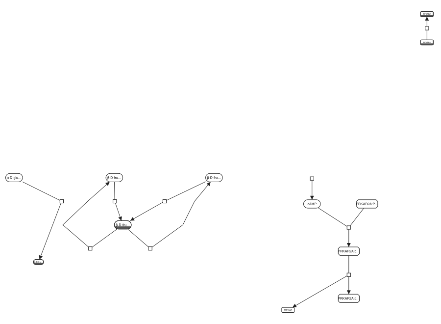
rules-claude (pathway-specific) 1.603 s · 8 of 27 nodes not placed; 21 drawn nodes (clones) · sbml_pathway_layout 787d47a SVG positions (JSON) RuntimeError: ValueError: min() iterable argument is empty
ecmapper-brenda (pathway-specific) 5.763 s · ecmapper a711a72 RuntimeError: ValueError: min() iterable argument is empty
ecmapper-brenda-packed (pathway-specific) 8.288 s · ecmapper a711a72 metacarto (pathway-specific) 3.338 s · 5 of 27 nodes not placed; 23 drawn nodes (clones) · MetaCarto v2.0.0 SVG positions (JSON) sbml2map (pathway-specific) 2.985 s · 5 of 27 nodes not placed · sbml2map ca3873a SVG positions (JSON) sbmlnetwork (SBML-specific) 0.80 s · 28 drawn nodes (clones) · sbmlnetwork 0.5.12 SVG positions (JSON) cytoscape-fcose-compartments (compartments as groups) 0.692 s · cytoscape 3.33.1, cytoscape-fcose 2.2.0 SVG positions (JSON) cytoscape-cose-bilkent-compartments (compartments as groups) 0.5 s · cytoscape 3.33.1, cytoscape-cose-bilkent 4.1.0 SVG positions (JSON) reagraph-force-compartments (compartments as groups) 1.096 s · reagraph 4.32.0 SVG positions (JSON) cytoscape-fcose (compound-capable force-directed) 0.588 s · cytoscape 3.33.1, cytoscape-fcose 2.2.0 SVG positions (JSON) cytoscape-cose-bilkent (compound-capable force-directed) 0.496 s · cytoscape 3.33.1, cytoscape-cose-bilkent 4.1.0 SVG positions (JSON) cytoscape-elk-layered (layered) 0.876 s · cytoscape 3.33.1, cytoscape-elk 2.3.0, elkjs 0.9.3 SVG positions (JSON) graphviz-dot (layered) 0.054 s · pygraphviz 2.0.4, Graphviz 14.1.5 SVG positions (JSON) cytoscape-dagre (layered) 0.572 s · cytoscape 3.33.1, cytoscape-dagre 2.5.0 SVG positions (JSON) cytoscape-klay (layered) 0.813 s · cytoscape 3.33.1, cytoscape-klay 3.1.4 SVG positions (JSON) igraph-sugiyama (layered) 0.02 s · igraph 1.0.0 SVG positions (JSON) graphviz-neato (stress) 0.062 s · pygraphviz 2.0.4, Graphviz 14.1.5 SVG positions (JSON) cytoscape-elk-stress (stress) 1.04 s · cytoscape 3.33.1, cytoscape-elk 2.3.0, elkjs 0.9.3 SVG positions (JSON) cytoscape-cola (stress, with constraints) 0.871 s · cytoscape 3.33.1, cytoscape-cola 2.5.1 SVG positions (JSON) networkx-kamada_kawai (stress) 0.515 s · networkx 3.7 SVG positions (JSON) igraph-kk (stress) 0.038 s · igraph 1.0.0 SVG positions (JSON) graphviz-sfdp (force-directed) 0.077 s · pygraphviz 2.0.4, Graphviz 14.1.5 SVG positions (JSON) graphviz-fdp (force-directed) 0.105 s · pygraphviz 2.0.4, Graphviz 14.1.5 SVG positions (JSON) igraph-fr (force-directed) 0.034 s · igraph 1.0.0 SVG positions (JSON) networkx-spring (force-directed) 0.03 s · networkx 3.7 SVG positions (JSON) cytoscape-cose (force-directed) 0.591 s · cytoscape 3.33.1 SVG positions (JSON) cytoscape-elk-force (force-directed) 1.046 s · cytoscape 3.33.1, cytoscape-elk 2.3.0, elkjs 0.9.3 SVG positions (JSON) graphology-forceatlas2 (force-directed) 0.989 s · graphology 0.26.0, graphology-layout-forceatlas2 0.10.1 SVG positions (JSON) graphology-forceatlas2-noverlap (force-directed) 1.054 s · graphology 0.26.0, graphology-layout-forceatlas2 0.10.1, graphology-layout-noverlap 0.4.2 SVG positions (JSON) reagraph-force (force-directed) 1.026 s · reagraph 4.32.0 SVG positions (JSON) igraph-graphopt (force-directed) 0.025 s · igraph 1.0.0 SVG positions (JSON) igraph-drl (for large graphs) 1.033 s · igraph 1.0.0 SVG positions (JSON) igraph-lgl (for large graphs) 0.032 s · igraph 1.0.0 SVG positions (JSON) graphviz-twopi (radial) 0.07 s · pygraphviz 2.0.4, Graphviz 14.1.5 SVG positions (JSON) graphviz-circo (circular) 0.078 s · pygraphviz 2.0.4, Graphviz 14.1.5 SVG positions (JSON) cytoscape-elk-mrtree (tree) 0.746 s · cytoscape 3.33.1, cytoscape-elk 2.3.0, elkjs 0.9.3 SVG positions (JSON) igraph-mds (baseline) 0.022 s · igraph 1.0.0 SVG positions (JSON) networkx-spectral (baseline) 0.028 s · networkx 3.7 SVG positions (JSON)
Scores (click a column to sort; best values bold; hover a header for what it measures) F001-glycolysis
Reference : F001-glycolysis.sbgn 0.0 s SVG positions (JSON)
RuntimeError: 9 reactions, 0/20 formulas, 2 cofactors, 1 drawing(s)
rules-claude (pathway-specific) 1.252 s · sbml_pathway_layout 787d47a SVG positions (JSON) RuntimeError: ValueError: min() iterable argument is empty
ecmapper-brenda (pathway-specific) 8.069 s · ecmapper a711a72 RuntimeError: ValueError: min() iterable argument is empty
ecmapper-brenda-packed (pathway-specific) 7.78 s · ecmapper a711a72 metacarto (pathway-specific) 3.187 s · 4 of 26 nodes not placed; 23 drawn nodes (clones) · MetaCarto v2.0.0 SVG positions (JSON) sbml2map (pathway-specific) 2.731 s · 4 of 26 nodes not placed · sbml2map ca3873a SVG positions (JSON) sbmlnetwork (SBML-specific) 0.82 s · 27 drawn nodes (clones) · sbmlnetwork 0.5.12 SVG positions (JSON) cytoscape-fcose-compartments (compartments as groups) 0.628 s · cytoscape 3.33.1, cytoscape-fcose 2.2.0 SVG positions (JSON) cytoscape-cose-bilkent-compartments (compartments as groups) 0.544 s · cytoscape 3.33.1, cytoscape-cose-bilkent 4.1.0 SVG positions (JSON) reagraph-force-compartments (compartments as groups) 1.123 s · reagraph 4.32.0 SVG positions (JSON) cytoscape-fcose (compound-capable force-directed) 0.554 s · cytoscape 3.33.1, cytoscape-fcose 2.2.0 SVG positions (JSON) cytoscape-cose-bilkent (compound-capable force-directed) 0.591 s · cytoscape 3.33.1, cytoscape-cose-bilkent 4.1.0 SVG positions (JSON) cytoscape-elk-layered (layered) 0.979 s · cytoscape 3.33.1, cytoscape-elk 2.3.0, elkjs 0.9.3 SVG positions (JSON) graphviz-dot (layered) 0.046 s · pygraphviz 2.0.4, Graphviz 14.1.5 SVG positions (JSON) cytoscape-dagre (layered) 0.568 s · cytoscape 3.33.1, cytoscape-dagre 2.5.0 SVG positions (JSON) cytoscape-klay (layered) 0.708 s · cytoscape 3.33.1, cytoscape-klay 3.1.4 SVG positions (JSON) igraph-sugiyama (layered) 0.02 s · igraph 1.0.0 SVG positions (JSON) graphviz-neato (stress) 0.052 s · pygraphviz 2.0.4, Graphviz 14.1.5 SVG positions (JSON) cytoscape-elk-stress (stress) 1.289 s · cytoscape 3.33.1, cytoscape-elk 2.3.0, elkjs 0.9.3 SVG positions (JSON) cytoscape-cola (stress, with constraints) 0.991 s · cytoscape 3.33.1, cytoscape-cola 2.5.1 SVG positions (JSON) networkx-kamada_kawai (stress) 0.45 s · networkx 3.7 SVG positions (JSON) igraph-kk (stress) 0.028 s · igraph 1.0.0 SVG positions (JSON) graphviz-sfdp (force-directed) 0.053 s · pygraphviz 2.0.4, Graphviz 14.1.5 SVG positions (JSON) graphviz-fdp (force-directed) 0.053 s · pygraphviz 2.0.4, Graphviz 14.1.5 SVG positions (JSON) igraph-fr (force-directed) 0.02 s · igraph 1.0.0 SVG positions (JSON) networkx-spring (force-directed) 0.03 s · networkx 3.7 SVG positions (JSON) cytoscape-cose (force-directed) 0.539 s · cytoscape 3.33.1 SVG positions (JSON) cytoscape-elk-force (force-directed) 1.147 s · cytoscape 3.33.1, cytoscape-elk 2.3.0, elkjs 0.9.3 SVG positions (JSON) graphology-forceatlas2 (force-directed) 0.97 s · graphology 0.26.0, graphology-layout-forceatlas2 0.10.1 SVG positions (JSON) graphology-forceatlas2-noverlap (force-directed) 1.094 s · graphology 0.26.0, graphology-layout-forceatlas2 0.10.1, graphology-layout-noverlap 0.4.2 SVG positions (JSON) reagraph-force (force-directed) 1.092 s · reagraph 4.32.0 SVG positions (JSON) igraph-graphopt (force-directed) 0.022 s · igraph 1.0.0 SVG positions (JSON) igraph-drl (for large graphs) 0.938 s · igraph 1.0.0 SVG positions (JSON) igraph-lgl (for large graphs) 0.028 s · igraph 1.0.0 SVG positions (JSON) graphviz-twopi (radial) 0.049 s · pygraphviz 2.0.4, Graphviz 14.1.5 SVG positions (JSON) graphviz-circo (circular) 0.047 s · pygraphviz 2.0.4, Graphviz 14.1.5 SVG positions (JSON) cytoscape-elk-mrtree (tree) 0.966 s · cytoscape 3.33.1, cytoscape-elk 2.3.0, elkjs 0.9.3 SVG positions (JSON) igraph-mds (baseline) 0.018 s · igraph 1.0.0 SVG positions (JSON) networkx-spectral (baseline) 0.024 s · networkx 3.7 SVG positions (JSON)
Scores (click a column to sort; best values bold; hover a header for what it measures) F003-mevalonate
Reference : F003-mevalonate.sbgn 0.0 s SVG positions (JSON)
RuntimeError: 13 reactions, 0/42 formulas, 0 cofactors, 1 drawing(s)
rules-claude (pathway-specific) 3.994 s · sbml_pathway_layout 787d47a SVG positions (JSON) RuntimeError: ValueError: min() iterable argument is empty
ecmapper-brenda (pathway-specific) 5.604 s · ecmapper a711a72 RuntimeError: ValueError: min() iterable argument is empty
ecmapper-brenda-packed (pathway-specific) 5.509 s · ecmapper a711a72 metacarto (pathway-specific) 3.081 s · 4 of 42 nodes not placed; 39 drawn nodes (clones) · MetaCarto v2.0.0 SVG positions (JSON) sbml2map (pathway-specific) 3.962 s · 4 of 42 nodes not placed · sbml2map ca3873a SVG positions (JSON) sbmlnetwork (SBML-specific) 0.89 s · sbmlnetwork 0.5.12 SVG positions (JSON) cytoscape-fcose-compartments (compartments as groups) 0.675 s · cytoscape 3.33.1, cytoscape-fcose 2.2.0 SVG positions (JSON) cytoscape-cose-bilkent-compartments (compartments as groups) 0.645 s · cytoscape 3.33.1, cytoscape-cose-bilkent 4.1.0 SVG positions (JSON) reagraph-force-compartments (compartments as groups) 1.11 s · reagraph 4.32.0 SVG positions (JSON) cytoscape-fcose (compound-capable force-directed) 0.657 s · cytoscape 3.33.1, cytoscape-fcose 2.2.0 SVG positions (JSON) cytoscape-cose-bilkent (compound-capable force-directed) 0.7 s · cytoscape 3.33.1, cytoscape-cose-bilkent 4.1.0 SVG positions (JSON) cytoscape-elk-layered (layered) 0.988 s · cytoscape 3.33.1, cytoscape-elk 2.3.0, elkjs 0.9.3 SVG positions (JSON) graphviz-dot (layered) 0.076 s · pygraphviz 2.0.4, Graphviz 14.1.5 SVG positions (JSON) cytoscape-dagre (layered) 0.648 s · cytoscape 3.33.1, cytoscape-dagre 2.5.0 SVG positions (JSON) cytoscape-klay (layered) 0.862 s · cytoscape 3.33.1, cytoscape-klay 3.1.4 SVG positions (JSON) igraph-sugiyama (layered) 0.041 s · igraph 1.0.0 SVG positions (JSON) graphviz-neato (stress) 0.076 s · pygraphviz 2.0.4, Graphviz 14.1.5 SVG positions (JSON) cytoscape-elk-stress (stress) 1.484 s · cytoscape 3.33.1, cytoscape-elk 2.3.0, elkjs 0.9.3 SVG positions (JSON) cytoscape-cola (stress, with constraints) 1.293 s · cytoscape 3.33.1, cytoscape-cola 2.5.1 SVG positions (JSON) networkx-kamada_kawai (stress) 0.307 s · networkx 3.7 SVG positions (JSON) igraph-kk (stress) 0.033 s · igraph 1.0.0 SVG positions (JSON) graphviz-sfdp (force-directed) 0.115 s · pygraphviz 2.0.4, Graphviz 14.1.5 SVG positions (JSON) graphviz-fdp (force-directed) 0.112 s · pygraphviz 2.0.4, Graphviz 14.1.5 SVG positions (JSON) igraph-fr (force-directed) 0.034 s · igraph 1.0.0 SVG positions (JSON) networkx-spring (force-directed) 0.047 s · networkx 3.7 SVG positions (JSON) cytoscape-cose (force-directed) 0.725 s · cytoscape 3.33.1 SVG positions (JSON) cytoscape-elk-force (force-directed) 1.472 s · cytoscape 3.33.1, cytoscape-elk 2.3.0, elkjs 0.9.3 SVG positions (JSON) graphology-forceatlas2 (force-directed) 1.027 s · graphology 0.26.0, graphology-layout-forceatlas2 0.10.1 SVG positions (JSON) graphology-forceatlas2-noverlap (force-directed) 1.15 s · graphology 0.26.0, graphology-layout-forceatlas2 0.10.1, graphology-layout-noverlap 0.4.2 SVG positions (JSON) reagraph-force (force-directed) 1.051 s · reagraph 4.32.0 SVG positions (JSON) igraph-graphopt (force-directed) 0.034 s · igraph 1.0.0 SVG positions (JSON) igraph-drl (for large graphs) 1.174 s · igraph 1.0.0 SVG positions (JSON) igraph-lgl (for large graphs) 0.049 s · igraph 1.0.0 SVG positions (JSON) graphviz-twopi (radial) 0.047 s · pygraphviz 2.0.4, Graphviz 14.1.5 SVG positions (JSON) graphviz-circo (circular) 0.058 s · pygraphviz 2.0.4, Graphviz 14.1.5 SVG positions (JSON) cytoscape-elk-mrtree (tree) 0.785 s · cytoscape 3.33.1, cytoscape-elk 2.3.0, elkjs 0.9.3 SVG positions (JSON) igraph-mds (baseline) 0.04 s · igraph 1.0.0 SVG positions (JSON) networkx-spectral (baseline) 0.037 s · networkx 3.7 SVG positions (JSON)
Scores (click a column to sort; best values bold; hover a header for what it measures) F004-glycogen-liver
Reference : F004-glycogen-liver.sbgn 0.0 s SVG positions (JSON)
RuntimeError: 26 reactions, 0/81 formulas, 10 cofactors, 1 drawing(s)
rules-claude (pathway-specific) 2.23 s · sbml_pathway_layout 787d47a SVG positions (JSON) RuntimeError: ValueError: min() iterable argument is empty
ecmapper-brenda (pathway-specific) 8.373 s · ecmapper a711a72 RuntimeError: ValueError: min() iterable argument is empty
ecmapper-brenda-packed (pathway-specific) 7.996 s · ecmapper a711a72 metacarto (pathway-specific) 3.541 s · 5 of 84 nodes not placed; 89 drawn nodes (clones) · MetaCarto v2.0.0 SVG positions (JSON) sbml2map (pathway-specific) 5.554 s · 5 of 84 nodes not placed · sbml2map ca3873a SVG positions (JSON) sbmlnetwork (SBML-specific) 1.27 s · 85 drawn nodes (clones) · sbmlnetwork 0.5.12 SVG positions (JSON) cytoscape-fcose-compartments (compartments as groups) 0.664 s · cytoscape 3.33.1, cytoscape-fcose 2.2.0 SVG positions (JSON) cytoscape-cose-bilkent-compartments (compartments as groups) 0.696 s · cytoscape 3.33.1, cytoscape-cose-bilkent 4.1.0 SVG positions (JSON) reagraph-force-compartments (compartments as groups) 1.22 s · reagraph 4.32.0 SVG positions (JSON) cytoscape-fcose (compound-capable force-directed) 0.604 s · cytoscape 3.33.1, cytoscape-fcose 2.2.0 SVG positions (JSON) cytoscape-cose-bilkent (compound-capable force-directed) 0.579 s · cytoscape 3.33.1, cytoscape-cose-bilkent 4.1.0 SVG positions (JSON) cytoscape-elk-layered (layered) 0.964 s · cytoscape 3.33.1, cytoscape-elk 2.3.0, elkjs 0.9.3 SVG positions (JSON) graphviz-dot (layered) 0.056 s · pygraphviz 2.0.4, Graphviz 14.1.5 SVG positions (JSON) cytoscape-dagre (layered) 0.659 s · cytoscape 3.33.1, cytoscape-dagre 2.5.0 SVG positions (JSON) cytoscape-klay (layered) 0.714 s · cytoscape 3.33.1, cytoscape-klay 3.1.4 SVG positions (JSON) igraph-sugiyama (layered) 0.026 s · igraph 1.0.0 SVG positions (JSON) graphviz-neato (stress) 0.145 s · pygraphviz 2.0.4, Graphviz 14.1.5 SVG positions (JSON) cytoscape-elk-stress (stress) 3.363 s · cytoscape 3.33.1, cytoscape-elk 2.3.0, elkjs 0.9.3 SVG positions (JSON) cytoscape-cola (stress, with constraints) 8.939 s · cytoscape 3.33.1, cytoscape-cola 2.5.1 SVG positions (JSON) networkx-kamada_kawai (stress) 0.511 s · networkx 3.7 SVG positions (JSON) igraph-kk (stress) 0.04 s · igraph 1.0.0 SVG positions (JSON) graphviz-sfdp (force-directed) 0.087 s · pygraphviz 2.0.4, Graphviz 14.1.5 SVG positions (JSON) graphviz-fdp (force-directed) 0.112 s · pygraphviz 2.0.4, Graphviz 14.1.5 SVG positions (JSON) igraph-fr (force-directed) 0.041 s · igraph 1.0.0 SVG positions (JSON) networkx-spring (force-directed) 0.054 s · networkx 3.7 SVG positions (JSON) cytoscape-cose (force-directed) 0.875 s · cytoscape 3.33.1 SVG positions (JSON) cytoscape-elk-force (force-directed) 3.188 s · cytoscape 3.33.1, cytoscape-elk 2.3.0, elkjs 0.9.3 SVG positions (JSON) graphology-forceatlas2 (force-directed) 1.09 s · graphology 0.26.0, graphology-layout-forceatlas2 0.10.1 SVG positions (JSON) graphology-forceatlas2-noverlap (force-directed) 1.175 s · graphology 0.26.0, graphology-layout-forceatlas2 0.10.1, graphology-layout-noverlap 0.4.2 SVG positions (JSON) reagraph-force (force-directed) 1.1 s · reagraph 4.32.0 SVG positions (JSON) igraph-graphopt (force-directed) 0.054 s · igraph 1.0.0 SVG positions (JSON) igraph-drl (for large graphs) 0.979 s · igraph 1.0.0 SVG positions (JSON) igraph-lgl (for large graphs) 0.064 s · igraph 1.0.0 SVG positions (JSON) graphviz-twopi (radial) 0.057 s · pygraphviz 2.0.4, Graphviz 14.1.5 SVG positions (JSON) graphviz-circo (circular) 0.077 s · pygraphviz 2.0.4, Graphviz 14.1.5 SVG positions (JSON) cytoscape-elk-mrtree (tree) 0.869 s · cytoscape 3.33.1, cytoscape-elk 2.3.0, elkjs 0.9.3 SVG positions (JSON) igraph-mds (baseline) 0.025 s · igraph 1.0.0 SVG positions (JSON) networkx-spectral (baseline) 0.029 s · networkx 3.7 SVG positions (JSON)
Scores (click a column to sort; best values bold; hover a header for what it measures) F004-glycogen-muscle
Reference : F004-glycogen-muscle.sbgn 0.0 s SVG positions (JSON)
RuntimeError: 26 reactions, 0/81 formulas, 10 cofactors, 1 drawing(s)
rules-claude (pathway-specific) 2.044 s · sbml_pathway_layout 787d47a SVG positions (JSON) RuntimeError: ValueError: min() iterable argument is empty
ecmapper-brenda (pathway-specific) 5.704 s · ecmapper a711a72 RuntimeError: ValueError: min() iterable argument is empty
ecmapper-brenda-packed (pathway-specific) 6.865 s · ecmapper a711a72 metacarto (pathway-specific) 4.41 s · 5 of 84 nodes not placed; 89 drawn nodes (clones) · MetaCarto v2.0.0 SVG positions (JSON) sbml2map (pathway-specific) 5.534 s · 5 of 84 nodes not placed · sbml2map ca3873a SVG positions (JSON) sbmlnetwork (SBML-specific) 1.25 s · 85 drawn nodes (clones) · sbmlnetwork 0.5.12 SVG positions (JSON) cytoscape-fcose-compartments (compartments as groups) 0.608 s · cytoscape 3.33.1, cytoscape-fcose 2.2.0 SVG positions (JSON) cytoscape-cose-bilkent-compartments (compartments as groups) 0.727 s · cytoscape 3.33.1, cytoscape-cose-bilkent 4.1.0 SVG positions (JSON) reagraph-force-compartments (compartments as groups) 1.275 s · reagraph 4.32.0 SVG positions (JSON) cytoscape-fcose (compound-capable force-directed) 0.582 s · cytoscape 3.33.1, cytoscape-fcose 2.2.0 SVG positions (JSON) cytoscape-cose-bilkent (compound-capable force-directed) 0.583 s · cytoscape 3.33.1, cytoscape-cose-bilkent 4.1.0 SVG positions (JSON) cytoscape-elk-layered (layered) 1.405 s · cytoscape 3.33.1, cytoscape-elk 2.3.0, elkjs 0.9.3 SVG positions (JSON) graphviz-dot (layered) 0.06 s · pygraphviz 2.0.4, Graphviz 14.1.5 SVG positions (JSON) cytoscape-dagre (layered) 0.758 s · cytoscape 3.33.1, cytoscape-dagre 2.5.0 SVG positions (JSON) cytoscape-klay (layered) 0.863 s · cytoscape 3.33.1, cytoscape-klay 3.1.4 SVG positions (JSON) igraph-sugiyama (layered) 0.023 s · igraph 1.0.0 SVG positions (JSON) graphviz-neato (stress) 0.14 s · pygraphviz 2.0.4, Graphviz 14.1.5 SVG positions (JSON) cytoscape-elk-stress (stress) 3.566 s · cytoscape 3.33.1, cytoscape-elk 2.3.0, elkjs 0.9.3 SVG positions (JSON) cytoscape-cola (stress, with constraints) 15.786 s · cytoscape 3.33.1, cytoscape-cola 2.5.1 SVG positions (JSON) networkx-kamada_kawai (stress) 0.539 s · networkx 3.7 SVG positions (JSON) igraph-kk (stress) 0.034 s · igraph 1.0.0 SVG positions (JSON) graphviz-sfdp (force-directed) 0.083 s · pygraphviz 2.0.4, Graphviz 14.1.5 SVG positions (JSON) graphviz-fdp (force-directed) 0.111 s · pygraphviz 2.0.4, Graphviz 14.1.5 SVG positions (JSON) igraph-fr (force-directed) 0.039 s · igraph 1.0.0 SVG positions (JSON) networkx-spring (force-directed) 0.046 s · networkx 3.7 SVG positions (JSON) cytoscape-cose (force-directed) 0.863 s · cytoscape 3.33.1 SVG positions (JSON) cytoscape-elk-force (force-directed) 3.402 s · cytoscape 3.33.1, cytoscape-elk 2.3.0, elkjs 0.9.3 SVG positions (JSON) graphology-forceatlas2 (force-directed) 1.165 s · graphology 0.26.0, graphology-layout-forceatlas2 0.10.1 SVG positions (JSON) graphology-forceatlas2-noverlap (force-directed) 1.388 s · graphology 0.26.0, graphology-layout-forceatlas2 0.10.1, graphology-layout-noverlap 0.4.2 SVG positions (JSON) reagraph-force (force-directed) 1.257 s · reagraph 4.32.0 SVG positions (JSON) igraph-graphopt (force-directed) 0.05 s · igraph 1.0.0 SVG positions (JSON) igraph-drl (for large graphs) 0.988 s · igraph 1.0.0 SVG positions (JSON) igraph-lgl (for large graphs) 0.059 s · igraph 1.0.0 SVG positions (JSON) graphviz-twopi (radial) 0.051 s · pygraphviz 2.0.4, Graphviz 14.1.5 SVG positions (JSON) graphviz-circo (circular) 0.087 s · pygraphviz 2.0.4, Graphviz 14.1.5 SVG positions (JSON) cytoscape-elk-mrtree (tree) 1.036 s · cytoscape 3.33.1, cytoscape-elk 2.3.0, elkjs 0.9.3 SVG positions (JSON) igraph-mds (baseline) 0.023 s · igraph 1.0.0 SVG positions (JSON) networkx-spectral (baseline) 0.028 s · networkx 3.7 SVG positions (JSON)
Scores (click a column to sort; best values bold; hover a header for what it measures) F005-srebp
Reference : F005-srebp.sbgn 0.0 s · 2 of 28 nodes not placed SVG positions (JSON)
RuntimeError: 9 reactions, 0/26 formulas, 0 cofactors, 1 drawing(s)
rules-claude (pathway-specific) 1.186 s · sbml_pathway_layout 787d47a SVG positions (JSON) RuntimeError: ValueError: min() iterable argument is empty
ecmapper-brenda (pathway-specific) 5.491 s · ecmapper a711a72 RuntimeError: ValueError: min() iterable argument is empty
ecmapper-brenda-packed (pathway-specific) 6.117 s · ecmapper a711a72 metacarto (pathway-specific) 2.68 s · 4 of 28 nodes not placed; 27 drawn nodes (clones) · MetaCarto v2.0.0 SVG positions (JSON) sbml2map (pathway-specific) 2.499 s · 4 of 28 nodes not placed · sbml2map ca3873a SVG positions (JSON) sbmlnetwork (SBML-specific) 0.79 s · 29 drawn nodes (clones) · sbmlnetwork 0.5.12 SVG positions (JSON) cytoscape-fcose-compartments (compartments as groups) 0.576 s · cytoscape 3.33.1, cytoscape-fcose 2.2.0 SVG positions (JSON) cytoscape-cose-bilkent-compartments (compartments as groups) 0.54 s · cytoscape 3.33.1, cytoscape-cose-bilkent 4.1.0 SVG positions (JSON) reagraph-force-compartments (compartments as groups) 1.012 s · reagraph 4.32.0 SVG positions (JSON) cytoscape-fcose (compound-capable force-directed) 0.593 s · cytoscape 3.33.1, cytoscape-fcose 2.2.0 SVG positions (JSON) cytoscape-cose-bilkent (compound-capable force-directed) 0.515 s · cytoscape 3.33.1, cytoscape-cose-bilkent 4.1.0 SVG positions (JSON) cytoscape-elk-layered (layered) 0.876 s · cytoscape 3.33.1, cytoscape-elk 2.3.0, elkjs 0.9.3 SVG positions (JSON) graphviz-dot (layered) 0.053 s · pygraphviz 2.0.4, Graphviz 14.1.5 SVG positions (JSON) cytoscape-dagre (layered) 0.565 s · cytoscape 3.33.1, cytoscape-dagre 2.5.0 SVG positions (JSON) cytoscape-klay (layered) 0.54 s · cytoscape 3.33.1, cytoscape-klay 3.1.4 SVG positions (JSON) igraph-sugiyama (layered) 0.026 s · igraph 1.0.0 SVG positions (JSON) graphviz-neato (stress) 0.06 s · pygraphviz 2.0.4, Graphviz 14.1.5 SVG positions (JSON) cytoscape-elk-stress (stress) 1.175 s · cytoscape 3.33.1, cytoscape-elk 2.3.0, elkjs 0.9.3 SVG positions (JSON) cytoscape-cola (stress, with constraints) 1.02 s · cytoscape 3.33.1, cytoscape-cola 2.5.1 SVG positions (JSON) networkx-kamada_kawai (stress) 0.882 s · networkx 3.7 SVG positions (JSON) igraph-kk (stress) 0.032 s · igraph 1.0.0 SVG positions (JSON) graphviz-sfdp (force-directed) 0.056 s · pygraphviz 2.0.4, Graphviz 14.1.5 SVG positions (JSON) graphviz-fdp (force-directed) 0.065 s · pygraphviz 2.0.4, Graphviz 14.1.5 SVG positions (JSON) igraph-fr (force-directed) 0.032 s · igraph 1.0.0 SVG positions (JSON) networkx-spring (force-directed) 0.028 s · networkx 3.7 SVG positions (JSON) cytoscape-cose (force-directed) 0.687 s · cytoscape 3.33.1 SVG positions (JSON) cytoscape-elk-force (force-directed) 1.101 s · cytoscape 3.33.1, cytoscape-elk 2.3.0, elkjs 0.9.3 SVG positions (JSON) graphology-forceatlas2 (force-directed) 1.055 s · graphology 0.26.0, graphology-layout-forceatlas2 0.10.1 SVG positions (JSON) graphology-forceatlas2-noverlap (force-directed) 0.99 s · graphology 0.26.0, graphology-layout-forceatlas2 0.10.1, graphology-layout-noverlap 0.4.2 SVG positions (JSON) reagraph-force (force-directed) 1.125 s · reagraph 4.32.0 SVG positions (JSON) igraph-graphopt (force-directed) 0.024 s · igraph 1.0.0 SVG positions (JSON) igraph-drl (for large graphs) 1.038 s · igraph 1.0.0 SVG positions (JSON) igraph-lgl (for large graphs) 0.027 s · igraph 1.0.0 SVG positions (JSON) graphviz-twopi (radial) 0.052 s · pygraphviz 2.0.4, Graphviz 14.1.5 SVG positions (JSON) graphviz-circo (circular) 0.068 s · pygraphviz 2.0.4, Graphviz 14.1.5 SVG positions (JSON) cytoscape-elk-mrtree (tree) 0.819 s · cytoscape 3.33.1, cytoscape-elk 2.3.0, elkjs 0.9.3 SVG positions (JSON) igraph-mds (baseline) 0.02 s · igraph 1.0.0 SVG positions (JSON) networkx-spectral (baseline) 0.023 s · networkx 3.7 SVG positions (JSON)
Scores (click a column to sort; best values bold; hover a header for what it measures) F006-acly
Reference : F006-acly.sbgn 0.0 s · 1 of 30 nodes not placed SVG positions (JSON)
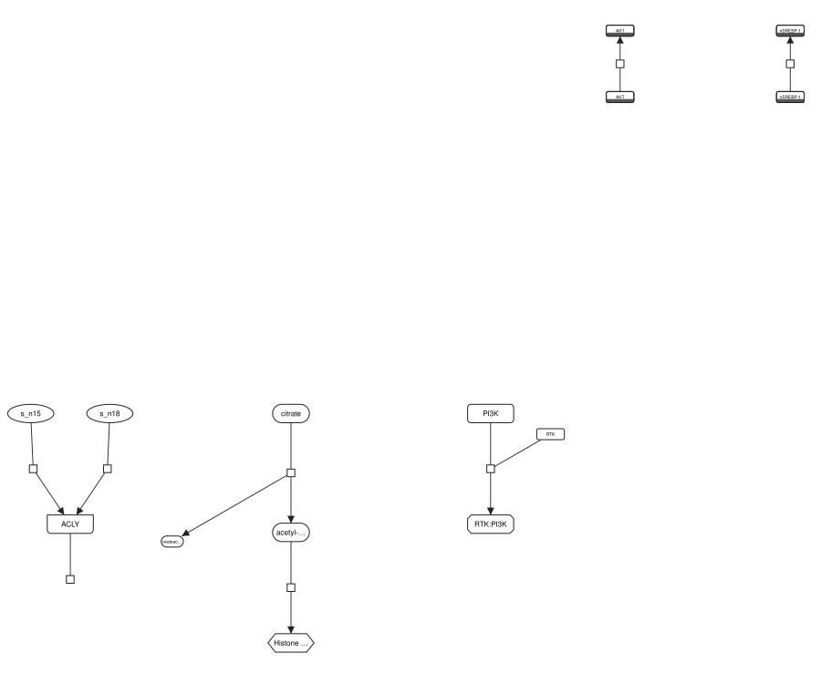
rules-claude (pathway-specific) 1.439 s · 10 of 30 nodes not placed; 22 drawn nodes (clones) · sbml_pathway_layout 787d47a SVG positions (JSON) RuntimeError: ValueError: min() iterable argument is empty
ecmapper-brenda (pathway-specific) 5.374 s · ecmapper a711a72 RuntimeError: ValueError: min() iterable argument is empty
ecmapper-brenda-packed (pathway-specific) 5.574 s · ecmapper a711a72 metacarto (pathway-specific) 3.226 s · 5 of 30 nodes not placed; 26 drawn nodes (clones) · MetaCarto v2.0.0 SVG positions (JSON) sbml2map (pathway-specific) 2.513 s · 5 of 30 nodes not placed · sbml2map ca3873a SVG positions (JSON) sbmlnetwork (SBML-specific) 0.85 s · sbmlnetwork 0.5.12 SVG positions (JSON) cytoscape-fcose-compartments (compartments as groups) 0.596 s · cytoscape 3.33.1, cytoscape-fcose 2.2.0 SVG positions (JSON) cytoscape-cose-bilkent-compartments (compartments as groups) 0.558 s · cytoscape 3.33.1, cytoscape-cose-bilkent 4.1.0 SVG positions (JSON) reagraph-force-compartments (compartments as groups) 1.062 s · reagraph 4.32.0 SVG positions (JSON) cytoscape-fcose (compound-capable force-directed) 0.563 s · cytoscape 3.33.1, cytoscape-fcose 2.2.0 SVG positions (JSON) cytoscape-cose-bilkent (compound-capable force-directed) 0.554 s · cytoscape 3.33.1, cytoscape-cose-bilkent 4.1.0 SVG positions (JSON) cytoscape-elk-layered (layered) 0.812 s · cytoscape 3.33.1, cytoscape-elk 2.3.0, elkjs 0.9.3 SVG positions (JSON) graphviz-dot (layered) 0.061 s · pygraphviz 2.0.4, Graphviz 14.1.5 SVG positions (JSON) cytoscape-dagre (layered) 0.541 s · cytoscape 3.33.1, cytoscape-dagre 2.5.0 SVG positions (JSON) cytoscape-klay (layered) 0.576 s · cytoscape 3.33.1, cytoscape-klay 3.1.4 SVG positions (JSON) igraph-sugiyama (layered) 0.028 s · igraph 1.0.0 SVG positions (JSON) graphviz-neato (stress) 0.06 s · pygraphviz 2.0.4, Graphviz 14.1.5 SVG positions (JSON) cytoscape-elk-stress (stress) 1.11 s · cytoscape 3.33.1, cytoscape-elk 2.3.0, elkjs 0.9.3 SVG positions (JSON) cytoscape-cola (stress, with constraints) 1.322 s · cytoscape 3.33.1, cytoscape-cola 2.5.1 SVG positions (JSON) networkx-kamada_kawai (stress) 0.605 s · networkx 3.7 SVG positions (JSON) igraph-kk (stress) 0.024 s · igraph 1.0.0 SVG positions (JSON) graphviz-sfdp (force-directed) 0.068 s · pygraphviz 2.0.4, Graphviz 14.1.5 SVG positions (JSON) graphviz-fdp (force-directed) 0.073 s · pygraphviz 2.0.4, Graphviz 14.1.5 SVG positions (JSON) igraph-fr (force-directed) 0.044 s · igraph 1.0.0 SVG positions (JSON) networkx-spring (force-directed) 0.031 s · networkx 3.7 SVG positions (JSON) cytoscape-cose (force-directed) 0.594 s · cytoscape 3.33.1 SVG positions (JSON) cytoscape-elk-force (force-directed) 1.135 s · cytoscape 3.33.1, cytoscape-elk 2.3.0, elkjs 0.9.3 SVG positions (JSON) graphology-forceatlas2 (force-directed) 1.014 s · graphology 0.26.0, graphology-layout-forceatlas2 0.10.1 SVG positions (JSON) graphology-forceatlas2-noverlap (force-directed) 1.157 s · graphology 0.26.0, graphology-layout-forceatlas2 0.10.1, graphology-layout-noverlap 0.4.2 SVG positions (JSON) reagraph-force (force-directed) 0.997 s · reagraph 4.32.0 SVG positions (JSON) igraph-graphopt (force-directed) 0.023 s · igraph 1.0.0 SVG positions (JSON) igraph-drl (for large graphs) 1.496 s · igraph 1.0.0 SVG positions (JSON) igraph-lgl (for large graphs) 0.032 s · igraph 1.0.0 SVG positions (JSON) graphviz-twopi (radial) 0.058 s · pygraphviz 2.0.4, Graphviz 14.1.5 SVG positions (JSON) graphviz-circo (circular) 0.056 s · pygraphviz 2.0.4, Graphviz 14.1.5 SVG positions (JSON) cytoscape-elk-mrtree (tree) 0.84 s · cytoscape 3.33.1, cytoscape-elk 2.3.0, elkjs 0.9.3 SVG positions (JSON) igraph-mds (baseline) 0.028 s · igraph 1.0.0 SVG positions (JSON) networkx-spectral (baseline) 0.03 s · networkx 3.7 SVG positions (JSON)
Scores (click a column to sort; best values bold; hover a header for what it measures) F007-inos
Reference : F007-inos.sbgn 0.0 s SVG positions (JSON)
RuntimeError: KeyError: '__d7_3'
rules-claude (pathway-specific) 1.436 s · sbml_pathway_layout 787d47a ecmapper-brenda (pathway-specific) 7.798 s · 49 of 56 nodes not placed · ecmapper a711a72 SVG positions (JSON) ecmapper-brenda-packed (pathway-specific) 5.896 s · 49 of 56 nodes not placed · ecmapper a711a72 SVG positions (JSON) metacarto (pathway-specific) 2.732 s · 4 of 56 nodes not placed; 54 drawn nodes (clones) · MetaCarto v2.0.0 SVG positions (JSON) sbml2map (pathway-specific) 3.585 s · 4 of 56 nodes not placed · sbml2map ca3873a SVG positions (JSON) sbmlnetwork (SBML-specific) 0.90 s · sbmlnetwork 0.5.12 SVG positions (JSON) cytoscape-fcose-compartments (compartments as groups) 0.631 s · cytoscape 3.33.1, cytoscape-fcose 2.2.0 SVG positions (JSON) cytoscape-cose-bilkent-compartments (compartments as groups) 0.534 s · cytoscape 3.33.1, cytoscape-cose-bilkent 4.1.0 SVG positions (JSON) reagraph-force-compartments (compartments as groups) 1.231 s · reagraph 4.32.0 SVG positions (JSON) cytoscape-fcose (compound-capable force-directed) 0.626 s · cytoscape 3.33.1, cytoscape-fcose 2.2.0 SVG positions (JSON) cytoscape-cose-bilkent (compound-capable force-directed) 0.689 s · cytoscape 3.33.1, cytoscape-cose-bilkent 4.1.0 SVG positions (JSON) cytoscape-elk-layered (layered) 0.86 s · cytoscape 3.33.1, cytoscape-elk 2.3.0, elkjs 0.9.3 SVG positions (JSON) graphviz-dot (layered) 0.056 s · pygraphviz 2.0.4, Graphviz 14.1.5 SVG positions (JSON) cytoscape-dagre (layered) 0.544 s · cytoscape 3.33.1, cytoscape-dagre 2.5.0 SVG positions (JSON) cytoscape-klay (layered) 0.645 s · cytoscape 3.33.1, cytoscape-klay 3.1.4 SVG positions (JSON) igraph-sugiyama (layered) 0.024 s · igraph 1.0.0 SVG positions (JSON) graphviz-neato (stress) 0.117 s · pygraphviz 2.0.4, Graphviz 14.1.5 SVG positions (JSON) cytoscape-elk-stress (stress) 2.048 s · cytoscape 3.33.1, cytoscape-elk 2.3.0, elkjs 0.9.3 SVG positions (JSON) cytoscape-cola (stress, with constraints) 3.249 s · cytoscape 3.33.1, cytoscape-cola 2.5.1 SVG positions (JSON) networkx-kamada_kawai (stress) 1.574 s · networkx 3.7 SVG positions (JSON) igraph-kk (stress) 0.029 s · igraph 1.0.0 SVG positions (JSON) graphviz-sfdp (force-directed) 0.067 s · pygraphviz 2.0.4, Graphviz 14.1.5 SVG positions (JSON) graphviz-fdp (force-directed) 0.084 s · pygraphviz 2.0.4, Graphviz 14.1.5 SVG positions (JSON) igraph-fr (force-directed) 0.032 s · igraph 1.0.0 SVG positions (JSON) networkx-spring (force-directed) 0.046 s · networkx 3.7 SVG positions (JSON) cytoscape-cose (force-directed) 0.827 s · cytoscape 3.33.1 SVG positions (JSON) cytoscape-elk-force (force-directed) 1.916 s · cytoscape 3.33.1, cytoscape-elk 2.3.0, elkjs 0.9.3 SVG positions (JSON) graphology-forceatlas2 (force-directed) 1.052 s · graphology 0.26.0, graphology-layout-forceatlas2 0.10.1 SVG positions (JSON) graphology-forceatlas2-noverlap (force-directed) 1.214 s · graphology 0.26.0, graphology-layout-forceatlas2 0.10.1, graphology-layout-noverlap 0.4.2 SVG positions (JSON) reagraph-force (force-directed) 1.207 s · reagraph 4.32.0 SVG positions (JSON) igraph-graphopt (force-directed) 0.038 s · igraph 1.0.0 SVG positions (JSON) igraph-drl (for large graphs) 1.172 s · igraph 1.0.0 SVG positions (JSON) igraph-lgl (for large graphs) 0.048 s · igraph 1.0.0 SVG positions (JSON) graphviz-twopi (radial) 0.05 s · pygraphviz 2.0.4, Graphviz 14.1.5 SVG positions (JSON) graphviz-circo (circular) 0.054 s · pygraphviz 2.0.4, Graphviz 14.1.5 SVG positions (JSON) cytoscape-elk-mrtree (tree) 0.936 s · cytoscape 3.33.1, cytoscape-elk 2.3.0, elkjs 0.9.3 SVG positions (JSON) igraph-mds (baseline) 0.021 s · igraph 1.0.0 SVG positions (JSON) networkx-spectral (baseline) 0.037 s · networkx 3.7 SVG positions (JSON)
Scores (click a column to sort; best values bold; hover a header for what it measures) F008-enos
Reference : F008-enos.sbgn 0.0 s SVG positions (JSON)
RuntimeError: 17 reactions, 0/55 formulas, 5 cofactors, 1 drawing(s)
rules-claude (pathway-specific) 3.329 s · sbml_pathway_layout 787d47a SVG positions (JSON) RuntimeError: ValueError: min() iterable argument is empty
ecmapper-brenda (pathway-specific) 5.381 s · ecmapper a711a72 RuntimeError: ValueError: min() iterable argument is empty
ecmapper-brenda-packed (pathway-specific) 7.94 s · ecmapper a711a72 metacarto (pathway-specific) 3.381 s · 3 of 57 nodes not placed; 70 drawn nodes (clones) · MetaCarto v2.0.0 SVG positions (JSON) sbml2map (pathway-specific) 3.923 s · 2 of 57 nodes not placed · sbml2map ca3873a SVG positions (JSON) sbmlnetwork (SBML-specific) 1.03 s · 59 drawn nodes (clones) · sbmlnetwork 0.5.12 SVG positions (JSON) cytoscape-fcose-compartments (compartments as groups) 0.603 s · cytoscape 3.33.1, cytoscape-fcose 2.2.0 SVG positions (JSON) cytoscape-cose-bilkent-compartments (compartments as groups) 0.558 s · cytoscape 3.33.1, cytoscape-cose-bilkent 4.1.0 SVG positions (JSON) reagraph-force-compartments (compartments as groups) 1.078 s · reagraph 4.32.0 SVG positions (JSON) cytoscape-fcose (compound-capable force-directed) 0.621 s · cytoscape 3.33.1, cytoscape-fcose 2.2.0 SVG positions (JSON) cytoscape-cose-bilkent (compound-capable force-directed) 0.67 s · cytoscape 3.33.1, cytoscape-cose-bilkent 4.1.0 SVG positions (JSON) cytoscape-elk-layered (layered) 0.953 s · cytoscape 3.33.1, cytoscape-elk 2.3.0, elkjs 0.9.3 SVG positions (JSON) graphviz-dot (layered) 0.053 s · pygraphviz 2.0.4, Graphviz 14.1.5 SVG positions (JSON) cytoscape-dagre (layered) 0.655 s · cytoscape 3.33.1, cytoscape-dagre 2.5.0 SVG positions (JSON) cytoscape-klay (layered) 0.713 s · cytoscape 3.33.1, cytoscape-klay 3.1.4 SVG positions (JSON) igraph-sugiyama (layered) 0.026 s · igraph 1.0.0 SVG positions (JSON) graphviz-neato (stress) 0.086 s · pygraphviz 2.0.4, Graphviz 14.1.5 SVG positions (JSON) cytoscape-elk-stress (stress) 1.985 s · cytoscape 3.33.1, cytoscape-elk 2.3.0, elkjs 0.9.3 SVG positions (JSON) cytoscape-cola (stress, with constraints) 10.852 s · cytoscape 3.33.1, cytoscape-cola 2.5.1 SVG positions (JSON) networkx-kamada_kawai (stress) 0.496 s · networkx 3.7 SVG positions (JSON) igraph-kk (stress) 0.036 s · igraph 1.0.0 SVG positions (JSON) graphviz-sfdp (force-directed) 0.081 s · pygraphviz 2.0.4, Graphviz 14.1.5 SVG positions (JSON) graphviz-fdp (force-directed) 0.097 s · pygraphviz 2.0.4, Graphviz 14.1.5 SVG positions (JSON) igraph-fr (force-directed) 0.041 s · igraph 1.0.0 SVG positions (JSON) networkx-spring (force-directed) 0.07 s · networkx 3.7 SVG positions (JSON) cytoscape-cose (force-directed) 0.824 s · cytoscape 3.33.1 SVG positions (JSON) cytoscape-elk-force (force-directed) 2.125 s · cytoscape 3.33.1, cytoscape-elk 2.3.0, elkjs 0.9.3 SVG positions (JSON) graphology-forceatlas2 (force-directed) 1.068 s · graphology 0.26.0, graphology-layout-forceatlas2 0.10.1 SVG positions (JSON) graphology-forceatlas2-noverlap (force-directed) 1.119 s · graphology 0.26.0, graphology-layout-forceatlas2 0.10.1, graphology-layout-noverlap 0.4.2 SVG positions (JSON) reagraph-force (force-directed) 1.134 s · reagraph 4.32.0 SVG positions (JSON) igraph-graphopt (force-directed) 0.037 s · igraph 1.0.0 SVG positions (JSON) igraph-drl (for large graphs) 1.003 s · igraph 1.0.0 SVG positions (JSON) igraph-lgl (for large graphs) 0.044 s · igraph 1.0.0 SVG positions (JSON) graphviz-twopi (radial) 0.064 s · pygraphviz 2.0.4, Graphviz 14.1.5 SVG positions (JSON) graphviz-circo (circular) 0.086 s · pygraphviz 2.0.4, Graphviz 14.1.5 SVG positions (JSON) cytoscape-elk-mrtree (tree) 0.848 s · cytoscape 3.33.1, cytoscape-elk 2.3.0, elkjs 0.9.3 SVG positions (JSON) igraph-mds (baseline) 0.024 s · igraph 1.0.0 SVG positions (JSON) networkx-spectral (baseline) 0.036 s · networkx 3.7 SVG positions (JSON)
Scores (click a column to sort; best values bold; hover a header for what it measures) F009-phosphoinositides
Reference : F009-phosphoinositides.sbgn 0.0 s SVG positions (JSON)
RuntimeError: 11 reactions, 0/24 formulas, 0 cofactors, 1 drawing(s)
rules-claude (pathway-specific) 1.89 s · sbml_pathway_layout 787d47a SVG positions (JSON) RuntimeError: ValueError: min() iterable argument is empty
ecmapper-brenda (pathway-specific) 5.351 s · ecmapper a711a72 RuntimeError: ValueError: min() iterable argument is empty
ecmapper-brenda-packed (pathway-specific) 5.588 s · ecmapper a711a72 metacarto (pathway-specific) 2.81 s · 6 of 33 nodes not placed; 28 drawn nodes (clones) · MetaCarto v2.0.0 SVG positions (JSON) sbml2map (pathway-specific) 3.008 s · 6 of 33 nodes not placed · sbml2map ca3873a SVG positions (JSON) sbmlnetwork (SBML-specific) 0.76 s · sbmlnetwork 0.5.12 SVG positions (JSON) cytoscape-fcose-compartments (compartments as groups) 0.538 s · cytoscape 3.33.1, cytoscape-fcose 2.2.0 SVG positions (JSON) cytoscape-cose-bilkent-compartments (compartments as groups) 0.514 s · cytoscape 3.33.1, cytoscape-cose-bilkent 4.1.0 SVG positions (JSON) reagraph-force-compartments (compartments as groups) 1.084 s · reagraph 4.32.0 SVG positions (JSON) cytoscape-fcose (compound-capable force-directed) 0.542 s · cytoscape 3.33.1, cytoscape-fcose 2.2.0 SVG positions (JSON) cytoscape-cose-bilkent (compound-capable force-directed) 0.499 s · cytoscape 3.33.1, cytoscape-cose-bilkent 4.1.0 SVG positions (JSON) cytoscape-elk-layered (layered) 0.92 s · cytoscape 3.33.1, cytoscape-elk 2.3.0, elkjs 0.9.3 SVG positions (JSON) graphviz-dot (layered) 0.052 s · pygraphviz 2.0.4, Graphviz 14.1.5 SVG positions (JSON) cytoscape-dagre (layered) 0.55 s · cytoscape 3.33.1, cytoscape-dagre 2.5.0 SVG positions (JSON) cytoscape-klay (layered) 0.634 s · cytoscape 3.33.1, cytoscape-klay 3.1.4 SVG positions (JSON) igraph-sugiyama (layered) 0.021 s · igraph 1.0.0 SVG positions (JSON) graphviz-neato (stress) 0.067 s · pygraphviz 2.0.4, Graphviz 14.1.5 SVG positions (JSON) cytoscape-elk-stress (stress) 1.221 s · cytoscape 3.33.1, cytoscape-elk 2.3.0, elkjs 0.9.3 SVG positions (JSON) cytoscape-cola (stress, with constraints) 1.213 s · cytoscape 3.33.1, cytoscape-cola 2.5.1 SVG positions (JSON) networkx-kamada_kawai (stress) 0.543 s · networkx 3.7 SVG positions (JSON) igraph-kk (stress) 0.023 s · igraph 1.0.0 SVG positions (JSON) graphviz-sfdp (force-directed) 0.052 s · pygraphviz 2.0.4, Graphviz 14.1.5 SVG positions (JSON) graphviz-fdp (force-directed) 0.067 s · pygraphviz 2.0.4, Graphviz 14.1.5 SVG positions (JSON) igraph-fr (force-directed) 0.026 s · igraph 1.0.0 SVG positions (JSON) networkx-spring (force-directed) 0.032 s · networkx 3.7 SVG positions (JSON) cytoscape-cose (force-directed) 0.691 s · cytoscape 3.33.1 SVG positions (JSON) cytoscape-elk-force (force-directed) 1.066 s · cytoscape 3.33.1, cytoscape-elk 2.3.0, elkjs 0.9.3 SVG positions (JSON) graphology-forceatlas2 (force-directed) 0.985 s · graphology 0.26.0, graphology-layout-forceatlas2 0.10.1 SVG positions (JSON) graphology-forceatlas2-noverlap (force-directed) 1.14 s · graphology 0.26.0, graphology-layout-forceatlas2 0.10.1, graphology-layout-noverlap 0.4.2 SVG positions (JSON) reagraph-force (force-directed) 1.155 s · reagraph 4.32.0 SVG positions (JSON) igraph-graphopt (force-directed) 0.025 s · igraph 1.0.0 SVG positions (JSON) igraph-drl (for large graphs) 0.828 s · igraph 1.0.0 SVG positions (JSON) igraph-lgl (for large graphs) 0.029 s · igraph 1.0.0 SVG positions (JSON) graphviz-twopi (radial) 0.046 s · pygraphviz 2.0.4, Graphviz 14.1.5 SVG positions (JSON) graphviz-circo (circular) 0.052 s · pygraphviz 2.0.4, Graphviz 14.1.5 SVG positions (JSON) cytoscape-elk-mrtree (tree) 0.74 s · cytoscape 3.33.1, cytoscape-elk 2.3.0, elkjs 0.9.3 SVG positions (JSON) igraph-mds (baseline) 0.019 s · igraph 1.0.0 SVG positions (JSON) networkx-spectral (baseline) 0.03 s · networkx 3.7 SVG positions (JSON)
Scores (click a column to sort; best values bold; hover a header for what it measures) F012-camp
Reference : F012-camp.sbgn 0.0 s SVG positions (JSON)
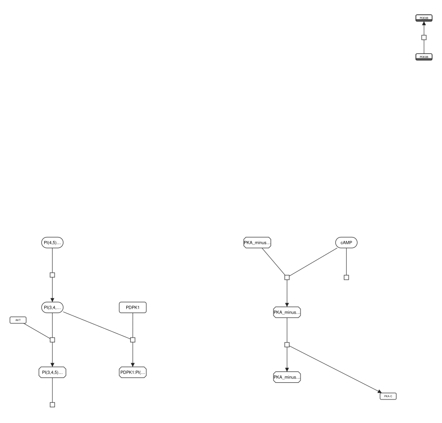
rules-claude (pathway-specific) 1.41 s · 4 of 24 nodes not placed; 21 drawn nodes (clones) · sbml_pathway_layout 787d47a SVG positions (JSON) RuntimeError: ValueError: min() iterable argument is empty
ecmapper-brenda (pathway-specific) 6.544 s · ecmapper a711a72 RuntimeError: ValueError: min() iterable argument is empty
ecmapper-brenda-packed (pathway-specific) 5.57 s · ecmapper a711a72 metacarto (pathway-specific) 2.773 s · 1 of 24 nodes not placed; 25 drawn nodes (clones) · MetaCarto v2.0.0 SVG positions (JSON) sbml2map (pathway-specific) 2.7 s · 1 of 24 nodes not placed · sbml2map ca3873a SVG positions (JSON) sbmlnetwork (SBML-specific) 0.76 s · sbmlnetwork 0.5.12 SVG positions (JSON) cytoscape-fcose-compartments (compartments as groups) 0.575 s · cytoscape 3.33.1, cytoscape-fcose 2.2.0 SVG positions (JSON) cytoscape-cose-bilkent-compartments (compartments as groups) 0.588 s · cytoscape 3.33.1, cytoscape-cose-bilkent 4.1.0 SVG positions (JSON) reagraph-force-compartments (compartments as groups) 0.999 s · reagraph 4.32.0 SVG positions (JSON) cytoscape-fcose (compound-capable force-directed) 0.693 s · cytoscape 3.33.1, cytoscape-fcose 2.2.0 SVG positions (JSON) cytoscape-cose-bilkent (compound-capable force-directed) 0.503 s · cytoscape 3.33.1, cytoscape-cose-bilkent 4.1.0 SVG positions (JSON) cytoscape-elk-layered (layered) 0.875 s · cytoscape 3.33.1, cytoscape-elk 2.3.0, elkjs 0.9.3 SVG positions (JSON) graphviz-dot (layered) 0.05 s · pygraphviz 2.0.4, Graphviz 14.1.5 SVG positions (JSON) cytoscape-dagre (layered) 0.851 s · cytoscape 3.33.1, cytoscape-dagre 2.5.0 SVG positions (JSON) cytoscape-klay (layered) 0.599 s · cytoscape 3.33.1, cytoscape-klay 3.1.4 SVG positions (JSON) igraph-sugiyama (layered) 0.017 s · igraph 1.0.0 SVG positions (JSON) graphviz-neato (stress) 0.048 s · pygraphviz 2.0.4, Graphviz 14.1.5 SVG positions (JSON) cytoscape-elk-stress (stress) 1.311 s · cytoscape 3.33.1, cytoscape-elk 2.3.0, elkjs 0.9.3 SVG positions (JSON) cytoscape-cola (stress, with constraints) 0.797 s · cytoscape 3.33.1, cytoscape-cola 2.5.1 SVG positions (JSON) networkx-kamada_kawai (stress) 0.569 s · networkx 3.7 SVG positions (JSON) igraph-kk (stress) 0.033 s · igraph 1.0.0 SVG positions (JSON) graphviz-sfdp (force-directed) 0.059 s · pygraphviz 2.0.4, Graphviz 14.1.5 SVG positions (JSON) graphviz-fdp (force-directed) 0.088 s · pygraphviz 2.0.4, Graphviz 14.1.5 SVG positions (JSON) igraph-fr (force-directed) 0.032 s · igraph 1.0.0 SVG positions (JSON) networkx-spring (force-directed) 0.029 s · networkx 3.7 SVG positions (JSON) cytoscape-cose (force-directed) 0.496 s · cytoscape 3.33.1 SVG positions (JSON) cytoscape-elk-force (force-directed) 1.051 s · cytoscape 3.33.1, cytoscape-elk 2.3.0, elkjs 0.9.3 SVG positions (JSON) graphology-forceatlas2 (force-directed) 1.026 s · graphology 0.26.0, graphology-layout-forceatlas2 0.10.1 SVG positions (JSON) graphology-forceatlas2-noverlap (force-directed) 1.043 s · graphology 0.26.0, graphology-layout-forceatlas2 0.10.1, graphology-layout-noverlap 0.4.2 SVG positions (JSON) reagraph-force (force-directed) 1.07 s · reagraph 4.32.0 SVG positions (JSON) igraph-graphopt (force-directed) 0.024 s · igraph 1.0.0 SVG positions (JSON) igraph-drl (for large graphs) 0.853 s · igraph 1.0.0 SVG positions (JSON) igraph-lgl (for large graphs) 0.023 s · igraph 1.0.0 SVG positions (JSON) graphviz-twopi (radial) 0.046 s · pygraphviz 2.0.4, Graphviz 14.1.5 SVG positions (JSON) graphviz-circo (circular) 0.056 s · pygraphviz 2.0.4, Graphviz 14.1.5 SVG positions (JSON) cytoscape-elk-mrtree (tree) 0.838 s · cytoscape 3.33.1, cytoscape-elk 2.3.0, elkjs 0.9.3 SVG positions (JSON) igraph-mds (baseline) 0.02 s · igraph 1.0.0 SVG positions (JSON) networkx-spectral (baseline) 0.095 s · networkx 3.7 SVG positions (JSON)
Scores (click a column to sort; best values bold; hover a header for what it measures) F014-carnitine
Reference : F014-carnitine.sbgn 0.0 s SVG positions (JSON)
RuntimeError: 12 reactions, 0/34 formulas, 0 cofactors, 1 drawing(s)
rules-claude (pathway-specific) 1.285 s · sbml_pathway_layout 787d47a SVG positions (JSON) RuntimeError: ValueError: min() iterable argument is empty
ecmapper-brenda (pathway-specific) 5.897 s · ecmapper a711a72 RuntimeError: ValueError: min() iterable argument is empty
ecmapper-brenda-packed (pathway-specific) 5.789 s · ecmapper a711a72 metacarto (pathway-specific) 2.956 s · 1 of 37 nodes not placed; 39 drawn nodes (clones) · MetaCarto v2.0.0 SVG positions (JSON) sbml2map (pathway-specific) 2.961 s · 1 of 37 nodes not placed · sbml2map ca3873a SVG positions (JSON) sbmlnetwork (SBML-specific) 0.79 s · sbmlnetwork 0.5.12 SVG positions (JSON) cytoscape-fcose-compartments (compartments as groups) 0.503 s · cytoscape 3.33.1, cytoscape-fcose 2.2.0 SVG positions (JSON) cytoscape-cose-bilkent-compartments (compartments as groups) 0.47 s · cytoscape 3.33.1, cytoscape-cose-bilkent 4.1.0 SVG positions (JSON) reagraph-force-compartments (compartments as groups) 1.068 s · reagraph 4.32.0 SVG positions (JSON) cytoscape-fcose (compound-capable force-directed) 0.517 s · cytoscape 3.33.1, cytoscape-fcose 2.2.0 SVG positions (JSON) cytoscape-cose-bilkent (compound-capable force-directed) 0.506 s · cytoscape 3.33.1, cytoscape-cose-bilkent 4.1.0 SVG positions (JSON) cytoscape-elk-layered (layered) 0.932 s · cytoscape 3.33.1, cytoscape-elk 2.3.0, elkjs 0.9.3 SVG positions (JSON) graphviz-dot (layered) 0.054 s · pygraphviz 2.0.4, Graphviz 14.1.5 SVG positions (JSON) cytoscape-dagre (layered) 0.702 s · cytoscape 3.33.1, cytoscape-dagre 2.5.0 SVG positions (JSON) cytoscape-klay (layered) 0.657 s · cytoscape 3.33.1, cytoscape-klay 3.1.4 SVG positions (JSON) igraph-sugiyama (layered) 0.022 s · igraph 1.0.0 SVG positions (JSON) graphviz-neato (stress) 0.068 s · pygraphviz 2.0.4, Graphviz 14.1.5 SVG positions (JSON) cytoscape-elk-stress (stress) 1.253 s · cytoscape 3.33.1, cytoscape-elk 2.3.0, elkjs 0.9.3 SVG positions (JSON) cytoscape-cola (stress, with constraints) 1.785 s · cytoscape 3.33.1, cytoscape-cola 2.5.1 SVG positions (JSON) networkx-kamada_kawai (stress) 0.309 s · networkx 3.7 SVG positions (JSON) igraph-kk (stress) 0.023 s · igraph 1.0.0 SVG positions (JSON) graphviz-sfdp (force-directed) 0.056 s · pygraphviz 2.0.4, Graphviz 14.1.5 SVG positions (JSON) graphviz-fdp (force-directed) 0.069 s · pygraphviz 2.0.4, Graphviz 14.1.5 SVG positions (JSON) igraph-fr (force-directed) 0.025 s · igraph 1.0.0 SVG positions (JSON) networkx-spring (force-directed) 0.034 s · networkx 3.7 SVG positions (JSON) cytoscape-cose (force-directed) 0.603 s · cytoscape 3.33.1 SVG positions (JSON) cytoscape-elk-force (force-directed) 1.201 s · cytoscape 3.33.1, cytoscape-elk 2.3.0, elkjs 0.9.3 SVG positions (JSON) graphology-forceatlas2 (force-directed) 1.003 s · graphology 0.26.0, graphology-layout-forceatlas2 0.10.1 SVG positions (JSON) graphology-forceatlas2-noverlap (force-directed) 1.063 s · graphology 0.26.0, graphology-layout-forceatlas2 0.10.1, graphology-layout-noverlap 0.4.2 SVG positions (JSON) reagraph-force (force-directed) 1.033 s · reagraph 4.32.0 SVG positions (JSON) igraph-graphopt (force-directed) 0.028 s · igraph 1.0.0 SVG positions (JSON) igraph-drl (for large graphs) 0.907 s · igraph 1.0.0 SVG positions (JSON) igraph-lgl (for large graphs) 0.041 s · igraph 1.0.0 SVG positions (JSON) graphviz-twopi (radial) 0.045 s · pygraphviz 2.0.4, Graphviz 14.1.5 SVG positions (JSON) graphviz-circo (circular) 0.053 s · pygraphviz 2.0.4, Graphviz 14.1.5 SVG positions (JSON) cytoscape-elk-mrtree (tree) 0.732 s · cytoscape 3.33.1, cytoscape-elk 2.3.0, elkjs 0.9.3 SVG positions (JSON) igraph-mds (baseline) 0.022 s · igraph 1.0.0 SVG positions (JSON) networkx-spectral (baseline) 0.024 s · networkx 3.7 SVG positions (JSON)
Scores (click a column to sort; best values bold; hover a header for what it measures) F015-tag
Reference : F015-tag.sbgn 0.0 s SVG positions (JSON)
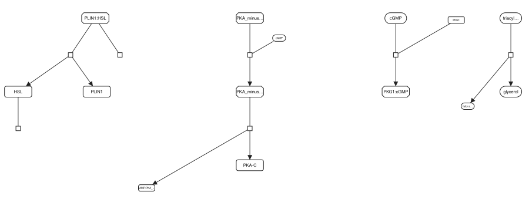
rules-claude (pathway-specific) 1.394 s · 2 of 23 nodes not placed · sbml_pathway_layout 787d47a SVG positions (JSON) RuntimeError: ValueError: min() iterable argument is empty
ecmapper-brenda (pathway-specific) 7.845 s · ecmapper a711a72 RuntimeError: ValueError: min() iterable argument is empty
ecmapper-brenda-packed (pathway-specific) 5.874 s · ecmapper a711a72 metacarto (pathway-specific) 2.699 s · 24 drawn nodes (clones) · MetaCarto v2.0.0 SVG positions (JSON) sbml2map (pathway-specific) 2.95 s · sbml2map ca3873a SVG positions (JSON) sbmlnetwork (SBML-specific) 0.76 s · sbmlnetwork 0.5.12 SVG positions (JSON) cytoscape-fcose-compartments (compartments as groups) 0.513 s · cytoscape 3.33.1, cytoscape-fcose 2.2.0 SVG positions (JSON) cytoscape-cose-bilkent-compartments (compartments as groups) 0.504 s · cytoscape 3.33.1, cytoscape-cose-bilkent 4.1.0 SVG positions (JSON) reagraph-force-compartments (compartments as groups) 1.06 s · reagraph 4.32.0 SVG positions (JSON) cytoscape-fcose (compound-capable force-directed) 0.655 s · cytoscape 3.33.1, cytoscape-fcose 2.2.0 SVG positions (JSON) cytoscape-cose-bilkent (compound-capable force-directed) 0.546 s · cytoscape 3.33.1, cytoscape-cose-bilkent 4.1.0 SVG positions (JSON) cytoscape-elk-layered (layered) 0.817 s · cytoscape 3.33.1, cytoscape-elk 2.3.0, elkjs 0.9.3 SVG positions (JSON) graphviz-dot (layered) 0.045 s · pygraphviz 2.0.4, Graphviz 14.1.5 SVG positions (JSON) cytoscape-dagre (layered) 0.608 s · cytoscape 3.33.1, cytoscape-dagre 2.5.0 SVG positions (JSON) cytoscape-klay (layered) 0.65 s · cytoscape 3.33.1, cytoscape-klay 3.1.4 SVG positions (JSON) igraph-sugiyama (layered) 0.024 s · igraph 1.0.0 SVG positions (JSON) graphviz-neato (stress) 0.052 s · pygraphviz 2.0.4, Graphviz 14.1.5 SVG positions (JSON) cytoscape-elk-stress (stress) 0.912 s · cytoscape 3.33.1, cytoscape-elk 2.3.0, elkjs 0.9.3 SVG positions (JSON) cytoscape-cola (stress, with constraints) 0.6 s · cytoscape 3.33.1, cytoscape-cola 2.5.1 SVG positions (JSON) networkx-kamada_kawai (stress) 0.498 s · networkx 3.7 SVG positions (JSON) igraph-kk (stress) 0.023 s · igraph 1.0.0 SVG positions (JSON) graphviz-sfdp (force-directed) 0.059 s · pygraphviz 2.0.4, Graphviz 14.1.5 SVG positions (JSON) graphviz-fdp (force-directed) 0.061 s · pygraphviz 2.0.4, Graphviz 14.1.5 SVG positions (JSON) igraph-fr (force-directed) 0.024 s · igraph 1.0.0 SVG positions (JSON) networkx-spring (force-directed) 0.03 s · networkx 3.7 SVG positions (JSON) cytoscape-cose (force-directed) 0.579 s · cytoscape 3.33.1 SVG positions (JSON) cytoscape-elk-force (force-directed) 0.919 s · cytoscape 3.33.1, cytoscape-elk 2.3.0, elkjs 0.9.3 SVG positions (JSON) graphology-forceatlas2 (force-directed) 0.992 s · graphology 0.26.0, graphology-layout-forceatlas2 0.10.1 SVG positions (JSON) graphology-forceatlas2-noverlap (force-directed) 1.062 s · graphology 0.26.0, graphology-layout-forceatlas2 0.10.1, graphology-layout-noverlap 0.4.2 SVG positions (JSON) reagraph-force (force-directed) 1.011 s · reagraph 4.32.0 SVG positions (JSON) igraph-graphopt (force-directed) 0.026 s · igraph 1.0.0 SVG positions (JSON) igraph-drl (for large graphs) 0.981 s · igraph 1.0.0 SVG positions (JSON) igraph-lgl (for large graphs) 0.024 s · igraph 1.0.0 SVG positions (JSON) graphviz-twopi (radial) 0.05 s · pygraphviz 2.0.4, Graphviz 14.1.5 SVG positions (JSON) graphviz-circo (circular) 0.046 s · pygraphviz 2.0.4, Graphviz 14.1.5 SVG positions (JSON) cytoscape-elk-mrtree (tree) 0.829 s · cytoscape 3.33.1, cytoscape-elk 2.3.0, elkjs 0.9.3 SVG positions (JSON) igraph-mds (baseline) 0.021 s · igraph 1.0.0 SVG positions (JSON) networkx-spectral (baseline) 0.174 s · networkx 3.7 SVG positions (JSON)
Scores (click a column to sort; best values bold; hover a header for what it measures) F018-estrogen
Reference : F018-estrogen.sbgn 0.0 s SVG positions (JSON)
RuntimeError: 15 reactions, 0/42 formulas, 4 cofactors, 1 drawing(s)
rules-claude (pathway-specific) 1.499 s · sbml_pathway_layout 787d47a SVG positions (JSON) RuntimeError: ValueError: min() iterable argument is empty
ecmapper-brenda (pathway-specific) 7.07 s · ecmapper a711a72 RuntimeError: ValueError: min() iterable argument is empty
ecmapper-brenda-packed (pathway-specific) 5.294 s · ecmapper a711a72 metacarto (pathway-specific) 3.878 s · 2 of 48 nodes not placed; 51 drawn nodes (clones) · MetaCarto v2.0.0 SVG positions (JSON) sbml2map (pathway-specific) 3.975 s · 2 of 48 nodes not placed · sbml2map ca3873a SVG positions (JSON) sbmlnetwork (SBML-specific) 1.03 s · sbmlnetwork 0.5.12 SVG positions (JSON) cytoscape-fcose-compartments (compartments as groups) 0.528 s · cytoscape 3.33.1, cytoscape-fcose 2.2.0 SVG positions (JSON) cytoscape-cose-bilkent-compartments (compartments as groups) 0.494 s · cytoscape 3.33.1, cytoscape-cose-bilkent 4.1.0 SVG positions (JSON) reagraph-force-compartments (compartments as groups) 1.112 s · reagraph 4.32.0 SVG positions (JSON) cytoscape-fcose (compound-capable force-directed) 0.597 s · cytoscape 3.33.1, cytoscape-fcose 2.2.0 SVG positions (JSON) cytoscape-cose-bilkent (compound-capable force-directed) 0.609 s · cytoscape 3.33.1, cytoscape-cose-bilkent 4.1.0 SVG positions (JSON) cytoscape-elk-layered (layered) 0.901 s · cytoscape 3.33.1, cytoscape-elk 2.3.0, elkjs 0.9.3 SVG positions (JSON) graphviz-dot (layered) 0.055 s · pygraphviz 2.0.4, Graphviz 14.1.5 SVG positions (JSON) cytoscape-dagre (layered) 0.625 s · cytoscape 3.33.1, cytoscape-dagre 2.5.0 SVG positions (JSON) cytoscape-klay (layered) 0.645 s · cytoscape 3.33.1, cytoscape-klay 3.1.4 SVG positions (JSON) igraph-sugiyama (layered) 0.026 s · igraph 1.0.0 SVG positions (JSON) graphviz-neato (stress) 0.071 s · pygraphviz 2.0.4, Graphviz 14.1.5 SVG positions (JSON) cytoscape-elk-stress (stress) 1.66 s · cytoscape 3.33.1, cytoscape-elk 2.3.0, elkjs 0.9.3 SVG positions (JSON) cytoscape-cola (stress, with constraints) 3.121 s · cytoscape 3.33.1, cytoscape-cola 2.5.1 SVG positions (JSON) networkx-kamada_kawai (stress) 0.905 s · networkx 3.7 SVG positions (JSON) igraph-kk (stress) 0.025 s · igraph 1.0.0 SVG positions (JSON) graphviz-sfdp (force-directed) 0.065 s · pygraphviz 2.0.4, Graphviz 14.1.5 SVG positions (JSON) graphviz-fdp (force-directed) 0.074 s · pygraphviz 2.0.4, Graphviz 14.1.5 SVG positions (JSON) igraph-fr (force-directed) 0.031 s · igraph 1.0.0 SVG positions (JSON) networkx-spring (force-directed) 0.04 s · networkx 3.7 SVG positions (JSON) cytoscape-cose (force-directed) 0.694 s · cytoscape 3.33.1 SVG positions (JSON) cytoscape-elk-force (force-directed) 1.596 s · cytoscape 3.33.1, cytoscape-elk 2.3.0, elkjs 0.9.3 SVG positions (JSON) graphology-forceatlas2 (force-directed) 0.973 s · graphology 0.26.0, graphology-layout-forceatlas2 0.10.1 SVG positions (JSON) graphology-forceatlas2-noverlap (force-directed) 1.062 s · graphology 0.26.0, graphology-layout-forceatlas2 0.10.1, graphology-layout-noverlap 0.4.2 SVG positions (JSON) reagraph-force (force-directed) 1.067 s · reagraph 4.32.0 SVG positions (JSON) igraph-graphopt (force-directed) 0.033 s · igraph 1.0.0 SVG positions (JSON) igraph-drl (for large graphs) 0.958 s · igraph 1.0.0 SVG positions (JSON) igraph-lgl (for large graphs) 0.041 s · igraph 1.0.0 SVG positions (JSON) graphviz-twopi (radial) 0.043 s · pygraphviz 2.0.4, Graphviz 14.1.5 SVG positions (JSON) graphviz-circo (circular) 0.054 s · pygraphviz 2.0.4, Graphviz 14.1.5 SVG positions (JSON) cytoscape-elk-mrtree (tree) 0.785 s · cytoscape 3.33.1, cytoscape-elk 2.3.0, elkjs 0.9.3 SVG positions (JSON) igraph-mds (baseline) 0.024 s · igraph 1.0.0 SVG positions (JSON) networkx-spectral (baseline) 0.03 s · networkx 3.7 SVG positions (JSON)
Scores (click a column to sort; best values bold; hover a header for what it measures) F022-bcaa
Reference : F022-bcaa.sbgn 0.0 s SVG positions (JSON)
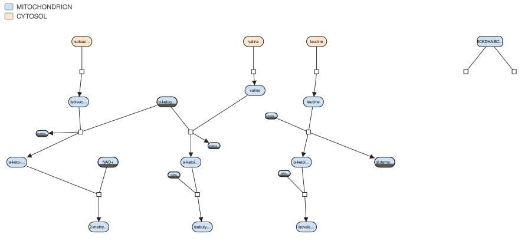
rules-claude (pathway-specific) 2.195 s · 8 of 35 nodes not placed; 32 drawn nodes (clones) · sbml_pathway_layout 787d47a SVG positions (JSON) RuntimeError: ValueError: min() iterable argument is empty
ecmapper-brenda (pathway-specific) 5.388 s · ecmapper a711a72 RuntimeError: ValueError: min() iterable argument is empty
ecmapper-brenda-packed (pathway-specific) 5.232 s · ecmapper a711a72 metacarto (pathway-specific) 4.856 s · 4 of 35 nodes not placed; 43 drawn nodes (clones) · MetaCarto v2.0.0 SVG positions (JSON) sbml2map (pathway-specific) 3.301 s · 4 of 35 nodes not placed · sbml2map ca3873a SVG positions (JSON) sbmlnetwork (SBML-specific) 0.86 s · 37 drawn nodes (clones) · sbmlnetwork 0.5.12 SVG positions (JSON) cytoscape-fcose-compartments (compartments as groups) 0.523 s · cytoscape 3.33.1, cytoscape-fcose 2.2.0 SVG positions (JSON) cytoscape-cose-bilkent-compartments (compartments as groups) 0.592 s · cytoscape 3.33.1, cytoscape-cose-bilkent 4.1.0 SVG positions (JSON) reagraph-force-compartments (compartments as groups) 1.155 s · reagraph 4.32.0 SVG positions (JSON) cytoscape-fcose (compound-capable force-directed) 1.017 s · cytoscape 3.33.1, cytoscape-fcose 2.2.0 SVG positions (JSON) cytoscape-cose-bilkent (compound-capable force-directed) 1.174 s · cytoscape 3.33.1, cytoscape-cose-bilkent 4.1.0 SVG positions (JSON) cytoscape-elk-layered (layered) 1.629 s · cytoscape 3.33.1, cytoscape-elk 2.3.0, elkjs 0.9.3 SVG positions (JSON) graphviz-dot (layered) 0.089 s · pygraphviz 2.0.4, Graphviz 14.1.5 SVG positions (JSON) cytoscape-dagre (layered) 1.055 s · cytoscape 3.33.1, cytoscape-dagre 2.5.0 SVG positions (JSON) cytoscape-klay (layered) 1.121 s · cytoscape 3.33.1, cytoscape-klay 3.1.4 SVG positions (JSON) igraph-sugiyama (layered) 0.047 s · igraph 1.0.0 SVG positions (JSON) graphviz-neato (stress) 0.095 s · pygraphviz 2.0.4, Graphviz 14.1.5 SVG positions (JSON) cytoscape-elk-stress (stress) 1.918 s · cytoscape 3.33.1, cytoscape-elk 2.3.0, elkjs 0.9.3 SVG positions (JSON) cytoscape-cola (stress, with constraints) 2.311 s · cytoscape 3.33.1, cytoscape-cola 2.5.1 SVG positions (JSON) networkx-kamada_kawai (stress) 1.759 s · networkx 3.7 SVG positions (JSON) igraph-kk (stress) 0.039 s · igraph 1.0.0 SVG positions (JSON) graphviz-sfdp (force-directed) 0.093 s · pygraphviz 2.0.4, Graphviz 14.1.5 SVG positions (JSON) graphviz-fdp (force-directed) 0.102 s · pygraphviz 2.0.4, Graphviz 14.1.5 SVG positions (JSON) igraph-fr (force-directed) 0.042 s · igraph 1.0.0 SVG positions (JSON) networkx-spring (force-directed) 0.08 s · networkx 3.7 SVG positions (JSON) cytoscape-cose (force-directed) 1.037 s · cytoscape 3.33.1 SVG positions (JSON) cytoscape-elk-force (force-directed) 1.818 s · cytoscape 3.33.1, cytoscape-elk 2.3.0, elkjs 0.9.3 SVG positions (JSON) graphology-forceatlas2 (force-directed) 0.992 s · graphology 0.26.0, graphology-layout-forceatlas2 0.10.1 SVG positions (JSON) graphology-forceatlas2-noverlap (force-directed) 1.089 s · graphology 0.26.0, graphology-layout-forceatlas2 0.10.1, graphology-layout-noverlap 0.4.2 SVG positions (JSON) reagraph-force (force-directed) 1.045 s · reagraph 4.32.0 SVG positions (JSON) igraph-graphopt (force-directed) 0.043 s · igraph 1.0.0 SVG positions (JSON) igraph-drl (for large graphs) 1.605 s · igraph 1.0.0 SVG positions (JSON) igraph-lgl (for large graphs) 0.06 s · igraph 1.0.0 SVG positions (JSON) graphviz-twopi (radial) 0.086 s · pygraphviz 2.0.4, Graphviz 14.1.5 SVG positions (JSON) graphviz-circo (circular) 0.189 s · pygraphviz 2.0.4, Graphviz 14.1.5 SVG positions (JSON) cytoscape-elk-mrtree (tree) 1.423 s · cytoscape 3.33.1, cytoscape-elk 2.3.0, elkjs 0.9.3 SVG positions (JSON) igraph-mds (baseline) 0.044 s · igraph 1.0.0 SVG positions (JSON) networkx-spectral (baseline) 0.044 s · networkx 3.7 SVG positions (JSON)
Scores (click a column to sort; best values bold; hover a header for what it measures) F023-pdh
Reference : F023-pdh.sbgn 0.0 s SVG positions (JSON)
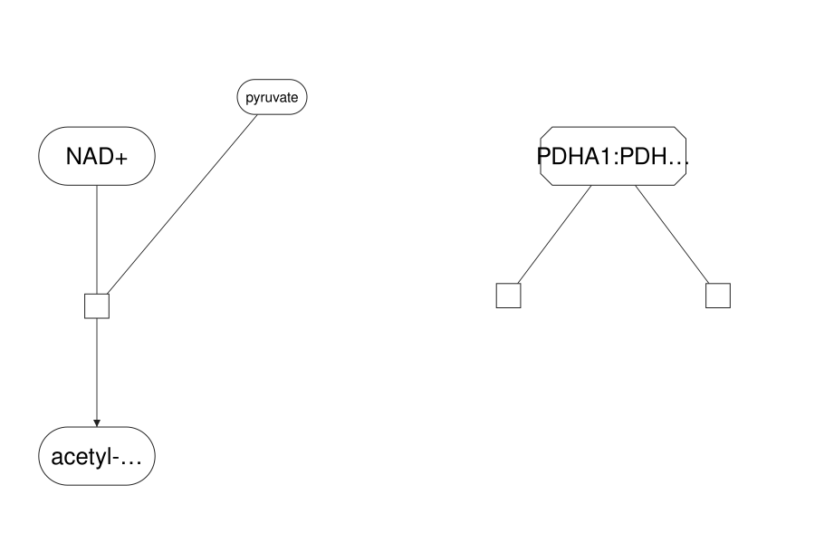
rules-claude (pathway-specific) 1.324 s · 8 of 15 nodes not placed · sbml_pathway_layout 787d47a SVG positions (JSON) RuntimeError: ValueError: min() iterable argument is empty
ecmapper-brenda (pathway-specific) 7.473 s · ecmapper a711a72 RuntimeError: ValueError: min() iterable argument is empty
ecmapper-brenda-packed (pathway-specific) 5.238 s · ecmapper a711a72 metacarto (pathway-specific) 4.266 s · 4 of 15 nodes not placed · MetaCarto v2.0.0 SVG positions (JSON) sbml2map (pathway-specific) 2.306 s · 4 of 15 nodes not placed · sbml2map ca3873a SVG positions (JSON) sbmlnetwork (SBML-specific) 0.76 s · sbmlnetwork 0.5.12 SVG positions (JSON) cytoscape-fcose-compartments (compartments as groups) 0.873 s · cytoscape 3.33.1, cytoscape-fcose 2.2.0 SVG positions (JSON) cytoscape-cose-bilkent-compartments (compartments as groups) 0.884 s · cytoscape 3.33.1, cytoscape-cose-bilkent 4.1.0 SVG positions (JSON) reagraph-force-compartments (compartments as groups) 0.982 s · reagraph 4.32.0 SVG positions (JSON) cytoscape-fcose (compound-capable force-directed) 0.939 s · cytoscape 3.33.1, cytoscape-fcose 2.2.0 SVG positions (JSON) cytoscape-cose-bilkent (compound-capable force-directed) 0.896 s · cytoscape 3.33.1, cytoscape-cose-bilkent 4.1.0 SVG positions (JSON) cytoscape-elk-layered (layered) 1.374 s · cytoscape 3.33.1, cytoscape-elk 2.3.0, elkjs 0.9.3 SVG positions (JSON) graphviz-dot (layered) 0.081 s · pygraphviz 2.0.4, Graphviz 14.1.5 SVG positions (JSON) cytoscape-dagre (layered) 0.886 s · cytoscape 3.33.1, cytoscape-dagre 2.5.0 SVG positions (JSON) cytoscape-klay (layered) 1.004 s · cytoscape 3.33.1, cytoscape-klay 3.1.4 SVG positions (JSON) igraph-sugiyama (layered) 0.042 s · igraph 1.0.0 SVG positions (JSON) graphviz-neato (stress) 0.08 s · pygraphviz 2.0.4, Graphviz 14.1.5 SVG positions (JSON) cytoscape-elk-stress (stress) 1.355 s · cytoscape 3.33.1, cytoscape-elk 2.3.0, elkjs 0.9.3 SVG positions (JSON) cytoscape-cola (stress, with constraints) 3.45 s · cytoscape 3.33.1, cytoscape-cola 2.5.1 SVG positions (JSON) networkx-kamada_kawai (stress) 0.896 s · networkx 3.7 SVG positions (JSON) igraph-kk (stress) 0.032 s · igraph 1.0.0 SVG positions (JSON) graphviz-sfdp (force-directed) 0.08 s · pygraphviz 2.0.4, Graphviz 14.1.5 SVG positions (JSON) graphviz-fdp (force-directed) 0.089 s · pygraphviz 2.0.4, Graphviz 14.1.5 SVG positions (JSON) igraph-fr (force-directed) 0.037 s · igraph 1.0.0 SVG positions (JSON) networkx-spring (force-directed) 0.051 s · networkx 3.7 SVG positions (JSON) cytoscape-cose (force-directed) 0.839 s · cytoscape 3.33.1 SVG positions (JSON) cytoscape-elk-force (force-directed) 1.373 s · cytoscape 3.33.1, cytoscape-elk 2.3.0, elkjs 0.9.3 SVG positions (JSON) graphology-forceatlas2 (force-directed) 1.276 s · graphology 0.26.0, graphology-layout-forceatlas2 0.10.1 SVG positions (JSON) graphology-forceatlas2-noverlap (force-directed) 0.986 s · graphology 0.26.0, graphology-layout-forceatlas2 0.10.1, graphology-layout-noverlap 0.4.2 SVG positions (JSON) reagraph-force (force-directed) 1.04 s · reagraph 4.32.0 SVG positions (JSON) igraph-graphopt (force-directed) 0.04 s · igraph 1.0.0 SVG positions (JSON) igraph-drl (for large graphs) 1.458 s · igraph 1.0.0 SVG positions (JSON) igraph-lgl (for large graphs) 0.038 s · igraph 1.0.0 SVG positions (JSON) graphviz-twopi (radial) 0.067 s · pygraphviz 2.0.4, Graphviz 14.1.5 SVG positions (JSON) graphviz-circo (circular) 0.079 s · pygraphviz 2.0.4, Graphviz 14.1.5 SVG positions (JSON) cytoscape-elk-mrtree (tree) 1.22 s · cytoscape 3.33.1, cytoscape-elk 2.3.0, elkjs 0.9.3 SVG positions (JSON) igraph-mds (baseline) 0.037 s · igraph 1.0.0 SVG positions (JSON) networkx-spectral (baseline) 0.044 s · networkx 3.7 SVG positions (JSON)
Scores (click a column to sort; best values bold; hover a header for what it measures) F025-nnos
Reference : F025-nnos.sbgn 0.0 s SVG positions (JSON)
RuntimeError: 7 reactions, 0/22 formulas, 2 cofactors, 1 drawing(s)
rules-claude (pathway-specific) 1.692 s · sbml_pathway_layout 787d47a SVG positions (JSON) RuntimeError: ValueError: min() iterable argument is empty
ecmapper-brenda (pathway-specific) 5.269 s · ecmapper a711a72 RuntimeError: ValueError: min() iterable argument is empty
ecmapper-brenda-packed (pathway-specific) 7.823 s · ecmapper a711a72 metacarto (pathway-specific) 5.087 s · 3 of 25 nodes not placed; 24 drawn nodes (clones) · MetaCarto v2.0.0 SVG positions (JSON) sbml2map (pathway-specific) 2.588 s · 3 of 25 nodes not placed · sbml2map ca3873a SVG positions (JSON) sbmlnetwork (SBML-specific) 0.77 s · 26 drawn nodes (clones) · sbmlnetwork 0.5.12 SVG positions (JSON) cytoscape-fcose-compartments (compartments as groups) 0.487 s · cytoscape 3.33.1, cytoscape-fcose 2.2.0 SVG positions (JSON) cytoscape-cose-bilkent-compartments (compartments as groups) 0.473 s · cytoscape 3.33.1, cytoscape-cose-bilkent 4.1.0 SVG positions (JSON) reagraph-force-compartments (compartments as groups) 1.133 s · reagraph 4.32.0 SVG positions (JSON) cytoscape-fcose (compound-capable force-directed) 0.943 s · cytoscape 3.33.1, cytoscape-fcose 2.2.0 SVG positions (JSON) cytoscape-cose-bilkent (compound-capable force-directed) 0.814 s · cytoscape 3.33.1, cytoscape-cose-bilkent 4.1.0 SVG positions (JSON) cytoscape-elk-layered (layered) 1.598 s · cytoscape 3.33.1, cytoscape-elk 2.3.0, elkjs 0.9.3 SVG positions (JSON) graphviz-dot (layered) 0.084 s · pygraphviz 2.0.4, Graphviz 14.1.5 SVG positions (JSON) cytoscape-dagre (layered) 1.064 s · cytoscape 3.33.1, cytoscape-dagre 2.5.0 SVG positions (JSON) cytoscape-klay (layered) 1.253 s · cytoscape 3.33.1, cytoscape-klay 3.1.4 SVG positions (JSON) igraph-sugiyama (layered) 0.037 s · igraph 1.0.0 SVG positions (JSON) graphviz-neato (stress) 0.085 s · pygraphviz 2.0.4, Graphviz 14.1.5 SVG positions (JSON) cytoscape-elk-stress (stress) 1.558 s · cytoscape 3.33.1, cytoscape-elk 2.3.0, elkjs 0.9.3 SVG positions (JSON) cytoscape-cola (stress, with constraints) 4.452 s · cytoscape 3.33.1, cytoscape-cola 2.5.1 SVG positions (JSON) networkx-kamada_kawai (stress) 0.483 s · networkx 3.7 SVG positions (JSON) igraph-kk (stress) 0.035 s · igraph 1.0.0 SVG positions (JSON) graphviz-sfdp (force-directed) 0.122 s · pygraphviz 2.0.4, Graphviz 14.1.5 SVG positions (JSON) graphviz-fdp (force-directed) 0.087 s · pygraphviz 2.0.4, Graphviz 14.1.5 SVG positions (JSON) igraph-fr (force-directed) 0.034 s · igraph 1.0.0 SVG positions (JSON) networkx-spring (force-directed) 0.05 s · networkx 3.7 SVG positions (JSON) cytoscape-cose (force-directed) 0.856 s · cytoscape 3.33.1 SVG positions (JSON) cytoscape-elk-force (force-directed) 1.634 s · cytoscape 3.33.1, cytoscape-elk 2.3.0, elkjs 0.9.3 SVG positions (JSON) graphology-forceatlas2 (force-directed) 0.985 s · graphology 0.26.0, graphology-layout-forceatlas2 0.10.1 SVG positions (JSON) graphology-forceatlas2-noverlap (force-directed) 1.306 s · graphology 0.26.0, graphology-layout-forceatlas2 0.10.1, graphology-layout-noverlap 0.4.2 SVG positions (JSON) reagraph-force (force-directed) 1.134 s · reagraph 4.32.0 SVG positions (JSON) igraph-graphopt (force-directed) 0.041 s · igraph 1.0.0 SVG positions (JSON) igraph-drl (for large graphs) 1.353 s · igraph 1.0.0 SVG positions (JSON) igraph-lgl (for large graphs) 0.036 s · igraph 1.0.0 SVG positions (JSON) graphviz-twopi (radial) 0.076 s · pygraphviz 2.0.4, Graphviz 14.1.5 SVG positions (JSON) graphviz-circo (circular) 0.097 s · pygraphviz 2.0.4, Graphviz 14.1.5 SVG positions (JSON) cytoscape-elk-mrtree (tree) 1.344 s · cytoscape 3.33.1, cytoscape-elk 2.3.0, elkjs 0.9.3 SVG positions (JSON) igraph-mds (baseline) 0.037 s · igraph 1.0.0 SVG positions (JSON) networkx-spectral (baseline) 0.065 s · networkx 3.7 SVG positions (JSON)
Scores (click a column to sort; best values bold; hover a header for what it measures) F100-aspirin
Reference : F100-aspirin.sbgn 0.0 s SVG positions (JSON)
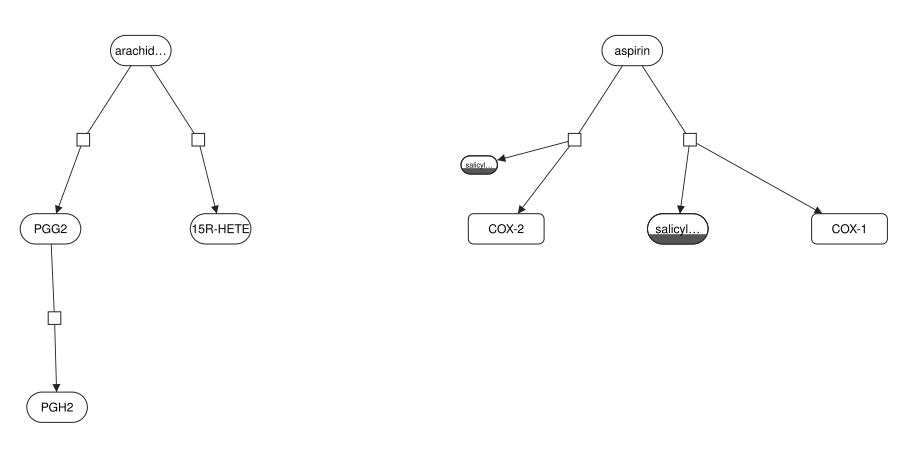
rules-claude (pathway-specific) 1.288 s · 2 of 15 nodes not placed; 14 drawn nodes (clones) · sbml_pathway_layout 787d47a SVG positions (JSON) RuntimeError: ValueError: min() iterable argument is empty
ecmapper-brenda (pathway-specific) 5.492 s · ecmapper a711a72 RuntimeError: ValueError: min() iterable argument is empty
ecmapper-brenda-packed (pathway-specific) 5.429 s · ecmapper a711a72 metacarto (pathway-specific) 4.214 s · 17 drawn nodes (clones) · MetaCarto v2.0.0 SVG positions (JSON) sbml2map (pathway-specific) 2.363 s · sbml2map ca3873a SVG positions (JSON) sbmlnetwork (SBML-specific) 0.75 s · sbmlnetwork 0.5.12 SVG positions (JSON) cytoscape-fcose-compartments (compartments as groups) 0.922 s · cytoscape 3.33.1, cytoscape-fcose 2.2.0 SVG positions (JSON) cytoscape-cose-bilkent-compartments (compartments as groups) 0.927 s · cytoscape 3.33.1, cytoscape-cose-bilkent 4.1.0 SVG positions (JSON) reagraph-force-compartments (compartments as groups) 0.969 s · reagraph 4.32.0 SVG positions (JSON) cytoscape-fcose (compound-capable force-directed) 1.065 s · cytoscape 3.33.1, cytoscape-fcose 2.2.0 SVG positions (JSON) cytoscape-cose-bilkent (compound-capable force-directed) 1.058 s · cytoscape 3.33.1, cytoscape-cose-bilkent 4.1.0 SVG positions (JSON) cytoscape-elk-layered (layered) 1.242 s · cytoscape 3.33.1, cytoscape-elk 2.3.0, elkjs 0.9.3 SVG positions (JSON) graphviz-dot (layered) 0.079 s · pygraphviz 2.0.4, Graphviz 14.1.5 SVG positions (JSON) cytoscape-dagre (layered) 0.806 s · cytoscape 3.33.1, cytoscape-dagre 2.5.0 SVG positions (JSON) cytoscape-klay (layered) 0.796 s · cytoscape 3.33.1, cytoscape-klay 3.1.4 SVG positions (JSON) igraph-sugiyama (layered) 0.04 s · igraph 1.0.0 SVG positions (JSON) graphviz-neato (stress) 0.077 s · pygraphviz 2.0.4, Graphviz 14.1.5 SVG positions (JSON) cytoscape-elk-stress (stress) 1.132 s · cytoscape 3.33.1, cytoscape-elk 2.3.0, elkjs 0.9.3 SVG positions (JSON) cytoscape-cola (stress, with constraints) 5.422 s · cytoscape 3.33.1, cytoscape-cola 2.5.1 SVG positions (JSON) networkx-kamada_kawai (stress) 0.601 s · networkx 3.7 SVG positions (JSON) igraph-kk (stress) 0.038 s · igraph 1.0.0 SVG positions (JSON) graphviz-sfdp (force-directed) 0.087 s · pygraphviz 2.0.4, Graphviz 14.1.5 SVG positions (JSON) graphviz-fdp (force-directed) 0.078 s · pygraphviz 2.0.4, Graphviz 14.1.5 SVG positions (JSON) igraph-fr (force-directed) 0.043 s · igraph 1.0.0 SVG positions (JSON) networkx-spring (force-directed) 0.052 s · networkx 3.7 SVG positions (JSON) cytoscape-cose (force-directed) 0.996 s · cytoscape 3.33.1 SVG positions (JSON) cytoscape-elk-force (force-directed) 1.159 s · cytoscape 3.33.1, cytoscape-elk 2.3.0, elkjs 0.9.3 SVG positions (JSON) graphology-forceatlas2 (force-directed) 1.062 s · graphology 0.26.0, graphology-layout-forceatlas2 0.10.1 SVG positions (JSON) graphology-forceatlas2-noverlap (force-directed) 1.056 s · graphology 0.26.0, graphology-layout-forceatlas2 0.10.1, graphology-layout-noverlap 0.4.2 SVG positions (JSON) reagraph-force (force-directed) 1.042 s · reagraph 4.32.0 SVG positions (JSON) igraph-graphopt (force-directed) 0.046 s · igraph 1.0.0 SVG positions (JSON) igraph-drl (for large graphs) 1.723 s · igraph 1.0.0 SVG positions (JSON) igraph-lgl (for large graphs) 0.047 s · igraph 1.0.0 SVG positions (JSON) graphviz-twopi (radial) 0.076 s · pygraphviz 2.0.4, Graphviz 14.1.5 SVG positions (JSON) graphviz-circo (circular) 0.095 s · pygraphviz 2.0.4, Graphviz 14.1.5 SVG positions (JSON) cytoscape-elk-mrtree (tree) 1.16 s · cytoscape 3.33.1, cytoscape-elk 2.3.0, elkjs 0.9.3 SVG positions (JSON) igraph-mds (baseline) 0.039 s · igraph 1.0.0 SVG positions (JSON) networkx-spectral (baseline) 0.044 s · networkx 3.7 SVG positions (JSON)
Scores (click a column to sort; best values bold; hover a header for what it measures) F002-eicosanoids
Reference : F002-eicosanoids.sbgn 0.0 s SVG positions (JSON)
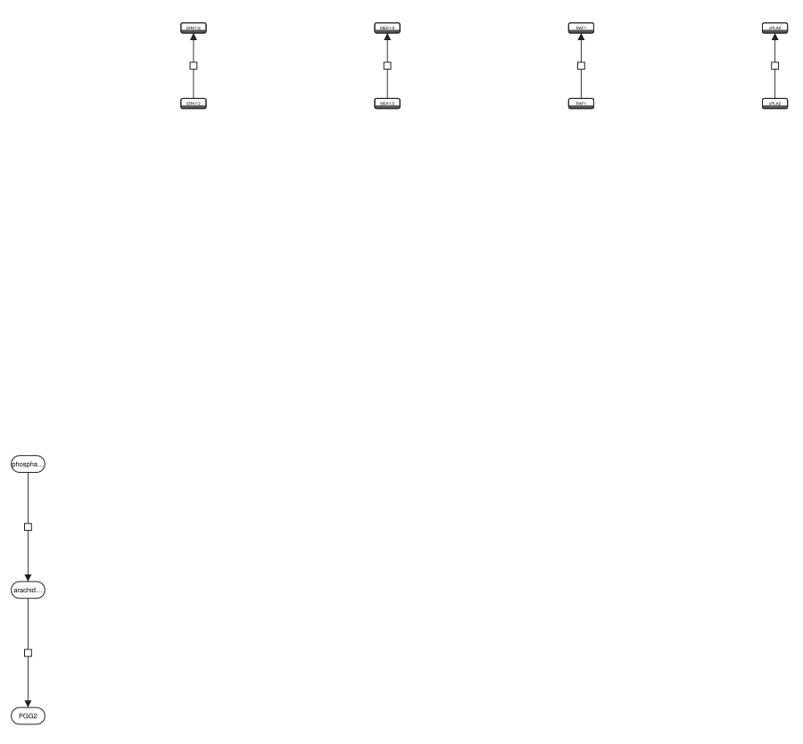
rules-claude (pathway-specific) 1.174 s · 5 of 18 nodes not placed; 17 drawn nodes (clones) · sbml_pathway_layout 787d47a SVG positions (JSON) RuntimeError: ValueError: min() iterable argument is empty
ecmapper-brenda (pathway-specific) 5.553 s · ecmapper a711a72 RuntimeError: ValueError: min() iterable argument is empty
ecmapper-brenda-packed (pathway-specific) 6.519 s · ecmapper a711a72 RuntimeError: Missing flux bounds on reactions set to default bounds.As best practise and to avoid confusion flux bounds should be set explicitly on all reactions.
metacarto (pathway-specific) 5.228 s · MetaCarto v2.0.0 SVG positions (JSON) RuntimeError: sbml2map.py: error: Variable stoichiometry is unsupported: re_n1
sbml2map (pathway-specific) 0.659 s · sbml2map ca3873a sbmlnetwork (SBML-specific) 0.75 s · sbmlnetwork 0.5.12 SVG positions (JSON) cytoscape-fcose-compartments (compartments as groups) 0.507 s · cytoscape 3.33.1, cytoscape-fcose 2.2.0 SVG positions (JSON) cytoscape-cose-bilkent-compartments (compartments as groups) 0.507 s · cytoscape 3.33.1, cytoscape-cose-bilkent 4.1.0 SVG positions (JSON) reagraph-force-compartments (compartments as groups) 1.002 s · reagraph 4.32.0 SVG positions (JSON) cytoscape-fcose (compound-capable force-directed) 0.577 s · cytoscape 3.33.1, cytoscape-fcose 2.2.0 SVG positions (JSON) cytoscape-cose-bilkent (compound-capable force-directed) 0.507 s · cytoscape 3.33.1, cytoscape-cose-bilkent 4.1.0 SVG positions (JSON) cytoscape-elk-layered (layered) 0.8 s · cytoscape 3.33.1, cytoscape-elk 2.3.0, elkjs 0.9.3 SVG positions (JSON) graphviz-dot (layered) 0.046 s · pygraphviz 2.0.4, Graphviz 14.1.5 SVG positions (JSON) cytoscape-dagre (layered) 0.522 s · cytoscape 3.33.1, cytoscape-dagre 2.5.0 SVG positions (JSON) cytoscape-klay (layered) 0.547 s · cytoscape 3.33.1, cytoscape-klay 3.1.4 SVG positions (JSON) igraph-sugiyama (layered) 0.019 s · igraph 1.0.0 SVG positions (JSON) graphviz-neato (stress) 0.056 s · pygraphviz 2.0.4, Graphviz 14.1.5 SVG positions (JSON) cytoscape-elk-stress (stress) 0.881 s · cytoscape 3.33.1, cytoscape-elk 2.3.0, elkjs 0.9.3 SVG positions (JSON) cytoscape-cola (stress, with constraints) 0.68 s · cytoscape 3.33.1, cytoscape-cola 2.5.1 SVG positions (JSON) networkx-kamada_kawai (stress) 0.496 s · networkx 3.7 SVG positions (JSON) igraph-kk (stress) 0.017 s · igraph 1.0.0 SVG positions (JSON) graphviz-sfdp (force-directed) 0.048 s · pygraphviz 2.0.4, Graphviz 14.1.5 SVG positions (JSON) graphviz-fdp (force-directed) 0.057 s · pygraphviz 2.0.4, Graphviz 14.1.5 SVG positions (JSON) igraph-fr (force-directed) 0.02 s · igraph 1.0.0 SVG positions (JSON) networkx-spring (force-directed) 0.031 s · networkx 3.7 SVG positions (JSON) cytoscape-cose (force-directed) 0.543 s · cytoscape 3.33.1 SVG positions (JSON) cytoscape-elk-force (force-directed) 0.849 s · cytoscape 3.33.1, cytoscape-elk 2.3.0, elkjs 0.9.3 SVG positions (JSON) graphology-forceatlas2 (force-directed) 1.076 s · graphology 0.26.0, graphology-layout-forceatlas2 0.10.1 SVG positions (JSON) graphology-forceatlas2-noverlap (force-directed) 1.014 s · graphology 0.26.0, graphology-layout-forceatlas2 0.10.1, graphology-layout-noverlap 0.4.2 SVG positions (JSON) reagraph-force (force-directed) 1.053 s · reagraph 4.32.0 SVG positions (JSON) igraph-graphopt (force-directed) 0.018 s · igraph 1.0.0 SVG positions (JSON) igraph-drl (for large graphs) 0.979 s · igraph 1.0.0 SVG positions (JSON) igraph-lgl (for large graphs) 0.021 s · igraph 1.0.0 SVG positions (JSON) graphviz-twopi (radial) 0.038 s · pygraphviz 2.0.4, Graphviz 14.1.5 SVG positions (JSON) graphviz-circo (circular) 0.043 s · pygraphviz 2.0.4, Graphviz 14.1.5 SVG positions (JSON) cytoscape-elk-mrtree (tree) 0.752 s · cytoscape 3.33.1, cytoscape-elk 2.3.0, elkjs 0.9.3 SVG positions (JSON) igraph-mds (baseline) 0.017 s · igraph 1.0.0 SVG positions (JSON) networkx-spectral (baseline) 0.027 s · networkx 3.7 SVG positions (JSON)
Scores (click a column to sort; best values bold; hover a header for what it measures) F019-glutaminase
Reference : F019-glutaminase.sbgn 0.0 s · 2 of 18 nodes not placed SVG positions (JSON)
RuntimeError: AttributeError: 'list' object has no attribute 'flags'
rules-claude (pathway-specific) 0.781 s · sbml_pathway_layout 787d47a ecmapper-brenda (pathway-specific) 5.678 s · 13 of 18 nodes not placed; 6 drawn nodes (clones) · ecmapper a711a72 SVG positions (JSON) ecmapper-brenda-packed (pathway-specific) 8.043 s · 13 of 18 nodes not placed; 6 drawn nodes (clones) · ecmapper a711a72 SVG positions (JSON) RuntimeError: Missing flux bounds on reactions set to default bounds.As best practise and to avoid confusion flux bounds should be set explicitly on all reactions.
metacarto (pathway-specific) 7.1 s · MetaCarto v2.0.0 SVG positions (JSON) RuntimeError: sbml2map.py: error: Variable stoichiometry is unsupported: re_n14
sbml2map (pathway-specific) 0.642 s · sbml2map ca3873a sbmlnetwork (SBML-specific) 0.72 s · sbmlnetwork 0.5.12 SVG positions (JSON) cytoscape-fcose-compartments (compartments as groups) 0.489 s · cytoscape 3.33.1, cytoscape-fcose 2.2.0 SVG positions (JSON) cytoscape-cose-bilkent-compartments (compartments as groups) 0.547 s · cytoscape 3.33.1, cytoscape-cose-bilkent 4.1.0 SVG positions (JSON) reagraph-force-compartments (compartments as groups) 1.002 s · reagraph 4.32.0 SVG positions (JSON) cytoscape-fcose (compound-capable force-directed) 0.918 s · cytoscape 3.33.1, cytoscape-fcose 2.2.0 SVG positions (JSON) cytoscape-cose-bilkent (compound-capable force-directed) 0.501 s · cytoscape 3.33.1, cytoscape-cose-bilkent 4.1.0 SVG positions (JSON) cytoscape-elk-layered (layered) 0.776 s · cytoscape 3.33.1, cytoscape-elk 2.3.0, elkjs 0.9.3 SVG positions (JSON) graphviz-dot (layered) 0.04 s · pygraphviz 2.0.4, Graphviz 14.1.5 SVG positions (JSON) cytoscape-dagre (layered) 0.583 s · cytoscape 3.33.1, cytoscape-dagre 2.5.0 SVG positions (JSON) cytoscape-klay (layered) 0.542 s · cytoscape 3.33.1, cytoscape-klay 3.1.4 SVG positions (JSON) igraph-sugiyama (layered) 0.017 s · igraph 1.0.0 SVG positions (JSON) graphviz-neato (stress) 0.04 s · pygraphviz 2.0.4, Graphviz 14.1.5 SVG positions (JSON) cytoscape-elk-stress (stress) 0.842 s · cytoscape 3.33.1, cytoscape-elk 2.3.0, elkjs 0.9.3 SVG positions (JSON) cytoscape-cola (stress, with constraints) 0.582 s · cytoscape 3.33.1, cytoscape-cola 2.5.1 SVG positions (JSON) networkx-kamada_kawai (stress) 0.178 s · networkx 3.7 SVG positions (JSON) igraph-kk (stress) 0.016 s · igraph 1.0.0 SVG positions (JSON) graphviz-sfdp (force-directed) 0.043 s · pygraphviz 2.0.4, Graphviz 14.1.5 SVG positions (JSON) graphviz-fdp (force-directed) 0.047 s · pygraphviz 2.0.4, Graphviz 14.1.5 SVG positions (JSON) igraph-fr (force-directed) 0.022 s · igraph 1.0.0 SVG positions (JSON) networkx-spring (force-directed) 0.025 s · networkx 3.7 SVG positions (JSON) cytoscape-cose (force-directed) 0.511 s · cytoscape 3.33.1 SVG positions (JSON) cytoscape-elk-force (force-directed) 0.914 s · cytoscape 3.33.1, cytoscape-elk 2.3.0, elkjs 0.9.3 SVG positions (JSON) graphology-forceatlas2 (force-directed) 1.014 s · graphology 0.26.0, graphology-layout-forceatlas2 0.10.1 SVG positions (JSON) graphology-forceatlas2-noverlap (force-directed) 1.017 s · graphology 0.26.0, graphology-layout-forceatlas2 0.10.1, graphology-layout-noverlap 0.4.2 SVG positions (JSON) reagraph-force (force-directed) 1.035 s · reagraph 4.32.0 SVG positions (JSON) igraph-graphopt (force-directed) 0.017 s · igraph 1.0.0 SVG positions (JSON) igraph-drl (for large graphs) 1.133 s · igraph 1.0.0 SVG positions (JSON) igraph-lgl (for large graphs) 0.018 s · igraph 1.0.0 SVG positions (JSON) graphviz-twopi (radial) 0.04 s · pygraphviz 2.0.4, Graphviz 14.1.5 SVG positions (JSON) graphviz-circo (circular) 0.043 s · pygraphviz 2.0.4, Graphviz 14.1.5 SVG positions (JSON) cytoscape-elk-mrtree (tree) 0.658 s · cytoscape 3.33.1, cytoscape-elk 2.3.0, elkjs 0.9.3 SVG positions (JSON) igraph-mds (baseline) 0.016 s · igraph 1.0.0 SVG positions (JSON) networkx-spectral (baseline) 0.02 s · networkx 3.7 SVG positions (JSON)
Scores (click a column to sort; best values bold; hover a header for what it measures) F020-pyrimidine
Reference : F020-pyrimidine.sbgn 0.0 s SVG positions (JSON)
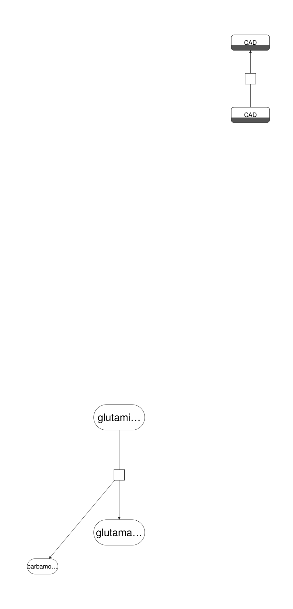
rules-claude (pathway-specific) 1.059 s · 6 of 12 nodes not placed; 7 drawn nodes (clones) · sbml_pathway_layout 787d47a SVG positions (JSON) RuntimeError: ValueError: min() iterable argument is empty
ecmapper-brenda (pathway-specific) 5.356 s · ecmapper a711a72 RuntimeError: ValueError: min() iterable argument is empty
ecmapper-brenda-packed (pathway-specific) 8.113 s · ecmapper a711a72 RuntimeError: Missing flux bounds on reactions set to default bounds.As best practise and to avoid confusion flux bounds should be set explicitly on all reactions.
metacarto (pathway-specific) 4.155 s · MetaCarto v2.0.0 SVG positions (JSON) RuntimeError: sbml2map.py: error: Variable stoichiometry is unsupported: re_n13
sbml2map (pathway-specific) 0.496 s · sbml2map ca3873a sbmlnetwork (SBML-specific) 0.77 s · sbmlnetwork 0.5.12 SVG positions (JSON) cytoscape-fcose-compartments (compartments as groups) 0.453 s · cytoscape 3.33.1, cytoscape-fcose 2.2.0 SVG positions (JSON) cytoscape-cose-bilkent-compartments (compartments as groups) 0.486 s · cytoscape 3.33.1, cytoscape-cose-bilkent 4.1.0 SVG positions (JSON) reagraph-force-compartments (compartments as groups) 1.025 s · reagraph 4.32.0 SVG positions (JSON) cytoscape-fcose (compound-capable force-directed) 0.614 s · cytoscape 3.33.1, cytoscape-fcose 2.2.0 SVG positions (JSON) cytoscape-cose-bilkent (compound-capable force-directed) 0.527 s · cytoscape 3.33.1, cytoscape-cose-bilkent 4.1.0 SVG positions (JSON) cytoscape-elk-layered (layered) 0.731 s · cytoscape 3.33.1, cytoscape-elk 2.3.0, elkjs 0.9.3 SVG positions (JSON) graphviz-dot (layered) 0.108 s · pygraphviz 2.0.4, Graphviz 14.1.5 SVG positions (JSON) cytoscape-dagre (layered) 0.52 s · cytoscape 3.33.1, cytoscape-dagre 2.5.0 SVG positions (JSON) cytoscape-klay (layered) 0.535 s · cytoscape 3.33.1, cytoscape-klay 3.1.4 SVG positions (JSON) igraph-sugiyama (layered) 0.018 s · igraph 1.0.0 SVG positions (JSON) graphviz-neato (stress) 0.043 s · pygraphviz 2.0.4, Graphviz 14.1.5 SVG positions (JSON) cytoscape-elk-stress (stress) 0.912 s · cytoscape 3.33.1, cytoscape-elk 2.3.0, elkjs 0.9.3 SVG positions (JSON) cytoscape-cola (stress, with constraints) 0.55 s · cytoscape 3.33.1, cytoscape-cola 2.5.1 SVG positions (JSON) networkx-kamada_kawai (stress) 0.448 s · networkx 3.7 SVG positions (JSON) igraph-kk (stress) 0.022 s · igraph 1.0.0 SVG positions (JSON) graphviz-sfdp (force-directed) 0.041 s · pygraphviz 2.0.4, Graphviz 14.1.5 SVG positions (JSON) graphviz-fdp (force-directed) 0.049 s · pygraphviz 2.0.4, Graphviz 14.1.5 SVG positions (JSON) igraph-fr (force-directed) 0.018 s · igraph 1.0.0 SVG positions (JSON) networkx-spring (force-directed) 0.028 s · networkx 3.7 SVG positions (JSON) cytoscape-cose (force-directed) 0.473 s · cytoscape 3.33.1 SVG positions (JSON) cytoscape-elk-force (force-directed) 0.737 s · cytoscape 3.33.1, cytoscape-elk 2.3.0, elkjs 0.9.3 SVG positions (JSON) graphology-forceatlas2 (force-directed) 0.971 s · graphology 0.26.0, graphology-layout-forceatlas2 0.10.1 SVG positions (JSON) graphology-forceatlas2-noverlap (force-directed) 0.994 s · graphology 0.26.0, graphology-layout-forceatlas2 0.10.1, graphology-layout-noverlap 0.4.2 SVG positions (JSON) reagraph-force (force-directed) 1.043 s · reagraph 4.32.0 SVG positions (JSON) igraph-graphopt (force-directed) 0.016 s · igraph 1.0.0 SVG positions (JSON) igraph-drl (for large graphs) 0.862 s · igraph 1.0.0 SVG positions (JSON) igraph-lgl (for large graphs) 0.016 s · igraph 1.0.0 SVG positions (JSON) graphviz-twopi (radial) 0.043 s · pygraphviz 2.0.4, Graphviz 14.1.5 SVG positions (JSON) graphviz-circo (circular) 0.042 s · pygraphviz 2.0.4, Graphviz 14.1.5 SVG positions (JSON) cytoscape-elk-mrtree (tree) 0.733 s · cytoscape 3.33.1, cytoscape-elk 2.3.0, elkjs 0.9.3 SVG positions (JSON) igraph-mds (baseline) 0.02 s · igraph 1.0.0 SVG positions (JSON) networkx-spectral (baseline) 0.028 s · networkx 3.7 SVG positions (JSON)
Scores (click a column to sort; best values bold; hover a header for what it measures) F021-ureacycle
Reference : F021-ureacycle.sbgn 0.0 s SVG positions (JSON)
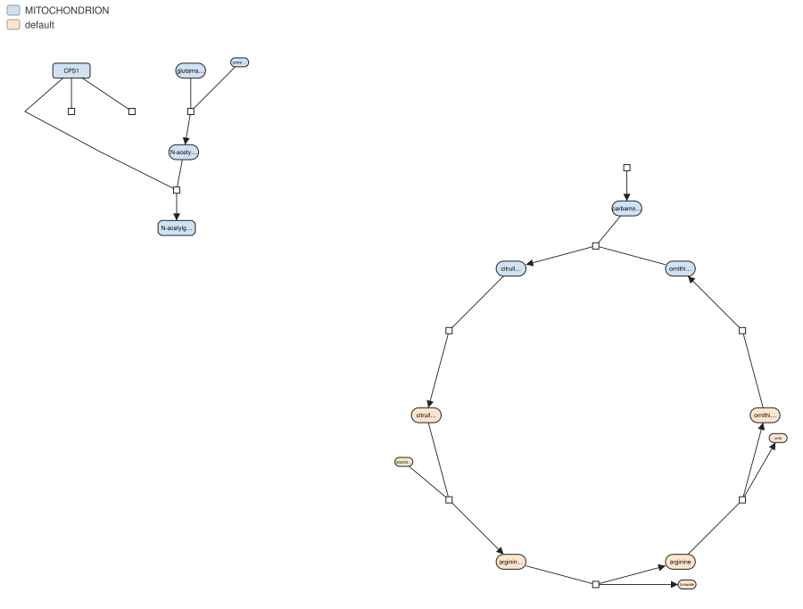
rules-claude (pathway-specific) 1.946 s · 19 of 45 nodes not placed · sbml_pathway_layout 787d47a SVG positions (JSON) ecmapper-brenda (pathway-specific) 7.595 s · 27 of 45 nodes not placed; 25 drawn nodes (clones) · ecmapper a711a72 SVG positions (JSON) ecmapper-brenda-packed (pathway-specific) 7.124 s · 27 of 45 nodes not placed; 25 drawn nodes (clones) · ecmapper a711a72 SVG positions (JSON) RuntimeError: Missing flux bounds on reactions set to default bounds.As best practise and to avoid confusion flux bounds should be set explicitly on all reactions.
metacarto (pathway-specific) 5.117 s · MetaCarto v2.0.0 SVG positions (JSON) RuntimeError: sbml2map.py: error: Variable stoichiometry is unsupported: re_n0_n12
sbml2map (pathway-specific) 0.548 s · sbml2map ca3873a sbmlnetwork (SBML-specific) 0.80 s · sbmlnetwork 0.5.12 SVG positions (JSON) cytoscape-fcose-compartments (compartments as groups) 0.484 s · cytoscape 3.33.1, cytoscape-fcose 2.2.0 SVG positions (JSON) cytoscape-cose-bilkent-compartments (compartments as groups) 0.501 s · cytoscape 3.33.1, cytoscape-cose-bilkent 4.1.0 SVG positions (JSON) reagraph-force-compartments (compartments as groups) 1.062 s · reagraph 4.32.0 SVG positions (JSON) cytoscape-fcose (compound-capable force-directed) 1.148 s · cytoscape 3.33.1, cytoscape-fcose 2.2.0 SVG positions (JSON) cytoscape-cose-bilkent (compound-capable force-directed) 0.585 s · cytoscape 3.33.1, cytoscape-cose-bilkent 4.1.0 SVG positions (JSON) cytoscape-elk-layered (layered) 0.894 s · cytoscape 3.33.1, cytoscape-elk 2.3.0, elkjs 0.9.3 SVG positions (JSON) graphviz-dot (layered) 0.066 s · pygraphviz 2.0.4, Graphviz 14.1.5 SVG positions (JSON) cytoscape-dagre (layered) 0.658 s · cytoscape 3.33.1, cytoscape-dagre 2.5.0 SVG positions (JSON) cytoscape-klay (layered) 0.64 s · cytoscape 3.33.1, cytoscape-klay 3.1.4 SVG positions (JSON) igraph-sugiyama (layered) 0.037 s · igraph 1.0.0 SVG positions (JSON) graphviz-neato (stress) 0.061 s · pygraphviz 2.0.4, Graphviz 14.1.5 SVG positions (JSON) cytoscape-elk-stress (stress) 1.563 s · cytoscape 3.33.1, cytoscape-elk 2.3.0, elkjs 0.9.3 SVG positions (JSON) cytoscape-cola (stress, with constraints) 1.427 s · cytoscape 3.33.1, cytoscape-cola 2.5.1 SVG positions (JSON) networkx-kamada_kawai (stress) 0.882 s · networkx 3.7 SVG positions (JSON) igraph-kk (stress) 0.022 s · igraph 1.0.0 SVG positions (JSON) graphviz-sfdp (force-directed) 0.053 s · pygraphviz 2.0.4, Graphviz 14.1.5 SVG positions (JSON) graphviz-fdp (force-directed) 0.078 s · pygraphviz 2.0.4, Graphviz 14.1.5 SVG positions (JSON) igraph-fr (force-directed) 0.026 s · igraph 1.0.0 SVG positions (JSON) networkx-spring (force-directed) 0.04 s · networkx 3.7 SVG positions (JSON) cytoscape-cose (force-directed) 0.615 s · cytoscape 3.33.1 SVG positions (JSON) cytoscape-elk-force (force-directed) 1.525 s · cytoscape 3.33.1, cytoscape-elk 2.3.0, elkjs 0.9.3 SVG positions (JSON) graphology-forceatlas2 (force-directed) 1.045 s · graphology 0.26.0, graphology-layout-forceatlas2 0.10.1 SVG positions (JSON) graphology-forceatlas2-noverlap (force-directed) 1.066 s · graphology 0.26.0, graphology-layout-forceatlas2 0.10.1, graphology-layout-noverlap 0.4.2 SVG positions (JSON) reagraph-force (force-directed) 1.059 s · reagraph 4.32.0 SVG positions (JSON) igraph-graphopt (force-directed) 0.032 s · igraph 1.0.0 SVG positions (JSON) igraph-drl (for large graphs) 0.862 s · igraph 1.0.0 SVG positions (JSON) igraph-lgl (for large graphs) 0.051 s · igraph 1.0.0 SVG positions (JSON) graphviz-twopi (radial) 0.048 s · pygraphviz 2.0.4, Graphviz 14.1.5 SVG positions (JSON) graphviz-circo (circular) 0.06 s · pygraphviz 2.0.4, Graphviz 14.1.5 SVG positions (JSON) cytoscape-elk-mrtree (tree) 0.889 s · cytoscape 3.33.1, cytoscape-elk 2.3.0, elkjs 0.9.3 SVG positions (JSON) igraph-mds (baseline) 0.031 s · igraph 1.0.0 SVG positions (JSON) networkx-spectral (baseline) 0.054 s · networkx 3.7 SVG positions (JSON)
Scores (click a column to sort; best values bold; hover a header for what it measures) Escher maps of the pathways of inborn metabolic disorders, drawn by hand on the Recon3D model for the VMH; each map is its reference layout, and its reactions and metabolites are the model. Only maps already online in the VMH (the others are unpublished).
branched-chain-amino-acids
Reference : branched-chain-amino-acids.escher.json 0.0 s · 100 drawn nodes (clones) SVG positions (JSON)
RuntimeError: 22 reactions, 0/39 formulas, 12 cofactors, 1 drawing(s)
rules-claude (pathway-specific) 4.371 s · sbml_pathway_layout 787d47a SVG positions (JSON) ecmapper-brenda (pathway-specific) 7.173 s · 13 of 61 nodes not placed; 69 drawn nodes (clones) · ecmapper a711a72 SVG positions (JSON) ecmapper-brenda-packed (pathway-specific) 7.333 s · 13 of 61 nodes not placed; 69 drawn nodes (clones) · ecmapper a711a72 SVG positions (JSON) metacarto (pathway-specific) 1.872 s · 2 of 61 nodes not placed; 89 drawn nodes (clones) · MetaCarto v2.0.0 SVG positions (JSON) sbml2map (pathway-specific) 3.944 s · 5 of 61 nodes not placed; 77 drawn nodes (clones) · sbml2map ca3873a SVG positions (JSON) sbmlnetwork (SBML-specific) 1.09 s · 67 drawn nodes (clones) · sbmlnetwork 0.5.12 SVG positions (JSON) cytoscape-fcose-compartments (compartments as groups) 0.412 s · cytoscape 3.33.1, cytoscape-fcose 2.2.0 SVG positions (JSON) cytoscape-cose-bilkent-compartments (compartments as groups) 0.543 s · cytoscape 3.33.1, cytoscape-cose-bilkent 4.1.0 SVG positions (JSON) reagraph-force-compartments (compartments as groups) 1.129 s · reagraph 4.32.0 SVG positions (JSON) cytoscape-fcose (compound-capable force-directed) 0.378 s · cytoscape 3.33.1, cytoscape-fcose 2.2.0 SVG positions (JSON) cytoscape-cose-bilkent (compound-capable force-directed) 0.52 s · cytoscape 3.33.1, cytoscape-cose-bilkent 4.1.0 SVG positions (JSON) cytoscape-elk-layered (layered) 0.752 s · cytoscape 3.33.1, cytoscape-elk 2.3.0, elkjs 0.9.3 SVG positions (JSON) graphviz-dot (layered) 0.047 s · pygraphviz 2.0.4, Graphviz 14.1.5 SVG positions (JSON) cytoscape-dagre (layered) 0.493 s · cytoscape 3.33.1, cytoscape-dagre 2.5.0 SVG positions (JSON) cytoscape-klay (layered) 0.528 s · cytoscape 3.33.1, cytoscape-klay 3.1.4 SVG positions (JSON) igraph-sugiyama (layered) 0.017 s · igraph 1.0.0 SVG positions (JSON) graphviz-neato (stress) 0.06 s · pygraphviz 2.0.4, Graphviz 14.1.5 SVG positions (JSON) cytoscape-elk-stress (stress) 1.25 s · cytoscape 3.33.1, cytoscape-elk 2.3.0, elkjs 0.9.3 SVG positions (JSON) cytoscape-cola (stress, with constraints) 10.135 s · cytoscape 3.33.1, cytoscape-cola 2.5.1 SVG positions (JSON) networkx-kamada_kawai (stress) 0.078 s · networkx 3.7 SVG positions (JSON) igraph-kk (stress) 0.016 s · igraph 1.0.0 SVG positions (JSON) graphviz-sfdp (force-directed) 0.044 s · pygraphviz 2.0.4, Graphviz 14.1.5 SVG positions (JSON) graphviz-fdp (force-directed) 0.054 s · pygraphviz 2.0.4, Graphviz 14.1.5 SVG positions (JSON) igraph-fr (force-directed) 0.018 s · igraph 1.0.0 SVG positions (JSON) networkx-spring (force-directed) 0.024 s · networkx 3.7 SVG positions (JSON) cytoscape-cose (force-directed) 0.417 s · cytoscape 3.33.1 SVG positions (JSON) cytoscape-elk-force (force-directed) 1.205 s · cytoscape 3.33.1, cytoscape-elk 2.3.0, elkjs 0.9.3 SVG positions (JSON) graphology-forceatlas2 (force-directed) 1.0 s · graphology 0.26.0, graphology-layout-forceatlas2 0.10.1 SVG positions (JSON) graphology-forceatlas2-noverlap (force-directed) 1.119 s · graphology 0.26.0, graphology-layout-forceatlas2 0.10.1, graphology-layout-noverlap 0.4.2 SVG positions (JSON) reagraph-force (force-directed) 1.073 s · reagraph 4.32.0 SVG positions (JSON) igraph-graphopt (force-directed) 0.025 s · igraph 1.0.0 SVG positions (JSON) igraph-drl (for large graphs) 0.601 s · igraph 1.0.0 SVG positions (JSON) igraph-lgl (for large graphs) 0.025 s · igraph 1.0.0 SVG positions (JSON) graphviz-twopi (radial) 0.03 s · pygraphviz 2.0.4, Graphviz 14.1.5 SVG positions (JSON) graphviz-circo (circular) 0.373 s · pygraphviz 2.0.4, Graphviz 14.1.5 SVG positions (JSON) cytoscape-elk-mrtree (tree) 0.537 s · cytoscape 3.33.1, cytoscape-elk 2.3.0, elkjs 0.9.3 SVG positions (JSON) igraph-mds (baseline) 0.013 s · igraph 1.0.0 SVG positions (JSON) networkx-spectral (baseline) 0.015 s · networkx 3.7 SVG positions (JSON)
Scores (click a column to sort; best values bold; hover a header for what it measures) glutamate-and-aspartate
Reference : glutamate-and-aspartate.escher.json 0.0 s · 53 drawn nodes (clones) SVG positions (JSON)
RuntimeError: 11 reactions, 0/30 formulas, 13 cofactors, 1 drawing(s)
rules-claude (pathway-specific) 54.128 s · sbml_pathway_layout 787d47a SVG positions (JSON) ecmapper-brenda (pathway-specific) 6.13 s · 16 of 41 nodes not placed; 35 drawn nodes (clones) · ecmapper a711a72 SVG positions (JSON) ecmapper-brenda-packed (pathway-specific) 6.815 s · 16 of 41 nodes not placed; 35 drawn nodes (clones) · ecmapper a711a72 SVG positions (JSON) metacarto (pathway-specific) 1.503 s · 4 of 41 nodes not placed; 41 drawn nodes (clones) · MetaCarto v2.0.0 SVG positions (JSON) sbml2map (pathway-specific) 2.762 s · 9 of 41 nodes not placed; 33 drawn nodes (clones) · sbml2map ca3873a SVG positions (JSON) sbmlnetwork (SBML-specific) 0.85 s · 43 drawn nodes (clones) · sbmlnetwork 0.5.12 SVG positions (JSON) cytoscape-fcose-compartments (compartments as groups) 0.399 s · cytoscape 3.33.1, cytoscape-fcose 2.2.0 SVG positions (JSON) cytoscape-cose-bilkent-compartments (compartments as groups) 0.389 s · cytoscape 3.33.1, cytoscape-cose-bilkent 4.1.0 SVG positions (JSON) reagraph-force-compartments (compartments as groups) 1.084 s · reagraph 4.32.0 SVG positions (JSON) cytoscape-fcose (compound-capable force-directed) 0.35 s · cytoscape 3.33.1, cytoscape-fcose 2.2.0 SVG positions (JSON) cytoscape-cose-bilkent (compound-capable force-directed) 0.381 s · cytoscape 3.33.1, cytoscape-cose-bilkent 4.1.0 SVG positions (JSON) cytoscape-elk-layered (layered) 0.597 s · cytoscape 3.33.1, cytoscape-elk 2.3.0, elkjs 0.9.3 SVG positions (JSON) graphviz-dot (layered) 0.038 s · pygraphviz 2.0.4, Graphviz 14.1.5 SVG positions (JSON) cytoscape-dagre (layered) 0.354 s · cytoscape 3.33.1, cytoscape-dagre 2.5.0 SVG positions (JSON) cytoscape-klay (layered) 0.408 s · cytoscape 3.33.1, cytoscape-klay 3.1.4 SVG positions (JSON) igraph-sugiyama (layered) 0.014 s · igraph 1.0.0 SVG positions (JSON) graphviz-neato (stress) 0.042 s · pygraphviz 2.0.4, Graphviz 14.1.5 SVG positions (JSON) cytoscape-elk-stress (stress) 0.81 s · cytoscape 3.33.1, cytoscape-elk 2.3.0, elkjs 0.9.3 SVG positions (JSON) cytoscape-cola (stress, with constraints) 11.606 s · cytoscape 3.33.1, cytoscape-cola 2.5.1 SVG positions (JSON) networkx-kamada_kawai (stress) 0.047 s · networkx 3.7 SVG positions (JSON) igraph-kk (stress) 0.014 s · igraph 1.0.0 SVG positions (JSON) graphviz-sfdp (force-directed) 0.044 s · pygraphviz 2.0.4, Graphviz 14.1.5 SVG positions (JSON) graphviz-fdp (force-directed) 0.046 s · pygraphviz 2.0.4, Graphviz 14.1.5 SVG positions (JSON) igraph-fr (force-directed) 0.017 s · igraph 1.0.0 SVG positions (JSON) networkx-spring (force-directed) 0.02 s · networkx 3.7 SVG positions (JSON) cytoscape-cose (force-directed) 0.432 s · cytoscape 3.33.1 SVG positions (JSON) cytoscape-elk-force (force-directed) 0.776 s · cytoscape 3.33.1, cytoscape-elk 2.3.0, elkjs 0.9.3 SVG positions (JSON) graphology-forceatlas2 (force-directed) 1.051 s · graphology 0.26.0, graphology-layout-forceatlas2 0.10.1 SVG positions (JSON) graphology-forceatlas2-noverlap (force-directed) 1.121 s · graphology 0.26.0, graphology-layout-forceatlas2 0.10.1, graphology-layout-noverlap 0.4.2 SVG positions (JSON) reagraph-force (force-directed) 1.049 s · reagraph 4.32.0 SVG positions (JSON) igraph-graphopt (force-directed) 0.018 s · igraph 1.0.0 SVG positions (JSON) igraph-drl (for large graphs) 0.58 s · igraph 1.0.0 SVG positions (JSON) igraph-lgl (for large graphs) 0.016 s · igraph 1.0.0 SVG positions (JSON) graphviz-twopi (radial) 0.032 s · pygraphviz 2.0.4, Graphviz 14.1.5 SVG positions (JSON) graphviz-circo (circular) 0.041 s · pygraphviz 2.0.4, Graphviz 14.1.5 SVG positions (JSON) cytoscape-elk-mrtree (tree) 0.548 s · cytoscape 3.33.1, cytoscape-elk 2.3.0, elkjs 0.9.3 SVG positions (JSON) igraph-mds (baseline) 0.012 s · igraph 1.0.0 SVG positions (JSON) networkx-spectral (baseline) 0.015 s · networkx 3.7 SVG positions (JSON)
Scores (click a column to sort; best values bold; hover a header for what it measures) sulfur-amino-acids
Reference : sulfur-amino-acids.escher.json 0.0 s · 49 drawn nodes (clones) SVG positions (JSON)
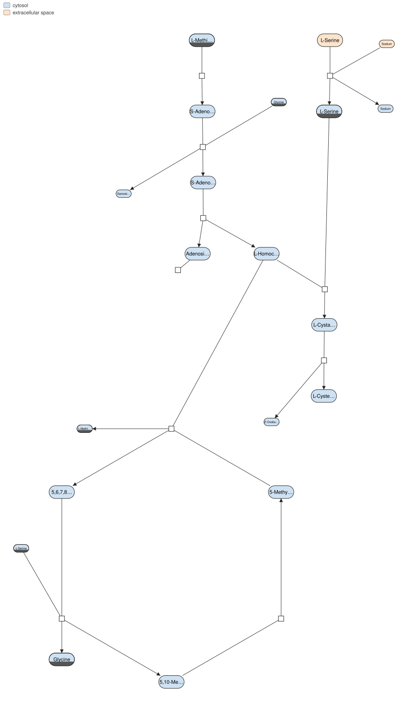
rules-claude (pathway-specific) 3.394 s · 10 of 37 nodes not placed; 30 drawn nodes (clones) · sbml_pathway_layout 787d47a SVG positions (JSON) ecmapper-brenda (pathway-specific) 6.612 s · 8 of 37 nodes not placed; 41 drawn nodes (clones) · ecmapper a711a72 SVG positions (JSON) ecmapper-brenda-packed (pathway-specific) 6.402 s · 8 of 37 nodes not placed; 41 drawn nodes (clones) · ecmapper a711a72 SVG positions (JSON) metacarto (pathway-specific) 1.895 s · 2 of 37 nodes not placed; 42 drawn nodes (clones) · MetaCarto v2.0.0 SVG positions (JSON) sbml2map (pathway-specific) 2.726 s · 7 of 37 nodes not placed; 34 drawn nodes (clones) · sbml2map ca3873a SVG positions (JSON) sbmlnetwork (SBML-specific) 0.86 s · 39 drawn nodes (clones) · sbmlnetwork 0.5.12 SVG positions (JSON) cytoscape-fcose-compartments (compartments as groups) 0.372 s · cytoscape 3.33.1, cytoscape-fcose 2.2.0 SVG positions (JSON) cytoscape-cose-bilkent-compartments (compartments as groups) 0.389 s · cytoscape 3.33.1, cytoscape-cose-bilkent 4.1.0 SVG positions (JSON) reagraph-force-compartments (compartments as groups) 1.131 s · reagraph 4.32.0 SVG positions (JSON) cytoscape-fcose (compound-capable force-directed) 0.376 s · cytoscape 3.33.1, cytoscape-fcose 2.2.0 SVG positions (JSON) cytoscape-cose-bilkent (compound-capable force-directed) 0.378 s · cytoscape 3.33.1, cytoscape-cose-bilkent 4.1.0 SVG positions (JSON) cytoscape-elk-layered (layered) 0.555 s · cytoscape 3.33.1, cytoscape-elk 2.3.0, elkjs 0.9.3 SVG positions (JSON) graphviz-dot (layered) 0.036 s · pygraphviz 2.0.4, Graphviz 14.1.5 SVG positions (JSON) cytoscape-dagre (layered) 0.371 s · cytoscape 3.33.1, cytoscape-dagre 2.5.0 SVG positions (JSON) cytoscape-klay (layered) 0.415 s · cytoscape 3.33.1, cytoscape-klay 3.1.4 SVG positions (JSON) igraph-sugiyama (layered) 0.015 s · igraph 1.0.0 SVG positions (JSON) graphviz-neato (stress) 0.042 s · pygraphviz 2.0.4, Graphviz 14.1.5 SVG positions (JSON) cytoscape-elk-stress (stress) 0.745 s · cytoscape 3.33.1, cytoscape-elk 2.3.0, elkjs 0.9.3 SVG positions (JSON) cytoscape-cola (stress, with constraints) 0.801 s · cytoscape 3.33.1, cytoscape-cola 2.5.1 SVG positions (JSON) networkx-kamada_kawai (stress) 0.044 s · networkx 3.7 SVG positions (JSON) igraph-kk (stress) 0.013 s · igraph 1.0.0 SVG positions (JSON) graphviz-sfdp (force-directed) 0.037 s · pygraphviz 2.0.4, Graphviz 14.1.5 SVG positions (JSON) graphviz-fdp (force-directed) 0.043 s · pygraphviz 2.0.4, Graphviz 14.1.5 SVG positions (JSON) igraph-fr (force-directed) 0.015 s · igraph 1.0.0 SVG positions (JSON) networkx-spring (force-directed) 0.022 s · networkx 3.7 SVG positions (JSON) cytoscape-cose (force-directed) 0.348 s · cytoscape 3.33.1 SVG positions (JSON) cytoscape-elk-force (force-directed) 0.732 s · cytoscape 3.33.1, cytoscape-elk 2.3.0, elkjs 0.9.3 SVG positions (JSON) graphology-forceatlas2 (force-directed) 1.026 s · graphology 0.26.0, graphology-layout-forceatlas2 0.10.1 SVG positions (JSON) graphology-forceatlas2-noverlap (force-directed) 1.036 s · graphology 0.26.0, graphology-layout-forceatlas2 0.10.1, graphology-layout-noverlap 0.4.2 SVG positions (JSON) reagraph-force (force-directed) 1.387 s · reagraph 4.32.0 SVG positions (JSON) igraph-graphopt (force-directed) 0.019 s · igraph 1.0.0 SVG positions (JSON) igraph-drl (for large graphs) 0.583 s · igraph 1.0.0 SVG positions (JSON) igraph-lgl (for large graphs) 0.022 s · igraph 1.0.0 SVG positions (JSON) graphviz-twopi (radial) 0.031 s · pygraphviz 2.0.4, Graphviz 14.1.5 SVG positions (JSON) graphviz-circo (circular) 0.059 s · pygraphviz 2.0.4, Graphviz 14.1.5 SVG positions (JSON) cytoscape-elk-mrtree (tree) 0.464 s · cytoscape 3.33.1, cytoscape-elk 2.3.0, elkjs 0.9.3 SVG positions (JSON) igraph-mds (baseline) 0.015 s · igraph 1.0.0 SVG positions (JSON) networkx-spectral (baseline) 0.017 s · networkx 3.7 SVG positions (JSON)
Scores (click a column to sort; best values bold; hover a header for what it measures) urea-cycle
Reference : urea-cycle.escher.json 0.0 s · 61 drawn nodes (clones) SVG positions (JSON)
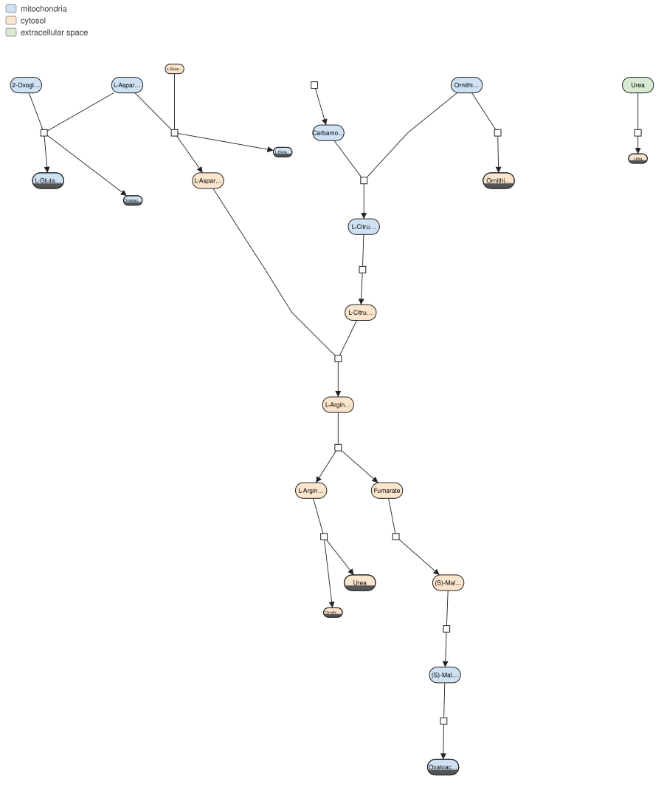
rules-claude (pathway-specific) 2.48 s · 17 of 48 nodes not placed; 35 drawn nodes (clones) · sbml_pathway_layout 787d47a SVG positions (JSON) ecmapper-brenda (pathway-specific) 6.288 s · 18 of 48 nodes not placed; 46 drawn nodes (clones) · ecmapper a711a72 SVG positions (JSON) ecmapper-brenda-packed (pathway-specific) 6.477 s · 18 of 48 nodes not placed; 46 drawn nodes (clones) · ecmapper a711a72 SVG positions (JSON) metacarto (pathway-specific) 1.868 s · 4 of 48 nodes not placed; 54 drawn nodes (clones) · MetaCarto v2.0.0 SVG positions (JSON) sbml2map (pathway-specific) 2.935 s · 11 of 48 nodes not placed · sbml2map ca3873a SVG positions (JSON) sbmlnetwork (SBML-specific) 0.94 s · 50 drawn nodes (clones) · sbmlnetwork 0.5.12 SVG positions (JSON) cytoscape-fcose-compartments (compartments as groups) 0.387 s · cytoscape 3.33.1, cytoscape-fcose 2.2.0 SVG positions (JSON) cytoscape-cose-bilkent-compartments (compartments as groups) 0.375 s · cytoscape 3.33.1, cytoscape-cose-bilkent 4.1.0 SVG positions (JSON) reagraph-force-compartments (compartments as groups) 1.007 s · reagraph 4.32.0 SVG positions (JSON) cytoscape-fcose (compound-capable force-directed) 0.348 s · cytoscape 3.33.1, cytoscape-fcose 2.2.0 SVG positions (JSON) cytoscape-cose-bilkent (compound-capable force-directed) 0.386 s · cytoscape 3.33.1, cytoscape-cose-bilkent 4.1.0 SVG positions (JSON) cytoscape-elk-layered (layered) 0.646 s · cytoscape 3.33.1, cytoscape-elk 2.3.0, elkjs 0.9.3 SVG positions (JSON) graphviz-dot (layered) 0.036 s · pygraphviz 2.0.4, Graphviz 14.1.5 SVG positions (JSON) cytoscape-dagre (layered) 0.396 s · cytoscape 3.33.1, cytoscape-dagre 2.5.0 SVG positions (JSON) cytoscape-klay (layered) 0.48 s · cytoscape 3.33.1, cytoscape-klay 3.1.4 SVG positions (JSON) igraph-sugiyama (layered) 0.016 s · igraph 1.0.0 SVG positions (JSON) graphviz-neato (stress) 0.039 s · pygraphviz 2.0.4, Graphviz 14.1.5 SVG positions (JSON) cytoscape-elk-stress (stress) 1.001 s · cytoscape 3.33.1, cytoscape-elk 2.3.0, elkjs 0.9.3 SVG positions (JSON) cytoscape-cola (stress, with constraints) 20.951 s · cytoscape 3.33.1, cytoscape-cola 2.5.1 SVG positions (JSON) networkx-kamada_kawai (stress) 0.061 s · networkx 3.7 SVG positions (JSON) igraph-kk (stress) 0.018 s · igraph 1.0.0 SVG positions (JSON) graphviz-sfdp (force-directed) 0.039 s · pygraphviz 2.0.4, Graphviz 14.1.5 SVG positions (JSON) graphviz-fdp (force-directed) 0.047 s · pygraphviz 2.0.4, Graphviz 14.1.5 SVG positions (JSON) igraph-fr (force-directed) 0.017 s · igraph 1.0.0 SVG positions (JSON) networkx-spring (force-directed) 0.021 s · networkx 3.7 SVG positions (JSON) cytoscape-cose (force-directed) 0.376 s · cytoscape 3.33.1 SVG positions (JSON) cytoscape-elk-force (force-directed) 0.942 s · cytoscape 3.33.1, cytoscape-elk 2.3.0, elkjs 0.9.3 SVG positions (JSON) graphology-forceatlas2 (force-directed) 1.054 s · graphology 0.26.0, graphology-layout-forceatlas2 0.10.1 SVG positions (JSON) graphology-forceatlas2-noverlap (force-directed) 1.081 s · graphology 0.26.0, graphology-layout-forceatlas2 0.10.1, graphology-layout-noverlap 0.4.2 SVG positions (JSON) reagraph-force (force-directed) 1.142 s · reagraph 4.32.0 SVG positions (JSON) igraph-graphopt (force-directed) 0.022 s · igraph 1.0.0 SVG positions (JSON) igraph-drl (for large graphs) 0.572 s · igraph 1.0.0 SVG positions (JSON) igraph-lgl (for large graphs) 0.017 s · igraph 1.0.0 SVG positions (JSON) graphviz-twopi (radial) 0.032 s · pygraphviz 2.0.4, Graphviz 14.1.5 SVG positions (JSON) graphviz-circo (circular) 0.063 s · pygraphviz 2.0.4, Graphviz 14.1.5 SVG positions (JSON) cytoscape-elk-mrtree (tree) 0.542 s · cytoscape 3.33.1, cytoscape-elk 2.3.0, elkjs 0.9.3 SVG positions (JSON) igraph-mds (baseline) 0.013 s · igraph 1.0.0 SVG positions (JSON) networkx-spectral (baseline) 0.021 s · networkx 3.7 SVG positions (JSON)
Scores (click a column to sort; best values bold; hover a header for what it measures) glycolysis
Reference : glycolysis.escher.json 0.0 s · 33 drawn nodes (clones) SVG positions (JSON)
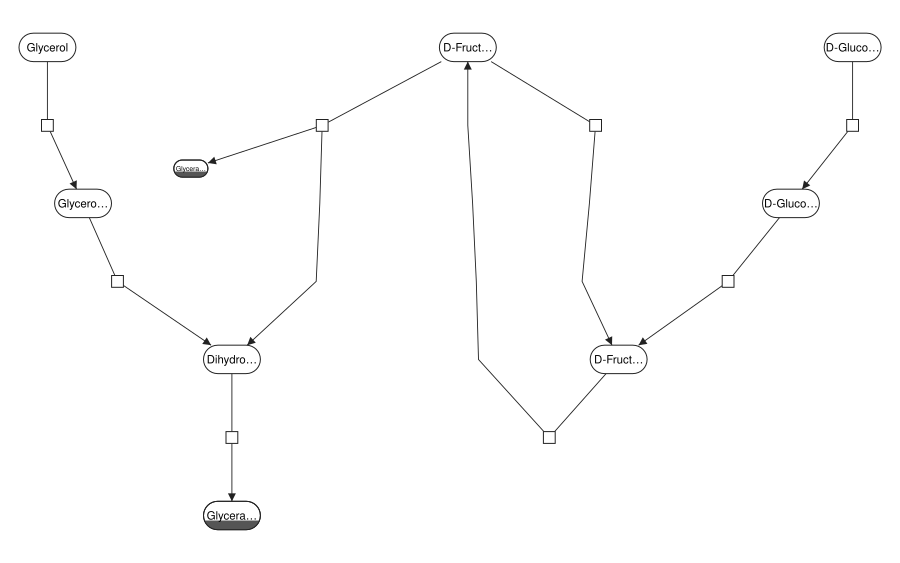
rules-claude (pathway-specific) 1.831 s · 7 of 23 nodes not placed; 17 drawn nodes (clones) · sbml_pathway_layout 787d47a SVG positions (JSON) ecmapper-brenda (pathway-specific) 5.887 s · 1 of 23 nodes not placed; 28 drawn nodes (clones) · ecmapper a711a72 SVG positions (JSON) ecmapper-brenda-packed (pathway-specific) 6.33 s · 1 of 23 nodes not placed; 28 drawn nodes (clones) · ecmapper a711a72 SVG positions (JSON) metacarto (pathway-specific) 1.447 s · 2 of 23 nodes not placed; 26 drawn nodes (clones) · MetaCarto v2.0.0 SVG positions (JSON) sbml2map (pathway-specific) 2.441 s · 3 of 23 nodes not placed; 24 drawn nodes (clones) · sbml2map ca3873a SVG positions (JSON) sbmlnetwork (SBML-specific) 0.72 s · 24 drawn nodes (clones) · sbmlnetwork 0.5.12 SVG positions (JSON) cytoscape-fcose-compartments (compartments as groups) 0.396 s · cytoscape 3.33.1, cytoscape-fcose 2.2.0 SVG positions (JSON) cytoscape-cose-bilkent-compartments (compartments as groups) 0.336 s · cytoscape 3.33.1, cytoscape-cose-bilkent 4.1.0 SVG positions (JSON) reagraph-force-compartments (compartments as groups) 1.005 s · reagraph 4.32.0 SVG positions (JSON) cytoscape-fcose (compound-capable force-directed) 0.351 s · cytoscape 3.33.1, cytoscape-fcose 2.2.0 SVG positions (JSON) cytoscape-cose-bilkent (compound-capable force-directed) 0.365 s · cytoscape 3.33.1, cytoscape-cose-bilkent 4.1.0 SVG positions (JSON) cytoscape-elk-layered (layered) 0.522 s · cytoscape 3.33.1, cytoscape-elk 2.3.0, elkjs 0.9.3 SVG positions (JSON) graphviz-dot (layered) 0.03 s · pygraphviz 2.0.4, Graphviz 14.1.5 SVG positions (JSON) cytoscape-dagre (layered) 0.36 s · cytoscape 3.33.1, cytoscape-dagre 2.5.0 SVG positions (JSON) cytoscape-klay (layered) 0.478 s · cytoscape 3.33.1, cytoscape-klay 3.1.4 SVG positions (JSON) igraph-sugiyama (layered) 0.013 s · igraph 1.0.0 SVG positions (JSON) graphviz-neato (stress) 0.029 s · pygraphviz 2.0.4, Graphviz 14.1.5 SVG positions (JSON) cytoscape-elk-stress (stress) 0.568 s · cytoscape 3.33.1, cytoscape-elk 2.3.0, elkjs 0.9.3 SVG positions (JSON) cytoscape-cola (stress, with constraints) 3.939 s · cytoscape 3.33.1, cytoscape-cola 2.5.1 SVG positions (JSON) networkx-kamada_kawai (stress) 0.152 s · networkx 3.7 SVG positions (JSON) igraph-kk (stress) 0.012 s · igraph 1.0.0 SVG positions (JSON) graphviz-sfdp (force-directed) 0.031 s · pygraphviz 2.0.4, Graphviz 14.1.5 SVG positions (JSON) graphviz-fdp (force-directed) 0.034 s · pygraphviz 2.0.4, Graphviz 14.1.5 SVG positions (JSON) igraph-fr (force-directed) 0.013 s · igraph 1.0.0 SVG positions (JSON) networkx-spring (force-directed) 0.082 s · networkx 3.7 SVG positions (JSON) cytoscape-cose (force-directed) 0.338 s · cytoscape 3.33.1 SVG positions (JSON) cytoscape-elk-force (force-directed) 0.561 s · cytoscape 3.33.1, cytoscape-elk 2.3.0, elkjs 0.9.3 SVG positions (JSON) graphology-forceatlas2 (force-directed) 0.985 s · graphology 0.26.0, graphology-layout-forceatlas2 0.10.1 SVG positions (JSON) graphology-forceatlas2-noverlap (force-directed) 1.012 s · graphology 0.26.0, graphology-layout-forceatlas2 0.10.1, graphology-layout-noverlap 0.4.2 SVG positions (JSON) reagraph-force (force-directed) 1.093 s · reagraph 4.32.0 SVG positions (JSON) igraph-graphopt (force-directed) 0.014 s · igraph 1.0.0 SVG positions (JSON) igraph-drl (for large graphs) 0.664 s · igraph 1.0.0 SVG positions (JSON) igraph-lgl (for large graphs) 0.014 s · igraph 1.0.0 SVG positions (JSON) graphviz-twopi (radial) 0.026 s · pygraphviz 2.0.4, Graphviz 14.1.5 SVG positions (JSON) graphviz-circo (circular) 0.037 s · pygraphviz 2.0.4, Graphviz 14.1.5 SVG positions (JSON) cytoscape-elk-mrtree (tree) 0.473 s · cytoscape 3.33.1, cytoscape-elk 2.3.0, elkjs 0.9.3 SVG positions (JSON) igraph-mds (baseline) 0.012 s · igraph 1.0.0 SVG positions (JSON) networkx-spectral (baseline) 0.015 s · networkx 3.7 SVG positions (JSON)
Scores (click a column to sort; best values bold; hover a header for what it measures) Stress Knowledge Map (PSS)2 models, 0 with a reference layout
Plant stress signalling, from the Stress Knowledge Map (skm.nib.si), with model fixes; public data, Arabidopsis thaliana.
ja-model-with-model-fixesno reference layout
No reference layout
RuntimeError: 82 reactions, 0/107 formulas, 0 cofactors, 1 drawing(s)
rules-claude (pathway-specific) 12.098 s · sbml_pathway_layout 787d47a SVG positions (JSON) RuntimeError: ValueError: min() iterable argument is empty
ecmapper-brenda (pathway-specific) 4.902 s · ecmapper a711a72 RuntimeError: ValueError: min() iterable argument is empty
ecmapper-brenda-packed (pathway-specific) 4.925 s · ecmapper a711a72 metacarto (pathway-specific) 10.572 s · 25 of 199 nodes not placed; 190 drawn nodes (clones) · MetaCarto v2.0.0 SVG positions (JSON) RuntimeError: sbml2map.py: error: Variable stoichiometry is unsupported: rx00014
sbml2map (pathway-specific) 0.486 s · sbml2map ca3873a sbmlnetwork (SBML-specific) 4.13 s · 213 drawn nodes (clones) · sbmlnetwork 0.5.12 SVG positions (JSON) cytoscape-fcose-compartments (compartments as groups) 0.971 s · cytoscape 3.33.1, cytoscape-fcose 2.2.0 SVG positions (JSON) cytoscape-cose-bilkent-compartments (compartments as groups) 1.185 s · cytoscape 3.33.1, cytoscape-cose-bilkent 4.1.0 SVG positions (JSON) reagraph-force-compartments (compartments as groups) 1.033 s · reagraph 4.32.0 SVG positions (JSON) cytoscape-fcose (compound-capable force-directed) 0.742 s · cytoscape 3.33.1, cytoscape-fcose 2.2.0 SVG positions (JSON) cytoscape-cose-bilkent (compound-capable force-directed) 0.791 s · cytoscape 3.33.1, cytoscape-cose-bilkent 4.1.0 SVG positions (JSON) cytoscape-elk-layered (layered) 1.407 s · cytoscape 3.33.1, cytoscape-elk 2.3.0, elkjs 0.9.3 SVG positions (JSON) graphviz-dot (layered) 0.097 s · pygraphviz 2.0.4, Graphviz 14.1.5 SVG positions (JSON) cytoscape-dagre (layered) 0.924 s · cytoscape 3.33.1, cytoscape-dagre 2.5.0 SVG positions (JSON) cytoscape-klay (layered) 1.01 s · cytoscape 3.33.1, cytoscape-klay 3.1.4 SVG positions (JSON) igraph-sugiyama (layered) 0.047 s · igraph 1.0.0 SVG positions (JSON) graphviz-neato (stress) 0.468 s · pygraphviz 2.0.4, Graphviz 14.1.5 SVG positions (JSON) cytoscape-elk-stress (stress) 14.692 s · cytoscape 3.33.1, cytoscape-elk 2.3.0, elkjs 0.9.3 SVG positions (JSON) cytoscape-cola (stress, with constraints) 183.992 s · cytoscape 3.33.1, cytoscape-cola 2.5.1 SVG positions (JSON) networkx-kamada_kawai (stress) 1.674 s · networkx 3.7 SVG positions (JSON) igraph-kk (stress) 0.085 s · igraph 1.0.0 SVG positions (JSON) graphviz-sfdp (force-directed) 0.14 s · pygraphviz 2.0.4, Graphviz 14.1.5 SVG positions (JSON) graphviz-fdp (force-directed) 0.183 s · pygraphviz 2.0.4, Graphviz 14.1.5 SVG positions (JSON) igraph-fr (force-directed) 0.138 s · igraph 1.0.0 SVG positions (JSON) networkx-spring (force-directed) 0.2 s · networkx 3.7 SVG positions (JSON) cytoscape-cose (force-directed) 2.177 s · cytoscape 3.33.1 SVG positions (JSON) cytoscape-elk-force (force-directed) 13.028 s · cytoscape 3.33.1, cytoscape-elk 2.3.0, elkjs 0.9.3 SVG positions (JSON) graphology-forceatlas2 (force-directed) 0.929 s · graphology 0.26.0, graphology-layout-forceatlas2 0.10.1 SVG positions (JSON) graphology-forceatlas2-noverlap (force-directed) 1.053 s · graphology 0.26.0, graphology-layout-forceatlas2 0.10.1, graphology-layout-noverlap 0.4.2 SVG positions (JSON) reagraph-force (force-directed) 0.987 s · reagraph 4.32.0 SVG positions (JSON) igraph-graphopt (force-directed) 0.215 s · igraph 1.0.0 SVG positions (JSON) igraph-drl (for large graphs) 1.27 s · igraph 1.0.0 SVG positions (JSON) igraph-lgl (for large graphs) 0.117 s · igraph 1.0.0 SVG positions (JSON) graphviz-twopi (radial) 0.104 s · pygraphviz 2.0.4, Graphviz 14.1.5 SVG positions (JSON) graphviz-circo (circular) 0.311 s · pygraphviz 2.0.4, Graphviz 14.1.5 SVG positions (JSON) cytoscape-elk-mrtree (tree) 1.045 s · cytoscape 3.33.1, cytoscape-elk 2.3.0, elkjs 0.9.3 SVG positions (JSON) igraph-mds (baseline) 0.048 s · igraph 1.0.0 SVG positions (JSON) networkx-spectral (baseline) 0.483 s · networkx 3.7 SVG positions (JSON)
Scores (click a column to sort; best values bold; hover a header for what it measures) sa-model-with-model-fixesno reference layout
No reference layout
timeout after 300 s
rules-claude (pathway-specific) 300.0 s · sbml_pathway_layout 787d47a SVG positions (JSON) RuntimeError: ValueError: min() iterable argument is empty
ecmapper-brenda (pathway-specific) 5.179 s · ecmapper a711a72 RuntimeError: ValueError: min() iterable argument is empty
ecmapper-brenda-packed (pathway-specific) 5.149 s · ecmapper a711a72 metacarto (pathway-specific) 23.113 s · 47 of 352 nodes not placed; 342 drawn nodes (clones) · MetaCarto v2.0.0 SVG positions (JSON) RuntimeError: sbml2map.py: error: Variable stoichiometry is unsupported: rx00036
sbml2map (pathway-specific) 0.503 s · sbml2map ca3873a sbmlnetwork (SBML-specific) 16.94 s · 389 drawn nodes (clones) · sbmlnetwork 0.5.12 SVG positions (JSON) cytoscape-fcose-compartments (compartments as groups) 2.381 s · cytoscape 3.33.1, cytoscape-fcose 2.2.0 SVG positions (JSON) cytoscape-cose-bilkent-compartments (compartments as groups) 1.623 s · cytoscape 3.33.1, cytoscape-cose-bilkent 4.1.0 SVG positions (JSON) reagraph-force-compartments (compartments as groups) 1.296 s · reagraph 4.32.0 SVG positions (JSON) cytoscape-fcose (compound-capable force-directed) 1.063 s · cytoscape 3.33.1, cytoscape-fcose 2.2.0 SVG positions (JSON) cytoscape-cose-bilkent (compound-capable force-directed) 1.551 s · cytoscape 3.33.1, cytoscape-cose-bilkent 4.1.0 SVG positions (JSON) cytoscape-elk-layered (layered) 2.134 s · cytoscape 3.33.1, cytoscape-elk 2.3.0, elkjs 0.9.3 SVG positions (JSON) graphviz-dot (layered) 0.266 s · pygraphviz 2.0.4, Graphviz 14.1.5 SVG positions (JSON) cytoscape-dagre (layered) 1.512 s · cytoscape 3.33.1, cytoscape-dagre 2.5.0 SVG positions (JSON) cytoscape-klay (layered) 1.477 s · cytoscape 3.33.1, cytoscape-klay 3.1.4 SVG positions (JSON) igraph-sugiyama (layered) 0.072 s · igraph 1.0.0 SVG positions (JSON) graphviz-neato (stress) 3.457 s · pygraphviz 2.0.4, Graphviz 14.1.5 SVG positions (JSON) cytoscape-elk-stress (stress) 52.737 s · cytoscape 3.33.1, cytoscape-elk 2.3.0, elkjs 0.9.3 SVG positions (JSON) timeout after 600 s
cytoscape-cola (stress, with constraints) 600.0 s · cytoscape 3.33.1, cytoscape-cola 2.5.1 networkx-kamada_kawai (stress) 4.833 s · networkx 3.7 SVG positions (JSON) igraph-kk (stress) 0.267 s · igraph 1.0.0 SVG positions (JSON) graphviz-sfdp (force-directed) 0.301 s · pygraphviz 2.0.4, Graphviz 14.1.5 SVG positions (JSON) graphviz-fdp (force-directed) 0.36 s · pygraphviz 2.0.4, Graphviz 14.1.5 SVG positions (JSON) igraph-fr (force-directed) 0.234 s · igraph 1.0.0 SVG positions (JSON) networkx-spring (force-directed) 0.569 s · networkx 3.7 SVG positions (JSON) cytoscape-cose (force-directed) 7.562 s · cytoscape 3.33.1 SVG positions (JSON) cytoscape-elk-force (force-directed) 44.626 s · cytoscape 3.33.1, cytoscape-elk 2.3.0, elkjs 0.9.3 SVG positions (JSON) graphology-forceatlas2 (force-directed) 1.365 s · graphology 0.26.0, graphology-layout-forceatlas2 0.10.1 SVG positions (JSON) graphology-forceatlas2-noverlap (force-directed) 1.526 s · graphology 0.26.0, graphology-layout-forceatlas2 0.10.1, graphology-layout-noverlap 0.4.2 SVG positions (JSON) reagraph-force (force-directed) 1.246 s · reagraph 4.32.0 SVG positions (JSON) igraph-graphopt (force-directed) 0.684 s · igraph 1.0.0 SVG positions (JSON) igraph-drl (for large graphs) 1.538 s · igraph 1.0.0 SVG positions (JSON) igraph-lgl (for large graphs) 0.473 s · igraph 1.0.0 SVG positions (JSON) graphviz-twopi (radial) 0.11 s · pygraphviz 2.0.4, Graphviz 14.1.5 SVG positions (JSON) graphviz-circo (circular) 1.822 s · pygraphviz 2.0.4, Graphviz 14.1.5 SVG positions (JSON) cytoscape-elk-mrtree (tree) 1.815 s · cytoscape 3.33.1, cytoscape-elk 2.3.0, elkjs 0.9.3 SVG positions (JSON) igraph-mds (baseline) 0.095 s · igraph 1.0.0 SVG positions (JSON) networkx-spectral (baseline) 1.057 s · networkx 3.7 SVG positions (JSON)
Scores (click a column to sort; best values bold; hover a header for what it measures) BRENDA pathways8 models, 8 with a reference layout
Pathways of BRENDA's pathway map; the reference is the pathway on that map (BRENDA, CC BY 4.0), read from ecmapper's export of it.
brenda_citric-acid-cycle
Reference : BRENDA_map_reactions.json 0.0 s · 84 drawn nodes (clones) SVG positions (JSON)
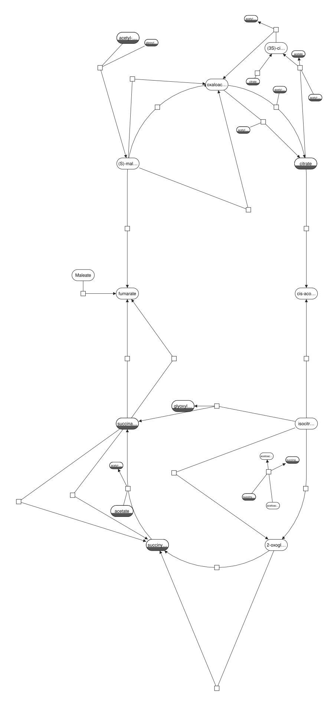
rules-claude (pathway-specific) 109.867 s · 18 of 58 nodes not placed; 50 drawn nodes (clones) · sbml_pathway_layout 787d47a SVG positions (JSON) ecmapper-brenda (pathway-specific) 5.875 s · 87 drawn nodes (clones) · ecmapper a711a72 SVG positions (JSON) ecmapper-brenda-packed (pathway-specific) 5.837 s · 87 drawn nodes (clones) · ecmapper a711a72 SVG positions (JSON) metacarto (pathway-specific) 5.632 s · 1 of 58 nodes not placed; 96 drawn nodes (clones) · MetaCarto v2.0.0 SVG positions (JSON) 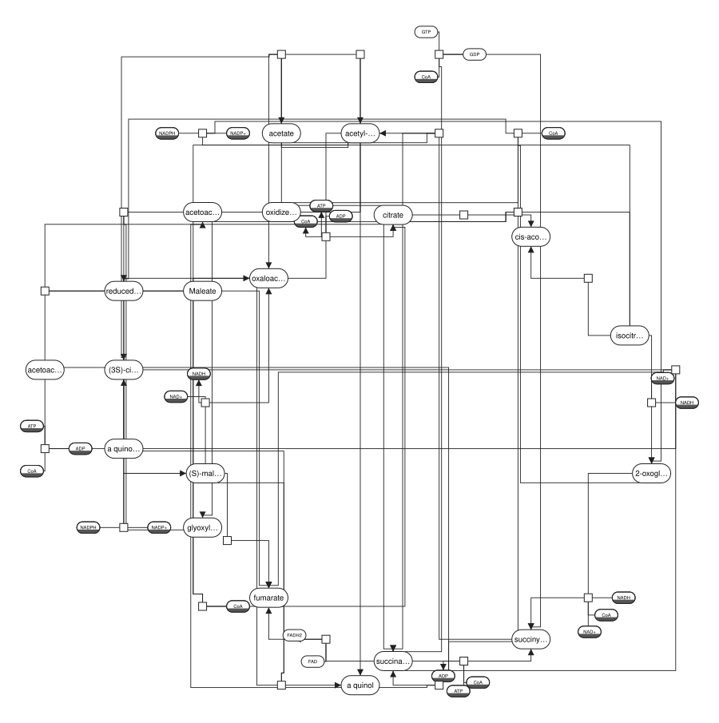
sbml2map (pathway-specific) 4.217 s · 3 of 58 nodes not placed; 71 drawn nodes (clones) · sbml2map ca3873a SVG positions (JSON) sbmlnetwork (SBML-specific) 0.95 s · 73 drawn nodes (clones) · sbmlnetwork 0.5.12 SVG positions (JSON) cytoscape-fcose-compartments (compartments as groups) 1.329 s · cytoscape 3.33.1, cytoscape-fcose 2.2.0 SVG positions (JSON) cytoscape-cose-bilkent-compartments (compartments as groups) 1.464 s · cytoscape 3.33.1, cytoscape-cose-bilkent 4.1.0 SVG positions (JSON) reagraph-force-compartments (compartments as groups) 0.866 s · reagraph 4.32.0 SVG positions (JSON) cytoscape-fcose (compound-capable force-directed) 1.29 s · cytoscape 3.33.1, cytoscape-fcose 2.2.0 SVG positions (JSON) cytoscape-cose-bilkent (compound-capable force-directed) 1.445 s · cytoscape 3.33.1, cytoscape-cose-bilkent 4.1.0 SVG positions (JSON) cytoscape-elk-layered (layered) 1.945 s · cytoscape 3.33.1, cytoscape-elk 2.3.0, elkjs 0.9.3 SVG positions (JSON) graphviz-dot (layered) 0.157 s · pygraphviz 2.0.4, Graphviz 14.1.5 SVG positions (JSON) cytoscape-dagre (layered) 1.291 s · cytoscape 3.33.1, cytoscape-dagre 2.5.0 SVG positions (JSON) cytoscape-klay (layered) 1.423 s · cytoscape 3.33.1, cytoscape-klay 3.1.4 SVG positions (JSON) igraph-sugiyama (layered) 0.048 s · igraph 1.0.0 SVG positions (JSON) graphviz-neato (stress) 0.127 s · pygraphviz 2.0.4, Graphviz 14.1.5 SVG positions (JSON) cytoscape-elk-stress (stress) 3.041 s · cytoscape 3.33.1, cytoscape-elk 2.3.0, elkjs 0.9.3 SVG positions (JSON) cytoscape-cola (stress, with constraints) 5.611 s · cytoscape 3.33.1, cytoscape-cola 2.5.1 SVG positions (JSON) networkx-kamada_kawai (stress) 1.211 s · networkx 3.7 SVG positions (JSON) igraph-kk (stress) 0.044 s · igraph 1.0.0 SVG positions (JSON) graphviz-sfdp (force-directed) 0.157 s · pygraphviz 2.0.4, Graphviz 14.1.5 SVG positions (JSON) graphviz-fdp (force-directed) 0.154 s · pygraphviz 2.0.4, Graphviz 14.1.5 SVG positions (JSON) igraph-fr (force-directed) 0.051 s · igraph 1.0.0 SVG positions (JSON) networkx-spring (force-directed) 0.076 s · networkx 3.7 SVG positions (JSON) cytoscape-cose (force-directed) 1.083 s · cytoscape 3.33.1 SVG positions (JSON) cytoscape-elk-force (force-directed) 3.594 s · cytoscape 3.33.1, cytoscape-elk 2.3.0, elkjs 0.9.3 SVG positions (JSON) graphology-forceatlas2 (force-directed) 0.749 s · graphology 0.26.0, graphology-layout-forceatlas2 0.10.1 SVG positions (JSON) graphology-forceatlas2-noverlap (force-directed) 0.864 s · graphology 0.26.0, graphology-layout-forceatlas2 0.10.1, graphology-layout-noverlap 0.4.2 SVG positions (JSON) reagraph-force (force-directed) 0.805 s · reagraph 4.32.0 SVG positions (JSON) igraph-graphopt (force-directed) 0.056 s · igraph 1.0.0 SVG positions (JSON) igraph-drl (for large graphs) 1.672 s · igraph 1.0.0 SVG positions (JSON) igraph-lgl (for large graphs) 0.052 s · igraph 1.0.0 SVG positions (JSON) graphviz-twopi (radial) 0.11 s · pygraphviz 2.0.4, Graphviz 14.1.5 SVG positions (JSON) graphviz-circo (circular) 0.952 s · pygraphviz 2.0.4, Graphviz 14.1.5 SVG positions (JSON) cytoscape-elk-mrtree (tree) 1.531 s · cytoscape 3.33.1, cytoscape-elk 2.3.0, elkjs 0.9.3 SVG positions (JSON) igraph-mds (baseline) 0.041 s · igraph 1.0.0 SVG positions (JSON) networkx-spectral (baseline) 0.075 s · networkx 3.7 SVG positions (JSON)
Scores (click a column to sort; best values bold; hover a header for what it measures) brenda_entner-doudoroff-pathway
Reference : BRENDA_map_reactions.json 0.0 s · 3 of 38 nodes not placed; 41 drawn nodes (clones) SVG positions (JSON)
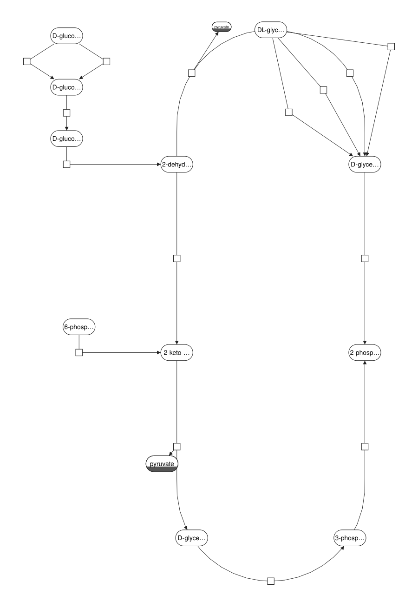
rules-claude (pathway-specific) 3.12 s · 11 of 38 nodes not placed; 28 drawn nodes (clones) · sbml_pathway_layout 787d47a SVG positions (JSON) ecmapper-brenda (pathway-specific) 5.517 s · 2 of 38 nodes not placed; 47 drawn nodes (clones) · ecmapper a711a72 SVG positions (JSON) ecmapper-brenda-packed (pathway-specific) 5.544 s · 2 of 38 nodes not placed; 47 drawn nodes (clones) · ecmapper a711a72 SVG positions (JSON) metacarto (pathway-specific) 4.888 s · 1 of 38 nodes not placed; 51 drawn nodes (clones) · MetaCarto v2.0.0 SVG positions (JSON) sbml2map (pathway-specific) 3.349 s · 1 of 38 nodes not placed; 45 drawn nodes (clones) · sbml2map ca3873a SVG positions (JSON) sbmlnetwork (SBML-specific) 0.69 s · 40 drawn nodes (clones) · sbmlnetwork 0.5.12 SVG positions (JSON) cytoscape-fcose-compartments (compartments as groups) 0.924 s · cytoscape 3.33.1, cytoscape-fcose 2.2.0 SVG positions (JSON) cytoscape-cose-bilkent-compartments (compartments as groups) 1.084 s · cytoscape 3.33.1, cytoscape-cose-bilkent 4.1.0 SVG positions (JSON) reagraph-force-compartments (compartments as groups) 0.922 s · reagraph 4.32.0 SVG positions (JSON) cytoscape-fcose (compound-capable force-directed) 0.85 s · cytoscape 3.33.1, cytoscape-fcose 2.2.0 SVG positions (JSON) cytoscape-cose-bilkent (compound-capable force-directed) 0.939 s · cytoscape 3.33.1, cytoscape-cose-bilkent 4.1.0 SVG positions (JSON) cytoscape-elk-layered (layered) 1.468 s · cytoscape 3.33.1, cytoscape-elk 2.3.0, elkjs 0.9.3 SVG positions (JSON) graphviz-dot (layered) 0.05 s · pygraphviz 2.0.4, Graphviz 14.1.5 SVG positions (JSON) cytoscape-dagre (layered) 1.037 s · cytoscape 3.33.1, cytoscape-dagre 2.5.0 SVG positions (JSON) cytoscape-klay (layered) 1.085 s · cytoscape 3.33.1, cytoscape-klay 3.1.4 SVG positions (JSON) igraph-sugiyama (layered) 0.04 s · igraph 1.0.0 SVG positions (JSON) graphviz-neato (stress) 0.163 s · pygraphviz 2.0.4, Graphviz 14.1.5 SVG positions (JSON) cytoscape-elk-stress (stress) 2.008 s · cytoscape 3.33.1, cytoscape-elk 2.3.0, elkjs 0.9.3 SVG positions (JSON) cytoscape-cola (stress, with constraints) 26.776 s · cytoscape 3.33.1, cytoscape-cola 2.5.1 SVG positions (JSON) networkx-kamada_kawai (stress) 1.153 s · networkx 3.7 SVG positions (JSON) igraph-kk (stress) 0.079 s · igraph 1.0.0 SVG positions (JSON) graphviz-sfdp (force-directed) 0.092 s · pygraphviz 2.0.4, Graphviz 14.1.5 SVG positions (JSON) graphviz-fdp (force-directed) 0.11 s · pygraphviz 2.0.4, Graphviz 14.1.5 SVG positions (JSON) igraph-fr (force-directed) 0.056 s · igraph 1.0.0 SVG positions (JSON) networkx-spring (force-directed) 0.066 s · networkx 3.7 SVG positions (JSON) cytoscape-cose (force-directed) 0.929 s · cytoscape 3.33.1 SVG positions (JSON) cytoscape-elk-force (force-directed) 2.313 s · cytoscape 3.33.1, cytoscape-elk 2.3.0, elkjs 0.9.3 SVG positions (JSON) graphology-forceatlas2 (force-directed) 1.103 s · graphology 0.26.0, graphology-layout-forceatlas2 0.10.1 SVG positions (JSON) graphology-forceatlas2-noverlap (force-directed) 1.276 s · graphology 0.26.0, graphology-layout-forceatlas2 0.10.1, graphology-layout-noverlap 0.4.2 SVG positions (JSON) reagraph-force (force-directed) 0.914 s · reagraph 4.32.0 SVG positions (JSON) igraph-graphopt (force-directed) 0.045 s · igraph 1.0.0 SVG positions (JSON) igraph-drl (for large graphs) 1.53 s · igraph 1.0.0 SVG positions (JSON) igraph-lgl (for large graphs) 0.048 s · igraph 1.0.0 SVG positions (JSON) graphviz-twopi (radial) 0.073 s · pygraphviz 2.0.4, Graphviz 14.1.5 SVG positions (JSON) graphviz-circo (circular) 0.217 s · pygraphviz 2.0.4, Graphviz 14.1.5 SVG positions (JSON) cytoscape-elk-mrtree (tree) 1.194 s · cytoscape 3.33.1, cytoscape-elk 2.3.0, elkjs 0.9.3 SVG positions (JSON) igraph-mds (baseline) 0.037 s · igraph 1.0.0 SVG positions (JSON) networkx-spectral (baseline) 0.043 s · networkx 3.7 SVG positions (JSON)
Scores (click a column to sort; best values bold; hover a header for what it measures) brenda_glycolysis
Reference : BRENDA_map_reactions.json 0.0 s · 1 of 42 nodes not placed; 55 drawn nodes (clones) SVG positions (JSON)
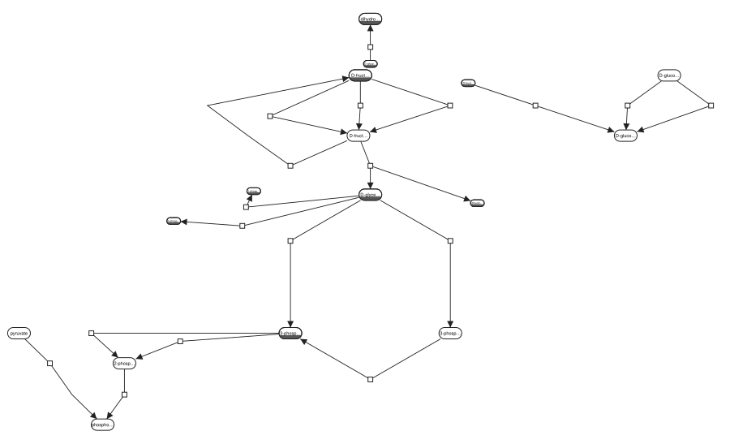
rules-claude (pathway-specific) 6.165 s · 13 of 42 nodes not placed; 34 drawn nodes (clones) · sbml_pathway_layout 787d47a SVG positions (JSON) ecmapper-brenda (pathway-specific) 5.527 s · 59 drawn nodes (clones) · ecmapper a711a72 SVG positions (JSON) ecmapper-brenda-packed (pathway-specific) 5.512 s · 59 drawn nodes (clones) · ecmapper a711a72 SVG positions (JSON) metacarto (pathway-specific) 2.844 s · 1 of 42 nodes not placed; 57 drawn nodes (clones) · MetaCarto v2.0.0 SVG positions (JSON) sbml2map (pathway-specific) 3.422 s · 4 of 42 nodes not placed; 49 drawn nodes (clones) · sbml2map ca3873a SVG positions (JSON) sbmlnetwork (SBML-specific) 0.71 s · 48 drawn nodes (clones) · sbmlnetwork 0.5.12 SVG positions (JSON) cytoscape-fcose-compartments (compartments as groups) 0.572 s · cytoscape 3.33.1, cytoscape-fcose 2.2.0 SVG positions (JSON) cytoscape-cose-bilkent-compartments (compartments as groups) 0.675 s · cytoscape 3.33.1, cytoscape-cose-bilkent 4.1.0 SVG positions (JSON) reagraph-force-compartments (compartments as groups) 1.186 s · reagraph 4.32.0 SVG positions (JSON) cytoscape-fcose (compound-capable force-directed) 0.573 s · cytoscape 3.33.1, cytoscape-fcose 2.2.0 SVG positions (JSON) cytoscape-cose-bilkent (compound-capable force-directed) 0.686 s · cytoscape 3.33.1, cytoscape-cose-bilkent 4.1.0 SVG positions (JSON) cytoscape-elk-layered (layered) 1.02 s · cytoscape 3.33.1, cytoscape-elk 2.3.0, elkjs 0.9.3 SVG positions (JSON) graphviz-dot (layered) 0.065 s · pygraphviz 2.0.4, Graphviz 14.1.5 SVG positions (JSON) cytoscape-dagre (layered) 0.717 s · cytoscape 3.33.1, cytoscape-dagre 2.5.0 SVG positions (JSON) cytoscape-klay (layered) 0.716 s · cytoscape 3.33.1, cytoscape-klay 3.1.4 SVG positions (JSON) igraph-sugiyama (layered) 0.022 s · igraph 1.0.0 SVG positions (JSON) graphviz-neato (stress) 0.063 s · pygraphviz 2.0.4, Graphviz 14.1.5 SVG positions (JSON) cytoscape-elk-stress (stress) 1.443 s · cytoscape 3.33.1, cytoscape-elk 2.3.0, elkjs 0.9.3 SVG positions (JSON) cytoscape-cola (stress, with constraints) 2.077 s · cytoscape 3.33.1, cytoscape-cola 2.5.1 SVG positions (JSON) networkx-kamada_kawai (stress) 0.442 s · networkx 3.7 SVG positions (JSON) igraph-kk (stress) 0.024 s · igraph 1.0.0 SVG positions (JSON) graphviz-sfdp (force-directed) 0.065 s · pygraphviz 2.0.4, Graphviz 14.1.5 SVG positions (JSON) graphviz-fdp (force-directed) 0.073 s · pygraphviz 2.0.4, Graphviz 14.1.5 SVG positions (JSON) igraph-fr (force-directed) 0.024 s · igraph 1.0.0 SVG positions (JSON) networkx-spring (force-directed) 0.031 s · networkx 3.7 SVG positions (JSON) cytoscape-cose (force-directed) 0.585 s · cytoscape 3.33.1 SVG positions (JSON) cytoscape-elk-force (force-directed) 1.423 s · cytoscape 3.33.1, cytoscape-elk 2.3.0, elkjs 0.9.3 SVG positions (JSON) graphology-forceatlas2 (force-directed) 0.812 s · graphology 0.26.0, graphology-layout-forceatlas2 0.10.1 SVG positions (JSON) graphology-forceatlas2-noverlap (force-directed) 0.764 s · graphology 0.26.0, graphology-layout-forceatlas2 0.10.1, graphology-layout-noverlap 0.4.2 SVG positions (JSON) reagraph-force (force-directed) 0.855 s · reagraph 4.32.0 SVG positions (JSON) igraph-graphopt (force-directed) 0.059 s · igraph 1.0.0 SVG positions (JSON) igraph-drl (for large graphs) 0.869 s · igraph 1.0.0 SVG positions (JSON) igraph-lgl (for large graphs) 0.03 s · igraph 1.0.0 SVG positions (JSON) graphviz-twopi (radial) 0.055 s · pygraphviz 2.0.4, Graphviz 14.1.5 SVG positions (JSON) graphviz-circo (circular) 0.26 s · pygraphviz 2.0.4, Graphviz 14.1.5 SVG positions (JSON) cytoscape-elk-mrtree (tree) 0.832 s · cytoscape 3.33.1, cytoscape-elk 2.3.0, elkjs 0.9.3 SVG positions (JSON) igraph-mds (baseline) 0.018 s · igraph 1.0.0 SVG positions (JSON) networkx-spectral (baseline) 0.028 s · networkx 3.7 SVG positions (JSON)
Scores (click a column to sort; best values bold; hover a header for what it measures) brenda_pentose-phosphate-pathway
Reference : BRENDA_map_reactions.json 0.0 s · 50 drawn nodes (clones) SVG positions (JSON)
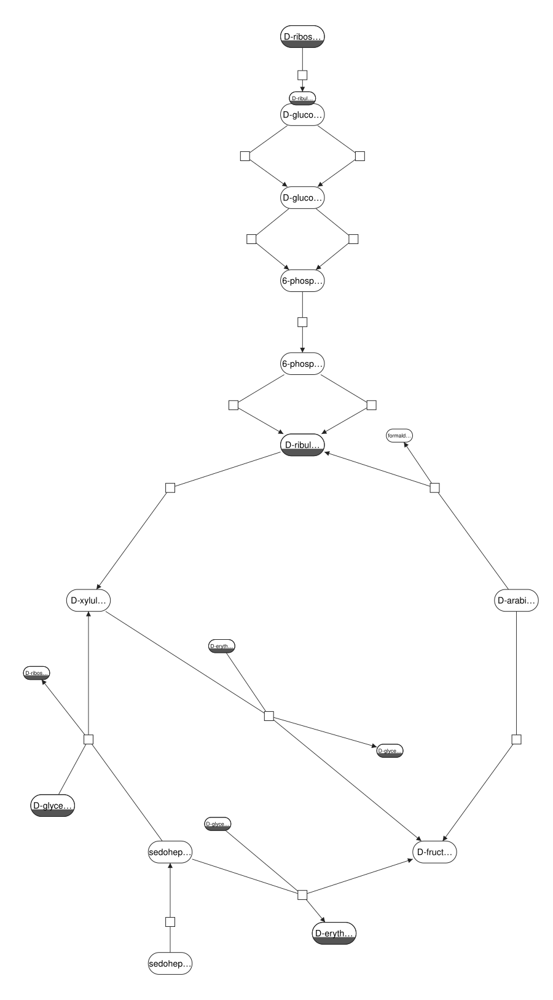
rules-claude (pathway-specific) 2.815 s · 10 of 39 nodes not placed; 34 drawn nodes (clones) · sbml_pathway_layout 787d47a SVG positions (JSON) ecmapper-brenda (pathway-specific) 5.672 s · 1 of 39 nodes not placed; 54 drawn nodes (clones) · ecmapper a711a72 SVG positions (JSON) ecmapper-brenda-packed (pathway-specific) 5.683 s · 1 of 39 nodes not placed; 54 drawn nodes (clones) · ecmapper a711a72 SVG positions (JSON) metacarto (pathway-specific) 2.898 s · 1 of 39 nodes not placed; 49 drawn nodes (clones) · MetaCarto v2.0.0 SVG positions (JSON) sbml2map (pathway-specific) 3.375 s · 3 of 39 nodes not placed; 41 drawn nodes (clones) · sbml2map ca3873a SVG positions (JSON) sbmlnetwork (SBML-specific) 0.69 s · 41 drawn nodes (clones) · sbmlnetwork 0.5.12 SVG positions (JSON) cytoscape-fcose-compartments (compartments as groups) 0.572 s · cytoscape 3.33.1, cytoscape-fcose 2.2.0 SVG positions (JSON) cytoscape-cose-bilkent-compartments (compartments as groups) 0.653 s · cytoscape 3.33.1, cytoscape-cose-bilkent 4.1.0 SVG positions (JSON) reagraph-force-compartments (compartments as groups) 0.799 s · reagraph 4.32.0 SVG positions (JSON) cytoscape-fcose (compound-capable force-directed) 0.557 s · cytoscape 3.33.1, cytoscape-fcose 2.2.0 SVG positions (JSON) cytoscape-cose-bilkent (compound-capable force-directed) 0.605 s · cytoscape 3.33.1, cytoscape-cose-bilkent 4.1.0 SVG positions (JSON) cytoscape-elk-layered (layered) 0.925 s · cytoscape 3.33.1, cytoscape-elk 2.3.0, elkjs 0.9.3 SVG positions (JSON) graphviz-dot (layered) 0.058 s · pygraphviz 2.0.4, Graphviz 14.1.5 SVG positions (JSON) cytoscape-dagre (layered) 0.627 s · cytoscape 3.33.1, cytoscape-dagre 2.5.0 SVG positions (JSON) cytoscape-klay (layered) 0.658 s · cytoscape 3.33.1, cytoscape-klay 3.1.4 SVG positions (JSON) igraph-sugiyama (layered) 0.023 s · igraph 1.0.0 SVG positions (JSON) graphviz-neato (stress) 0.058 s · pygraphviz 2.0.4, Graphviz 14.1.5 SVG positions (JSON) cytoscape-elk-stress (stress) 1.347 s · cytoscape 3.33.1, cytoscape-elk 2.3.0, elkjs 0.9.3 SVG positions (JSON) cytoscape-cola (stress, with constraints) 3.22 s · cytoscape 3.33.1, cytoscape-cola 2.5.1 SVG positions (JSON) networkx-kamada_kawai (stress) 0.184 s · networkx 3.7 SVG positions (JSON) igraph-kk (stress) 0.023 s · igraph 1.0.0 SVG positions (JSON) graphviz-sfdp (force-directed) 0.062 s · pygraphviz 2.0.4, Graphviz 14.1.5 SVG positions (JSON) graphviz-fdp (force-directed) 0.072 s · pygraphviz 2.0.4, Graphviz 14.1.5 SVG positions (JSON) igraph-fr (force-directed) 0.027 s · igraph 1.0.0 SVG positions (JSON) networkx-spring (force-directed) 0.032 s · networkx 3.7 SVG positions (JSON) cytoscape-cose (force-directed) 0.595 s · cytoscape 3.33.1 SVG positions (JSON) cytoscape-elk-force (force-directed) 1.226 s · cytoscape 3.33.1, cytoscape-elk 2.3.0, elkjs 0.9.3 SVG positions (JSON) graphology-forceatlas2 (force-directed) 0.963 s · graphology 0.26.0, graphology-layout-forceatlas2 0.10.1 SVG positions (JSON) graphology-forceatlas2-noverlap (force-directed) 0.885 s · graphology 0.26.0, graphology-layout-forceatlas2 0.10.1, graphology-layout-noverlap 0.4.2 SVG positions (JSON) reagraph-force (force-directed) 0.836 s · reagraph 4.32.0 SVG positions (JSON) igraph-graphopt (force-directed) 0.026 s · igraph 1.0.0 SVG positions (JSON) igraph-drl (for large graphs) 0.863 s · igraph 1.0.0 SVG positions (JSON) igraph-lgl (for large graphs) 0.027 s · igraph 1.0.0 SVG positions (JSON) graphviz-twopi (radial) 0.048 s · pygraphviz 2.0.4, Graphviz 14.1.5 SVG positions (JSON) graphviz-circo (circular) 0.102 s · pygraphviz 2.0.4, Graphviz 14.1.5 SVG positions (JSON) cytoscape-elk-mrtree (tree) 0.785 s · cytoscape 3.33.1, cytoscape-elk 2.3.0, elkjs 0.9.3 SVG positions (JSON) igraph-mds (baseline) 0.019 s · igraph 1.0.0 SVG positions (JSON) networkx-spectral (baseline) 0.023 s · networkx 3.7 SVG positions (JSON)
Scores (click a column to sort; best values bold; hover a header for what it measures) brenda_urea-cycle
Reference : BRENDA_map_reactions.json 0.0 s · 43 drawn nodes (clones) SVG positions (JSON)
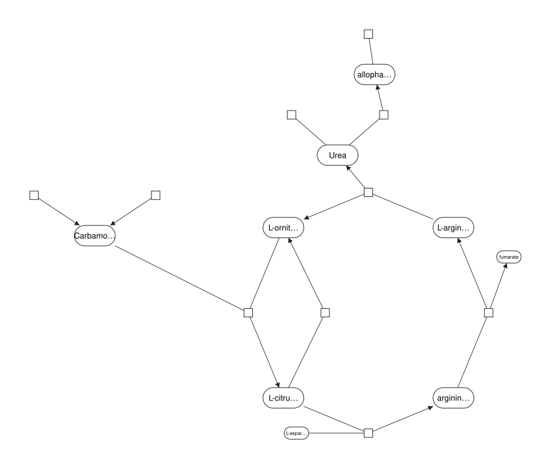
rules-claude (pathway-specific) 1.691 s · 9 of 28 nodes not placed · sbml_pathway_layout 787d47a SVG positions (JSON) ecmapper-brenda (pathway-specific) 5.246 s · 43 drawn nodes (clones) · ecmapper a711a72 SVG positions (JSON) ecmapper-brenda-packed (pathway-specific) 5.311 s · 43 drawn nodes (clones) · ecmapper a711a72 SVG positions (JSON) metacarto (pathway-specific) 3.097 s · 1 of 28 nodes not placed; 46 drawn nodes (clones) · MetaCarto v2.0.0 SVG positions (JSON) sbml2map (pathway-specific) 3.213 s · 6 of 28 nodes not placed; 27 drawn nodes (clones) · sbml2map ca3873a SVG positions (JSON) sbmlnetwork (SBML-specific) 0.66 s · 33 drawn nodes (clones) · sbmlnetwork 0.5.12 SVG positions (JSON) cytoscape-fcose-compartments (compartments as groups) 0.733 s · cytoscape 3.33.1, cytoscape-fcose 2.2.0 SVG positions (JSON) cytoscape-cose-bilkent-compartments (compartments as groups) 0.593 s · cytoscape 3.33.1, cytoscape-cose-bilkent 4.1.0 SVG positions (JSON) reagraph-force-compartments (compartments as groups) 0.866 s · reagraph 4.32.0 SVG positions (JSON) cytoscape-fcose (compound-capable force-directed) 0.829 s · cytoscape 3.33.1, cytoscape-fcose 2.2.0 SVG positions (JSON) cytoscape-cose-bilkent (compound-capable force-directed) 0.793 s · cytoscape 3.33.1, cytoscape-cose-bilkent 4.1.0 SVG positions (JSON) cytoscape-elk-layered (layered) 0.963 s · cytoscape 3.33.1, cytoscape-elk 2.3.0, elkjs 0.9.3 SVG positions (JSON) graphviz-dot (layered) 0.064 s · pygraphviz 2.0.4, Graphviz 14.1.5 SVG positions (JSON) cytoscape-dagre (layered) 0.601 s · cytoscape 3.33.1, cytoscape-dagre 2.5.0 SVG positions (JSON) cytoscape-klay (layered) 0.784 s · cytoscape 3.33.1, cytoscape-klay 3.1.4 SVG positions (JSON) igraph-sugiyama (layered) 0.033 s · igraph 1.0.0 SVG positions (JSON) graphviz-neato (stress) 0.079 s · pygraphviz 2.0.4, Graphviz 14.1.5 SVG positions (JSON) cytoscape-elk-stress (stress) 1.085 s · cytoscape 3.33.1, cytoscape-elk 2.3.0, elkjs 0.9.3 SVG positions (JSON) cytoscape-cola (stress, with constraints) 1.343 s · cytoscape 3.33.1, cytoscape-cola 2.5.1 SVG positions (JSON) networkx-kamada_kawai (stress) 0.555 s · networkx 3.7 SVG positions (JSON) igraph-kk (stress) 0.022 s · igraph 1.0.0 SVG positions (JSON) graphviz-sfdp (force-directed) 0.074 s · pygraphviz 2.0.4, Graphviz 14.1.5 SVG positions (JSON) graphviz-fdp (force-directed) 0.072 s · pygraphviz 2.0.4, Graphviz 14.1.5 SVG positions (JSON) igraph-fr (force-directed) 0.028 s · igraph 1.0.0 SVG positions (JSON) networkx-spring (force-directed) 0.049 s · networkx 3.7 SVG positions (JSON) cytoscape-cose (force-directed) 0.51 s · cytoscape 3.33.1 SVG positions (JSON) cytoscape-elk-force (force-directed) 1.198 s · cytoscape 3.33.1, cytoscape-elk 2.3.0, elkjs 0.9.3 SVG positions (JSON) graphology-forceatlas2 (force-directed) 0.723 s · graphology 0.26.0, graphology-layout-forceatlas2 0.10.1 SVG positions (JSON) graphology-forceatlas2-noverlap (force-directed) 0.786 s · graphology 0.26.0, graphology-layout-forceatlas2 0.10.1, graphology-layout-noverlap 0.4.2 SVG positions (JSON) reagraph-force (force-directed) 0.749 s · reagraph 4.32.0 SVG positions (JSON) igraph-graphopt (force-directed) 0.029 s · igraph 1.0.0 SVG positions (JSON) igraph-drl (for large graphs) 1.015 s · igraph 1.0.0 SVG positions (JSON) igraph-lgl (for large graphs) 0.027 s · igraph 1.0.0 SVG positions (JSON) graphviz-twopi (radial) 0.06 s · pygraphviz 2.0.4, Graphviz 14.1.5 SVG positions (JSON) graphviz-circo (circular) 0.141 s · pygraphviz 2.0.4, Graphviz 14.1.5 SVG positions (JSON) cytoscape-elk-mrtree (tree) 0.747 s · cytoscape 3.33.1, cytoscape-elk 2.3.0, elkjs 0.9.3 SVG positions (JSON) igraph-mds (baseline) 0.026 s · igraph 1.0.0 SVG positions (JSON) networkx-spectral (baseline) 0.033 s · networkx 3.7 SVG positions (JSON)
Scores (click a column to sort; best values bold; hover a header for what it measures) Reactome1 models, 1 with a reference layout
A Reactome pathway; its SBML has Reactome's diagram as an SBML Layout, the reference layout.
R-HSA-77289
Reference : R-HSA-77289.sbml (its SBML Layout) 0.0 s · 253 drawn nodes (clones) SVG positions (JSON)
RuntimeError: 47 reactions, 0/101 formulas, 18 cofactors, 1 drawing(s)
rules-claude (pathway-specific) 28.785 s · sbml_pathway_layout 787d47a SVG positions (JSON) RuntimeError: ValueError: min() iterable argument is empty
ecmapper-brenda (pathway-specific) 5.236 s · ecmapper a711a72 RuntimeError: ValueError: min() iterable argument is empty
ecmapper-brenda-packed (pathway-specific) 5.181 s · ecmapper a711a72 metacarto (pathway-specific) 5.589 s · 26 of 148 nodes not placed; 186 drawn nodes (clones) · MetaCarto v2.0.0 SVG positions (JSON) sbml2map (pathway-specific) 7.61 s · 24 of 148 nodes not placed · sbml2map ca3873a SVG positions (JSON) sbmlnetwork (SBML-specific) 1.90 s · 186 drawn nodes (clones) · sbmlnetwork 0.5.12 SVG positions (JSON) cytoscape-fcose-compartments (compartments as groups) 1.122 s · cytoscape 3.33.1, cytoscape-fcose 2.2.0 SVG positions (JSON) cytoscape-cose-bilkent-compartments (compartments as groups) 1.179 s · cytoscape 3.33.1, cytoscape-cose-bilkent 4.1.0 SVG positions (JSON) reagraph-force-compartments (compartments as groups) 0.947 s · reagraph 4.32.0 SVG positions (JSON) cytoscape-fcose (compound-capable force-directed) 1.287 s · cytoscape 3.33.1, cytoscape-fcose 2.2.0 SVG positions (JSON) cytoscape-cose-bilkent (compound-capable force-directed) 1.341 s · cytoscape 3.33.1, cytoscape-cose-bilkent 4.1.0 SVG positions (JSON) cytoscape-elk-layered (layered) 2.292 s · cytoscape 3.33.1, cytoscape-elk 2.3.0, elkjs 0.9.3 SVG positions (JSON) graphviz-dot (layered) 1.959 s · pygraphviz 2.0.4, Graphviz 14.1.5 SVG positions (JSON) cytoscape-dagre (layered) 2.351 s · cytoscape 3.33.1, cytoscape-dagre 2.5.0 SVG positions (JSON) cytoscape-klay (layered) 2.169 s · cytoscape 3.33.1, cytoscape-klay 3.1.4 SVG positions (JSON) igraph-sugiyama (layered) 0.079 s · igraph 1.0.0 SVG positions (JSON) graphviz-neato (stress) 0.372 s · pygraphviz 2.0.4, Graphviz 14.1.5 SVG positions (JSON) cytoscape-elk-stress (stress) 7.54 s · cytoscape 3.33.1, cytoscape-elk 2.3.0, elkjs 0.9.3 SVG positions (JSON) cytoscape-cola (stress, with constraints) 41.186 s · cytoscape 3.33.1, cytoscape-cola 2.5.1 SVG positions (JSON) networkx-kamada_kawai (stress) 1.205 s · networkx 3.7 SVG positions (JSON) igraph-kk (stress) 0.06 s · igraph 1.0.0 SVG positions (JSON) graphviz-sfdp (force-directed) 0.139 s · pygraphviz 2.0.4, Graphviz 14.1.5 SVG positions (JSON) graphviz-fdp (force-directed) 0.174 s · pygraphviz 2.0.4, Graphviz 14.1.5 SVG positions (JSON) igraph-fr (force-directed) 0.112 s · igraph 1.0.0 SVG positions (JSON) networkx-spring (force-directed) 0.105 s · networkx 3.7 SVG positions (JSON) cytoscape-cose (force-directed) 1.622 s · cytoscape 3.33.1 SVG positions (JSON) cytoscape-elk-force (force-directed) 7.25 s · cytoscape 3.33.1, cytoscape-elk 2.3.0, elkjs 0.9.3 SVG positions (JSON) graphology-forceatlas2 (force-directed) 1.015 s · graphology 0.26.0, graphology-layout-forceatlas2 0.10.1 SVG positions (JSON) graphology-forceatlas2-noverlap (force-directed) 0.956 s · graphology 0.26.0, graphology-layout-forceatlas2 0.10.1, graphology-layout-noverlap 0.4.2 SVG positions (JSON) reagraph-force (force-directed) 0.993 s · reagraph 4.32.0 SVG positions (JSON) igraph-graphopt (force-directed) 0.122 s · igraph 1.0.0 SVG positions (JSON) igraph-drl (for large graphs) 1.101 s · igraph 1.0.0 SVG positions (JSON) igraph-lgl (for large graphs) 0.065 s · igraph 1.0.0 SVG positions (JSON) graphviz-twopi (radial) 0.069 s · pygraphviz 2.0.4, Graphviz 14.1.5 SVG positions (JSON) graphviz-circo (circular) 6.982 s · pygraphviz 2.0.4, Graphviz 14.1.5 SVG positions (JSON) cytoscape-elk-mrtree (tree) 1.486 s · cytoscape 3.33.1, cytoscape-elk 2.3.0, elkjs 0.9.3 SVG positions (JSON) igraph-mds (baseline) 0.037 s · igraph 1.0.0 SVG positions (JSON) networkx-spectral (baseline) 0.119 s · networkx 3.7 SVG positions (JSON)
Scores (click a column to sort; best values bold; hover a header for what it measures) Genome-scale and core models4 models, 0 with a reference layout
e_coli_coreno reference layout
No reference layout
timeout after 300 s
rules-claude (pathway-specific) 300.0 s · sbml_pathway_layout 787d47a ecmapper-brenda (pathway-specific) 8.822 s · 64 of 167 nodes not placed; 249 drawn nodes (clones) · ecmapper a711a72 SVG positions (JSON) ecmapper-brenda-packed (pathway-specific) 8.415 s · 64 of 167 nodes not placed; 249 drawn nodes (clones) · ecmapper a711a72 SVG positions (JSON) metacarto (pathway-specific) 14.148 s · 1 of 167 nodes not placed; 302 drawn nodes (clones) · MetaCarto v2.0.0 SVG positions (JSON) sbml2map (pathway-specific) 136.481 s · 23 of 167 nodes not placed; 220 drawn nodes (clones) · sbml2map ca3873a SVG positions (JSON) sbmlnetwork (SBML-specific) 16.69 s · 350 drawn nodes (clones) · sbmlnetwork 0.5.12 SVG positions (JSON) cytoscape-fcose-compartments (compartments as groups) 1.399 s · cytoscape 3.33.1, cytoscape-fcose 2.2.0 SVG positions (JSON) cytoscape-cose-bilkent-compartments (compartments as groups) 1.311 s · cytoscape 3.33.1, cytoscape-cose-bilkent 4.1.0 SVG positions (JSON) reagraph-force-compartments (compartments as groups) 0.948 s · reagraph 4.32.0 SVG positions (JSON) cytoscape-fcose (compound-capable force-directed) 2.242 s · cytoscape 3.33.1, cytoscape-fcose 2.2.0 SVG positions (JSON) cytoscape-cose-bilkent (compound-capable force-directed) 2.374 s · cytoscape 3.33.1, cytoscape-cose-bilkent 4.1.0 SVG positions (JSON) cytoscape-elk-layered (layered) 3.145 s · cytoscape 3.33.1, cytoscape-elk 2.3.0, elkjs 0.9.3 SVG positions (JSON) graphviz-dot (layered) 6.389 s · pygraphviz 2.0.4, Graphviz 14.1.5 SVG positions (JSON) cytoscape-dagre (layered) 5.814 s · cytoscape 3.33.1, cytoscape-dagre 2.5.0 SVG positions (JSON) cytoscape-klay (layered) 3.271 s · cytoscape 3.33.1, cytoscape-klay 3.1.4 SVG positions (JSON) igraph-sugiyama (layered) 0.218 s · igraph 1.0.0 SVG positions (JSON) graphviz-neato (stress) 0.695 s · pygraphviz 2.0.4, Graphviz 14.1.5 SVG positions (JSON) cytoscape-elk-stress (stress) 13.397 s · cytoscape 3.33.1, cytoscape-elk 2.3.0, elkjs 0.9.3 SVG positions (JSON) cytoscape-cola (stress, with constraints) 85.004 s · cytoscape 3.33.1, cytoscape-cola 2.5.1 SVG positions (JSON) networkx-kamada_kawai (stress) 1.4 s · networkx 3.7 SVG positions (JSON) igraph-kk (stress) 0.08 s · igraph 1.0.0 SVG positions (JSON) graphviz-sfdp (force-directed) 0.184 s · pygraphviz 2.0.4, Graphviz 14.1.5 SVG positions (JSON) graphviz-fdp (force-directed) 0.229 s · pygraphviz 2.0.4, Graphviz 14.1.5 SVG positions (JSON) igraph-fr (force-directed) 0.096 s · igraph 1.0.0 SVG positions (JSON) networkx-spring (force-directed) 0.222 s · networkx 3.7 SVG positions (JSON) cytoscape-cose (force-directed) 2.641 s · cytoscape 3.33.1 SVG positions (JSON) cytoscape-elk-force (force-directed) 14.255 s · cytoscape 3.33.1, cytoscape-elk 2.3.0, elkjs 0.9.3 SVG positions (JSON) graphology-forceatlas2 (force-directed) 0.94 s · graphology 0.26.0, graphology-layout-forceatlas2 0.10.1 SVG positions (JSON) graphology-forceatlas2-noverlap (force-directed) 0.962 s · graphology 0.26.0, graphology-layout-forceatlas2 0.10.1, graphology-layout-noverlap 0.4.2 SVG positions (JSON) reagraph-force (force-directed) 1.011 s · reagraph 4.32.0 SVG positions (JSON) igraph-graphopt (force-directed) 0.173 s · igraph 1.0.0 SVG positions (JSON) igraph-drl (for large graphs) 1.941 s · igraph 1.0.0 SVG positions (JSON) igraph-lgl (for large graphs) 0.109 s · igraph 1.0.0 SVG positions (JSON) graphviz-twopi (radial) 0.085 s · pygraphviz 2.0.4, Graphviz 14.1.5 SVG positions (JSON) graphviz-circo (circular) 57.197 s · pygraphviz 2.0.4, Graphviz 14.1.5 SVG positions (JSON) cytoscape-elk-mrtree (tree) 1.761 s · cytoscape 3.33.1, cytoscape-elk 2.3.0, elkjs 0.9.3 SVG positions (JSON) igraph-mds (baseline) 0.052 s · igraph 1.0.0 SVG positions (JSON) networkx-spectral (baseline) 0.18 s · networkx 3.7 SVG positions (JSON)
Scores (click a column to sort; best values bold; hover a header for what it measures) e_coli_iCH360no reference layout
No reference layout
timeout after 300 s
rules-claude (pathway-specific) 300.0 s · sbml_pathway_layout 787d47a ecmapper-brenda (pathway-specific) 25.23 s · 180 of 653 nodes not placed; 1166 drawn nodes (clones) · ecmapper a711a72 SVG positions (JSON) ecmapper-brenda-packed (pathway-specific) 21.292 s · 180 of 653 nodes not placed; 1166 drawn nodes (clones) · ecmapper a711a72 SVG positions (JSON) metacarto (pathway-specific) 83.993 s · 3 of 653 nodes not placed; 1266 drawn nodes (clones) · MetaCarto v2.0.0 SVG positions (JSON) sbml2map (pathway-specific) 72.346 s · 52 of 653 nodes not placed; 921 drawn nodes (clones) · sbml2map ca3873a SVG positions (JSON) sbmlnetwork (SBML-specific) 148.31 s · 1069 drawn nodes (clones) · sbmlnetwork 0.5.12 SVG positions (JSON) cytoscape-fcose-compartments (compartments as groups) 13.354 s · cytoscape 3.33.1, cytoscape-fcose 2.2.0 SVG positions (JSON) cytoscape-cose-bilkent-compartments (compartments as groups) 13.209 s · cytoscape 3.33.1, cytoscape-cose-bilkent 4.1.0 SVG positions (JSON) reagraph-force-compartments (compartments as groups) 2.407 s · reagraph 4.32.0 SVG positions (JSON) cytoscape-fcose (compound-capable force-directed) 17.906 s · cytoscape 3.33.1, cytoscape-fcose 2.2.0 SVG positions (JSON) cytoscape-cose-bilkent (compound-capable force-directed) 21.653 s · cytoscape 3.33.1, cytoscape-cose-bilkent 4.1.0 SVG positions (JSON) cytoscape-elk-layered (layered) 22.105 s · cytoscape 3.33.1, cytoscape-elk 2.3.0, elkjs 0.9.3 SVG positions (JSON) timeout after 600 s
graphviz-dot (layered) 600.0 s · pygraphviz 2.0.4, Graphviz 14.1.5 cytoscape-dagre (layered) 204.895 s · cytoscape 3.33.1, cytoscape-dagre 2.5.0 SVG positions (JSON) cytoscape-klay (layered) 29.692 s · cytoscape 3.33.1, cytoscape-klay 3.1.4 SVG positions (JSON) igraph-sugiyama (layered) 2.365 s · igraph 1.0.0 SVG positions (JSON) graphviz-neato (stress) 12.885 s · pygraphviz 2.0.4, Graphviz 14.1.5 SVG positions (JSON) cytoscape-elk-stress (stress) 279.086 s · cytoscape 3.33.1, cytoscape-elk 2.3.0, elkjs 0.9.3 SVG positions (JSON) timeout after 600 s
cytoscape-cola (stress, with constraints) 600.0 s · cytoscape 3.33.1, cytoscape-cola 2.5.1 networkx-kamada_kawai (stress) 40.421 s · networkx 3.7 SVG positions (JSON) igraph-kk (stress) 0.89 s · igraph 1.0.0 SVG positions (JSON) graphviz-sfdp (force-directed) 1.135 s · pygraphviz 2.0.4, Graphviz 14.1.5 SVG positions (JSON) graphviz-fdp (force-directed) 1.709 s · pygraphviz 2.0.4, Graphviz 14.1.5 SVG positions (JSON) igraph-fr (force-directed) 0.971 s · igraph 1.0.0 SVG positions (JSON) networkx-spring (force-directed) 3.773 s · networkx 3.7 SVG positions (JSON) cytoscape-cose (force-directed) 28.664 s · cytoscape 3.33.1 SVG positions (JSON) cytoscape-elk-force (force-directed) 230.033 s · cytoscape 3.33.1, cytoscape-elk 2.3.0, elkjs 0.9.3 SVG positions (JSON) graphology-forceatlas2 (force-directed) 2.67 s · graphology 0.26.0, graphology-layout-forceatlas2 0.10.1 SVG positions (JSON) graphology-forceatlas2-noverlap (force-directed) 3.339 s · graphology 0.26.0, graphology-layout-forceatlas2 0.10.1, graphology-layout-noverlap 0.4.2 SVG positions (JSON) reagraph-force (force-directed) 2.238 s · reagraph 4.32.0 SVG positions (JSON) igraph-graphopt (force-directed) 2.229 s · igraph 1.0.0 SVG positions (JSON) igraph-drl (for large graphs) 2.505 s · igraph 1.0.0 SVG positions (JSON) igraph-lgl (for large graphs) 0.486 s · igraph 1.0.0 SVG positions (JSON) graphviz-twopi (radial) 0.531 s · pygraphviz 2.0.4, Graphviz 14.1.5 SVG positions (JSON) timeout after 600 s
graphviz-circo (circular) 600.0 s · pygraphviz 2.0.4, Graphviz 14.1.5 cytoscape-elk-mrtree (tree) 24.65 s · cytoscape 3.33.1, cytoscape-elk 2.3.0, elkjs 0.9.3 SVG positions (JSON) igraph-mds (baseline) 0.743 s · igraph 1.0.0 SVG positions (JSON) networkx-spectral (baseline) 0.267 s · networkx 3.7 SVG positions (JSON)
Scores (click a column to sort; best values bold; hover a header for what it measures) Mycoplasma_genitalium-Opt243273_1no reference layout
No reference layout
timeout after 300 s
rules-claude (pathway-specific) 300.0 s · sbml_pathway_layout 787d47a RuntimeError: ValueError: min() iterable argument is empty
ecmapper-brenda (pathway-specific) 5.453 s · ecmapper a711a72 RuntimeError: ValueError: min() iterable argument is empty
ecmapper-brenda-packed (pathway-specific) 5.381 s · ecmapper a711a72 metacarto (pathway-specific) 60.146 s · 1505 drawn nodes (clones) · MetaCarto v2.0.0 SVG positions (JSON) sbml2map (pathway-specific) 42.499 s · 15 of 774 nodes not placed; 760 drawn nodes (clones) · sbml2map ca3873a SVG positions (JSON) sbmlnetwork (SBML-specific) 133.28 s · 1130 drawn nodes (clones) · sbmlnetwork 0.5.12 SVG positions (JSON) cytoscape-fcose-compartments (compartments as groups) 10.54 s · cytoscape 3.33.1, cytoscape-fcose 2.2.0 SVG positions (JSON) cytoscape-cose-bilkent-compartments (compartments as groups) 9.084 s · cytoscape 3.33.1, cytoscape-cose-bilkent 4.1.0 SVG positions (JSON) reagraph-force-compartments (compartments as groups) 2.519 s · reagraph 4.32.0 SVG positions (JSON) cytoscape-fcose (compound-capable force-directed) 10.484 s · cytoscape 3.33.1, cytoscape-fcose 2.2.0 SVG positions (JSON) cytoscape-cose-bilkent (compound-capable force-directed) 15.09 s · cytoscape 3.33.1, cytoscape-cose-bilkent 4.1.0 SVG positions (JSON) cytoscape-elk-layered (layered) 11.173 s · cytoscape 3.33.1, cytoscape-elk 2.3.0, elkjs 0.9.3 SVG positions (JSON) graphviz-dot (layered) 29.61 s · pygraphviz 2.0.4, Graphviz 14.1.5 SVG positions (JSON) cytoscape-dagre (layered) 19.355 s · cytoscape 3.33.1, cytoscape-dagre 2.5.0 SVG positions (JSON) cytoscape-klay (layered) 11.561 s · cytoscape 3.33.1, cytoscape-klay 3.1.4 SVG positions (JSON) igraph-sugiyama (layered) 0.535 s · igraph 1.0.0 SVG positions (JSON) graphviz-neato (stress) 17.063 s · pygraphviz 2.0.4, Graphviz 14.1.5 SVG positions (JSON) cytoscape-elk-stress (stress) 280.581 s · cytoscape 3.33.1, cytoscape-elk 2.3.0, elkjs 0.9.3 SVG positions (JSON) timeout after 600 s
cytoscape-cola (stress, with constraints) 600.0 s · cytoscape 3.33.1, cytoscape-cola 2.5.1 networkx-kamada_kawai (stress) 68.496 s · networkx 3.7 SVG positions (JSON) igraph-kk (stress) 1.39 s · igraph 1.0.0 SVG positions (JSON) graphviz-sfdp (force-directed) 0.96 s · pygraphviz 2.0.4, Graphviz 14.1.5 SVG positions (JSON) graphviz-fdp (force-directed) 1.407 s · pygraphviz 2.0.4, Graphviz 14.1.5 SVG positions (JSON) igraph-fr (force-directed) 1.552 s · igraph 1.0.0 SVG positions (JSON) networkx-spring (force-directed) 5.278 s · networkx 3.7 SVG positions (JSON) cytoscape-cose (force-directed) 27.763 s · cytoscape 3.33.1 SVG positions (JSON) cytoscape-elk-force (force-directed) 254.791 s · cytoscape 3.33.1, cytoscape-elk 2.3.0, elkjs 0.9.3 SVG positions (JSON) graphology-forceatlas2 (force-directed) 4.124 s · graphology 0.26.0, graphology-layout-forceatlas2 0.10.1 SVG positions (JSON) graphology-forceatlas2-noverlap (force-directed) 4.755 s · graphology 0.26.0, graphology-layout-forceatlas2 0.10.1, graphology-layout-noverlap 0.4.2 SVG positions (JSON) reagraph-force (force-directed) 2.497 s · reagraph 4.32.0 SVG positions (JSON) igraph-graphopt (force-directed) 3.052 s · igraph 1.0.0 SVG positions (JSON) igraph-drl (for large graphs) 2.681 s · igraph 1.0.0 SVG positions (JSON) igraph-lgl (for large graphs) 0.447 s · igraph 1.0.0 SVG positions (JSON) graphviz-twopi (radial) 0.316 s · pygraphviz 2.0.4, Graphviz 14.1.5 SVG positions (JSON) timeout after 600 s
graphviz-circo (circular) 600.0 s · pygraphviz 2.0.4, Graphviz 14.1.5 cytoscape-elk-mrtree (tree) 8.795 s · cytoscape 3.33.1, cytoscape-elk 2.3.0, elkjs 0.9.3 SVG positions (JSON) igraph-mds (baseline) 1.037 s · igraph 1.0.0 SVG positions (JSON) networkx-spectral (baseline) 0.276 s · networkx 3.7 SVG positions (JSON)
Scores (click a column to sort; best values bold; hover a header for what it measures) iML1515no reference layout
No reference layout
timeout after 300 s
rules-claude (pathway-specific) 300.0 s · sbml_pathway_layout 787d47a ecmapper-brenda (pathway-specific) 142.163 s · 2664 of 4589 nodes not placed; 4296 drawn nodes (clones) · ecmapper a711a72 SVG positions (JSON) ecmapper-brenda-packed (pathway-specific) 125.165 s · 2664 of 4589 nodes not placed; 4296 drawn nodes (clones) · ecmapper a711a72 SVG positions (JSON) metacarto (pathway-specific) 214.135 s · 5 of 4589 nodes not placed; 8605 drawn nodes (clones) · MetaCarto v2.0.0 SVG positions (JSON) timeout after 300 s
sbml2map (pathway-specific) 300.0 s · sbml2map ca3873a timeout after 300 s
sbmlnetwork (SBML-specific) 300.00 s · sbmlnetwork 0.5.12 timeout after 300 s
cytoscape-fcose-compartments (compartments as groups) 300.0 s · cytoscape 3.33.1, cytoscape-fcose 2.2.0 timeout after 300 s
cytoscape-cose-bilkent-compartments (compartments as groups) 300.0 s · cytoscape 3.33.1, cytoscape-cose-bilkent 4.1.0 reagraph-force-compartments (compartments as groups) 14.148 s · reagraph 4.32.0 SVG positions (JSON) timeout after 300 s
cytoscape-fcose (compound-capable force-directed) 300.0 s · cytoscape 3.33.1, cytoscape-fcose 2.2.0 timeout after 300 s
cytoscape-cose-bilkent (compound-capable force-directed) 300.0 s · cytoscape 3.33.1, cytoscape-cose-bilkent 4.1.0 timeout after 300 s
cytoscape-elk-layered (layered) 300.0 s · cytoscape 3.33.1, cytoscape-elk 2.3.0, elkjs 0.9.3 timeout after 300 s
graphviz-dot (layered) 300.0 s · pygraphviz 2.0.4, Graphviz 14.1.5 timeout after 300 s
cytoscape-dagre (layered) 300.0 s · cytoscape 3.33.1, cytoscape-dagre 2.5.0 timeout after 300 s
cytoscape-klay (layered) 300.0 s · cytoscape 3.33.1, cytoscape-klay 3.1.4 igraph-sugiyama (layered) 7.613 s · igraph 1.0.0 SVG positions (JSON) timeout after 300 s
graphviz-neato (stress) 300.0 s · pygraphviz 2.0.4, Graphviz 14.1.5 timeout after 300 s
cytoscape-elk-stress (stress) 300.0 s · cytoscape 3.33.1, cytoscape-elk 2.3.0, elkjs 0.9.3 timeout after 300 s
cytoscape-cola (stress, with constraints) 300.0 s · cytoscape 3.33.1, cytoscape-cola 2.5.1 timeout after 300 s
networkx-kamada_kawai (stress) 300.0 s · networkx 3.7 igraph-kk (stress) 38.429 s · igraph 1.0.0 SVG positions (JSON) graphviz-sfdp (force-directed) 5.542 s · pygraphviz 2.0.4, Graphviz 14.1.5 SVG positions (JSON) graphviz-fdp (force-directed) 9.076 s · pygraphviz 2.0.4, Graphviz 14.1.5 SVG positions (JSON) igraph-fr (force-directed) 0.646 s · igraph 1.0.0 SVG positions (JSON) networkx-spring (force-directed) 188.575 s · networkx 3.7 SVG positions (JSON) timeout after 300 s
cytoscape-cose (force-directed) 300.0 s · cytoscape 3.33.1 timeout after 300 s
cytoscape-elk-force (force-directed) 300.0 s · cytoscape 3.33.1, cytoscape-elk 2.3.0, elkjs 0.9.3 graphology-forceatlas2 (force-directed) 17.448 s · graphology 0.26.0, graphology-layout-forceatlas2 0.10.1 SVG positions (JSON) graphology-forceatlas2-noverlap (force-directed) 28.519 s · graphology 0.26.0, graphology-layout-forceatlas2 0.10.1, graphology-layout-noverlap 0.4.2 SVG positions (JSON) reagraph-force (force-directed) 13.486 s · reagraph 4.32.0 SVG positions (JSON) igraph-graphopt (force-directed) 77.594 s · igraph 1.0.0 SVG positions (JSON) igraph-drl (for large graphs) 8.433 s · igraph 1.0.0 SVG positions (JSON) igraph-lgl (for large graphs) 4.064 s · igraph 1.0.0 SVG positions (JSON) graphviz-twopi (radial) 2.067 s · pygraphviz 2.0.4, Graphviz 14.1.5 SVG positions (JSON) timeout after 300 s
graphviz-circo (circular) 300.0 s · pygraphviz 2.0.4, Graphviz 14.1.5 timeout after 300 s
cytoscape-elk-mrtree (tree) 300.0 s · cytoscape 3.33.1, cytoscape-elk 2.3.0, elkjs 0.9.3 igraph-mds (baseline) 95.6 s · igraph 1.0.0 SVG positions (JSON) networkx-spectral (baseline) 13.397 s · networkx 3.7 SVG positions (JSON)
Scores (click a column to sort; best values bold; hover a header for what it measures)